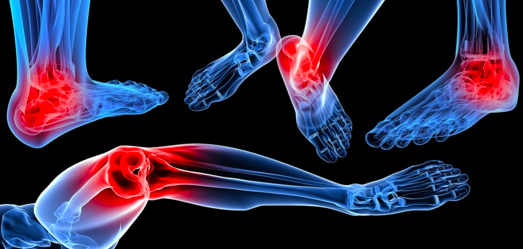

"... рецепты превосходного и испытанного действия".
Шекспир
АЛОПЕЦИЯ
В этом примере проплешины находятся исключительно на левой стороне кожи головы. Это показывает, что потеря физического контакта (например, отсутствие возможности погладить по голове) связана с партнером, если мужчина левша, или с его матерью, если он правша . С разрешением конфликта волосы начинают снова расти.
№ 11 – Silicea (кремнезем, кремний).)
Принимать утром
№ 8 – Natrium chloratum (поваренная соль).
Принимать вечером
На этом снимке показано несколько фурункулов, распространенных по обеим сторонам верхней части спины. Злонамеренная ругань за спиной может быть сценарием атакующего конфликта, воспринимаемого в этой конкретной области тела.
АБСЦЕСС
Карбункул или фурункул , также известный как абсцесс кожи, является узелком заполненым гноем от бактериальной активности в коже кориума. Фурункул или карбункул может также находиться в соединительной ткани; в этом случае причиной возникновения может быть "конфликтом самооценки". Фурункул который развивается на копчике возле расщелины ягодиц может быть причиной "конфликта механической атаки". Как пример можно привести факт широкого распростронения это заболевание в армии США во время Второй мировой войны, которое было названо «болезнью джип-райдеров» и которое являлось следствием продолжительных поездок по ухабистым дорогам, что и провоцировало «атакующий» конфликт.
№ 3 - Ferrum phosphoricum (фосфат железа)
Это первое лекарство, которое следует давать во всех случаях фурункулов, карбункулов, фелонов или любых гнойных процессов, когда присутствуют лихорадка, жар, пульсирующая боль и застойные явления в частях тела. При раннем применении это средство часто помогает избавиться от нагноения.
№ 4 – Kalium chloratum (хлорид калия)
Показан на второй стадии фурункулов, карбункулов, фелонов, абсцессов и т. Д., Когда есть опухоль, но еще нет гноя; особенно это показано при абсцессах груди с вышеуказанными характеристиками. Его можно назначать при карбункулах, фурункулах и других гнойных процессах, чтобы остановить отек до образования вещества.
Многолетние свищевые абсцессы с выделением водянистого гноя, окруженные широкой синеватой каймой. Роющие абсцессы. Однократная доза 3х растирания дает всему благоприятный оборот; абсцессы схлопываются, свищевые каналы подсыхают. Показан при панарициях, воспаление или нагноение вокруг корней ногтей.
№ 11 – Silicea (кремнезем, кремний).)
При появлении нагноения это средство нужно сразу же применить. Это очень помогает гнойному процессу, заставляя опухоль быстро созревать и часто спонтанно стягиваться. Назначается после Kali mur. в тех случаях, когда начал формироваться гной, как при абсцессе молочной железы, особенно если Kali mur. не удалось остановить нагноение. После разрыва или вскрытия абсцесса прием этого препарата следует продолжать до тех пор, пока сохраняется инфильтрация. Silicea также полезна при слепых фурункулах. В то время как Silicea помогает контролировать образование гноя и стимулирует рост новых ногтей. Невозможно переоценить использование Silicea во всех случаях, когда начинается появления гноя. "Доза каждые два часа обычно излечивает процесс за двадцать четыре часа". (AP Davis, MD).
Это средство хорошо следует за Silicea при гнойных процессах, когда, несмотря на отсутствие инфильтрации, нагноение продолжается из-за оцепенения пораженных тканей. Наличие выделяющегося гноя является показанием для его использования. Отличительными особенностями этого средства от силицеи при абсцессах являются следующие: Силицея способствует быстрому созреванию нагноению; Calc-s. заживляет гноящиеся раны, так как прекращает гнойный процесс. Самое полезное средство при фурункулах.
№5 кalium phosphoricum (фосфористый калий)
Это средство показано тогда, когда гной имеет кровавый, неприятный и грязный вид. При мастите, когда гной коричневатый, грязный и неприятный.
Когда гнойный процесс поражает кость или там, где есть твердые, мозолистые края раны, тогда это средство будет эффективным. “Это бесценное средство при абсцессе малого таза, вызванном кариесом какой-либо кости”. (Southwick.) “В старых случаях свищевых каналов молочных желез я нахожу это средство особенно ценным”. (J.W. Ward, M.D.)
АКНЕ
Акне связано с приступом или конфликтом «ощущение грязи» .Прыщи чаще всего появляются на лице, особенно в период полового созревания, поскольку подростки гораздо более уязвимы в отношении своей внешности. Поэтому ощущение непривлекательности или некрасивости может легко привести к появлению прыщей. Также подростковые годы - это время, когда больше конфронтации ( словесных нападок ) со взрослыми (родителями, учителями, властями).
"Конфликт потери"
Он может быть связан с потерей любимого человека. Страх потерять любимого человека уже может спровоцировать конфликт. Постоянное самообвинение после разрыва или смерти кого-то близкого может поддерживать конфликт активным. Женщины также страдают от конфликтов потери после выкидышей или принудительных абортов. Конфликт потери может быть активирован в результате ссоры, предательства или неверности партнера или друга. В зависимости от интенсивности конфликта длительная конфликтная активность приводит к нерегулярным периодам, задержке менархе (первая менструация), аменорее (отсутствие менструации) или бесплодию до разрешения конфликта
№ 4 – Kalium chloratum (хлорид калия)
Вялая печень; белый налет на языке и отсутствие активности желез.
№5 кalium phosphoricum (фосфористый калий)
Постоянная тупая головная боль, раздражительность, суетливость и не может себя контролировать.
СЛУЧАИ АМЕНОРЕИ [СЛУЧАИ АМЕНОРЕИ]
1. Случай с молодой девушкой, у которой менструация не появлялась в течение нескольких месяцев, и у которой как следствие начались проблемы с грудной клеткой. Kali phos.30, доза вечером и утром. Вскоре возобновились менструации, и через четыре недели боли в груди исчезли.
2. Девушка, ат. 22, у которого всегда были скудные менструации, которые в течение последнего года полностью прекратились и вызывали проблемы с головой и глазами, получил 12 мая 1887 г., Kali phos., Шесть порошков. После шести дней использования менструации возобновились с сильной головной болью и продолжались семь дней, а другие ее проблемы постепенно исчезли. (Монацблаттер.)
Доктор Джордж Ройал сообщает о случае аменореи со следующими симптомами, излеченного с помощью Kali phos. 3x: «Постоянная тупая головная боль, сонливость весь день, раздражительность и раздражительность, легко плачет, так нервничает, что не может контролировать себя»
АНЕМИЯ
Серьзный конфликт самооценки, затронувший костный мозг, может привести к анемии (низкое количество эритроцитов)
Если обощить Конфликт самооценки, то он переживается, например, через унижение (обвинения, ругань, уничижительные замечания), насилие (физическое, сексуальное, словесное), неудачу (на работе, в школе, в спорте, в отношениях, как родитель или партнер), плохую успеваемость (интеллектуальную, художественную, спортивную) или чувство стыда и вины. Потеря статуса, потеря работы, выход на пенсию, болезнь или травма (“Я вышел из строя”), старение (“Я уже не так хорош, как раньше”, “Я старею и становлюсь бесполезным”) или потеря человека, который заставил вас чувствовать себя ценным и нужным, - это другие сценарии конфликта. То, как мы воспринимаем себя или говорим себе (“Я неудачник”, “я никогда не добьюсь успеха”), создает ментальную предрасположенность к обобщенным конфликтам самооценки. Дети и пожилые люди более уязвимы к конфликту.
№ 3 - Ferrum phosphoricum (фосфат железа)
Следует за Calcarea phos. как только наступает улучшение общего самочувствия. В организме наблюдается недостаток красной крови. Это лекарство, благодаря своей способности притягивать кислород, окрашивает новые кровяные тельца в красный цвет и обогащает их после того, как они попали в организм с помощью Calcarea phos.
№ 4 – Kalium chloratum (хлорид калия)
Это средство может быть назначено при анемии в качестве вторичного средства или интеркуррентного средства, если сосуществуют такие симптомы, как экзема или кожные высыпания.
№5 кalium phosphoricum (фосфористый калий)
Церебральная анемия, анемия головного мозга, вызывающая чрезмерную нервозность. Бедность крови из-за воздействий, постоянно угнетающих ум и нервную систему. Это лекарство также лечит лейкемию, вызванную длительными заболеваниями. «Спинальная анемия, вызванная изнурительными заболеваниями, такими как дифтерия, рефлекторная параплегия, с ноющими болями, усиливающимися в покое, но наиболее проявляющимися при начале движения». (Арндт).
№ 8 – Natrium chloratum (поваренная соль).
В условиях анемии, когда кровь жидкая и водянистая; в хлоротических условиях с почти привычным ощущением холода в спине; хлороз у молодых девушек, с омертвевшей грязной кожей, частым сердцебиением, стеснением и беспокойством в груди, утренним кашлем, легко утомляемым и падающим телом, с характерным языком и т. д .; малярийная кахексия, вызванная лихорадкой и хинином, землистый цвет лица или очень бледный, давление и вздутие живота, запор со сжатием заднего прохода, ужасная печаль.
№ 9 – Natrium phosphoricum (фосфат натрия)
Спинальная анемия, паралитическая слабость нижних конечностей с общей прострацией, тяжестью и ощущением усталости, особенно после короткой прогулки или подъема по лестнице; ноги подкашиваются, чтобы не двигаться дальше.
Гидремия, сикоз, гидрогеноидная конституция тела, зависящая от сырости погоды или проживания в сырых домах; сикоз и гидремия. (Лилиенталь).
№ 11 – Silicea (кремнезем, кремний).)
Бели вместо менструаций; приступ мгновенной слепоты или помутнения зрения. Анемия у младенцев, худых, нежных и щуплых, со склонностью к рахиту.
СЛУЧАИ АНЕМИИ [Случаи анемии]
Д-р С. Пауэлл Бёрдик сообщил нам о двух случаях анемии, оба у молодых девушек, 19 и 21 лет. Оба имели следующие характерные симптомы: бледность, анемия на лице, сильное истощение, подавленность духа, сильные приступы лобной головной боли, продолжающейся к затылку. Самый младший страдал от этого состояния в течение шести или семи лет и лечился у нескольких врачей, гомеопатических и аллопатических, получая от последнего большие количества железа без какой-либо пользы. Старший тоже несколько дней страдал анемией. Все симптомы быстро исчезли, цвет вернулся даже к румяным щекам; уши, которые раньше были бледными и почти полупрозрачными, стали красноватыми и естественного цвета. Применяемые средства: сначала Calcarea phos.12 в течение десяти дней или двух недель, затем Ferrum phos.12 в течение двух недель, затем возвращение к Calcarea phos. очередной раз. В каждом случае хватало примерно шести месяцев, чтобы окончательно вылечить.
Юная леди, ат. 17 лет, после длительного учебы в школе заболела анемией и хлоротиком, настолько ослабела, что не могла больше посещать занятия, не имела аппетита и желала только лгать по дому, не имея амбиций никуда идти или что-либо делать. У нее заболела голова от учебы, и ей пришлось полностью отказаться от него; менструации были нерегулярными, отсутствовали в течение нескольких месяцев, затем менструация менялась по количеству. В качестве основного лекарства я дал ей Calcarea phos6., Иногда также и Ferrum phos.. Через несколько месяцев она стала достаточно здоровой, чтобы возобновить учебу, и могла ходить куда угодно, и ее цвет кожи улучшился. (CTM).
NATRUM MUR: W. Rawley сообщает о случае анемии из-за злоупотребления солью. Пациент был истощен, с общей бледностью; слабое место; повышенная чувствительность; менструальные выделения никогда не устанавливаются должным образом. Кишечник склонен к запорам. Имеет привычку чрезмерно употреблять соль. При лечении случая было ограничено использование одной дозы Nat. мур. Дано 200, после чего наступило общее улучшение, менструальные выделения вернулись в обычное состояние и силу, а общее состояние здоровья восстановилось.
АНЕВРИЗМА
Биологический конфликт, связанный с артериями,-это легкий конфликт самооценки, переживаемый в области конкретной артерии.
Человек, которому трудно ходить (после несчастного случая, болезни, операции), может страдать конфликтом самооценки ( конфликтом физической работоспособности), затрагивающим артерии ног (бедренные артерии) или ноги (большеберцовая артерия). Брюшная аорта связана с конфликтом самооценки, связанным с брюшной областью (боль в животе, запор , болезнь Крона, диагностика рака толстой кишки, хирургия) и страхом, что что-то не так “там”. То же самое относится к грудной аорте, которая проходит через грудную и другие артерии, такие как почечная артерия или тазовая артерия которые снабжают почки и область таза. Внешние отделы подключичных артерий, несущих кровь к плечу и рукам, относятся к конфликту самооценки отношений (потерпев неудачу в качестве партнера или родителя). Внешние сонные артерии, которые доставляют кровь к лицу и коже головы, а также мозговые артерии связаны с интеллектуальным конфликтом самооценки.
№1 – Calcium fluoratum (фторид кальция, плавиковый шпат)
Это заболевание на ранней стадии можно контролировать или уменьшить с помощью этого, главного лекарства, в комбинации с Ferrum phos., При условии, что не принимается йодид поташа.
№ 3 - Ferrum phosphoricum (фосфат железа)
Это средство следует использовать на ранней стадии, чтобы восстановить нормальное кровообращение и устранить те осложнения, которые возникают из-за чрезмерной работы сердца; также можно чередовать с предыдущим с хорошим эффектом. При небольших аневризмах с сильной пульсацией.
АПОПЛЕКСИЯ (ИНСУЛЬТ)
Является серьезным конфликтом самооценки или двигательного конфликта.
В ГНМ различают симпатикотонический инсульт (“белый инсульт") и ваготонический инсульт (“красный инсульт”).
Белый инсульт происходит в момент DHS. Воздействие двигательного конфликта в моторной коре вызывает внезапную мышечную слабость в одной или нескольких конечностях, обычно на одной стороне тела. Какая сторона пострадала, зависит от того, является ли конфликт материнским/детским илисвязанным с партнером.
При белом инсульте мышечная слабость или паралич продолжается на протяжении всей активной фазы конфликта (холодные руки, слабый аппетит) и доходит до PCL-A. Эпилептоидный криз, который является периодом, когда отек мозга в моторной коре вытесняется, вызывает неконтролируемые подергивания и сокращения пораженной мышцы(мышц) или эпилептический припадок. Вот почему иногда бывает трудно отличить инсульт от припадка.
Красный инсульт происходит, когда отек мозга в непосредственной близости от двигательной коры давит на двигательную кору, например , отек в мозговой ретрансляции бронхов, гортаниили миокарда. “Инсульт” начинается в начале Эпилептоидного криза и длится в течение всего кризиса от нескольких минут (“транзиторная ишемическая атака”) до нескольких часов, в зависимости от того, сколько времени требуется для удаления отека.
№ 3 - Ferrum phosphoricum (фосфат железа)
Лекарства - Ferrum phos. сразу, а затем Silicea. .
Чтобы предотвратить возможный инсульт, время от времени принимайте Calcarea phos. Примерно два раза в неделю.
АППЕНДИЦИТ
Психическая причина: конфликт непереваримоего кусочка, для животных неперевариваемый кусочек-это настоящий кусок пищи; для людей это может быть образный “кусочек”, например, автомобиль, дом или ценный предмет. Лечение
№ 4 – Kalium chloratum (хлорид калия)
Главное лекарство
№ 7 – мagnesium phosphoricum (фосфат магния)
При сильной боли
№ 11 – Silicea (кремнезем, кремний).)
Конституционный..
№ 3 - Ferrum phosphoricum (фосфат железа)
При жаре.
АСТМА
БИОЛОГИЧЕСКИЙ КОНФЛИКТ: -это конфликт страха смерти, потому что в биологических терминах паника смерти приравнивается к неспособности дышать. Центр управления на правой стороне ствола мозга связан с “неспособностью поймать кусочек воздуха”, то есть с неспособностью вдохнуть. Центр управления в левой части ствола мозга относится к “неспособности устранить кусочек воздуха”, то есть к неспособности выдохнуть, например, из-за гипервентиляции.
№5 кalium phosphoricum (фосфористый калий)
Нервная астма. В больших и часто повторяемых дозах это главное лекарство от дыхания и депрессивных состояний нервной системы. Сенная астма и сенная лихорадка. Астма от наименьшего количества еды.
Астма с обильной пенистой слизью. В чередовании с Kali phos., когда слезы текут по лицу всякий раз, когда он кашляет. Спастические подергивания при каждом вдохе.
Calcarea fluor. [Calc-f]
Бронхиальная астма интеркуррентно, секрет ясный и плотный. У ребенка приступ удушья, когда его поднимают с колыбели.
№ 4 – Kalium chloratum (хлорид калия)
При желудочных расстройствах. Язык покрыт беловатым или зеленоватым налетом, покрыт налетом и слизью белого цвета, его трудно откашлять; когда это происходит с угнетением дыхания, чередуйте с Kali фос. Сердечная астма с ощущением сжатия сердца и легких.
№ 7 – мagnesium phosphoricum (фосфат магния)
При астме, когда беспокоит метеоризм. Спастическая нервная астма. При приступообразном сухом щекочущем кашле и затрудненном положении лежа.
Очень важно как средство от сикотического налета, проявлением которого часто является астма. Приступы, особенно утром около 4-5 часов, с кашлем и выделением слизи, зеленоватой и обильной мокротой и рвотой после еды; всегда хуже в сырую дождливую погоду, от проживания в подвалах или подвалах. Астма из-за расстройства пищеварения. Слабое опорожнение при вставании утром. Астма у детей. Астматическое дыхание у молодых людей из-за общего катара бронхов, всегда хуже от каждой перемены в сырую погоду.
№ 11 – Silicea (кремнезем, кремний).)
Дыхание настолько затруднено, что глаза высовываются из орбит; двери и окна должны быть открыты, всегда во время грозы. Как конституциональное средство с Natrum sulph. для искоренения болезни. Астма на кахектической основе.
АРТРИТ

Биологический конфликт: Локализованный конфликт самооценки относится к определенной части тела. Например, плохое художественное или спортивное исполнение, соответствует рукам или ногам. Лечение
№ 3 - Ferrum phosphoricum (фосфат железа)
Вначале это лекарство следует давать в повторных дозах при наличии лихорадочных симптомов, а позже, при заболевании, оно может быть назначено как интеркуррент. Суставы болезненны при движении, движение усиливает боль.
№ 4 – Kalium chloratum (хлорид калия)
При остром артрите, при отеке или при покрытии языка белым налетом. Его можно чередовать с Ferrum phos. Движение усиливает боли. Это особенно полезно после Ferrum phos.
№ 8 – Natrium chloratum (поваренная соль).
Хронический артрит, трещины в суставах (если язык и другие симптомы соответствуют, действует, вероятно, за счет увеличения выведения урата натрия). Синовит, подагра, болезненность подколенных сухожилий (подтверждено).
Острая подагра (после Ferrum phos.). Хроническая подагра, обильный пот с кисловатым запахом. Ревматический артрит, особенно суставов пальцев. Моча темно-красная. Боли внезапно переходят в сердце; болезненные подколенные сухожилия. Похоже, он также оказывает заметный эффект при горячих болезненных опухолях коленного сустава.
№ 7 – мagnesium phosphoricum (фосфат магния)
Полезен как интеркуррентное средство от болей (сильных). Лейтмотив - мучительные боли спастического характера.
При ревматическом артрите, когда боли переходят из одного сустава в другой, усиливаясь от тепла. Блуждающие ревматические боли в суставах. Грибковый артрит. Белая опухоль, белая опухоль.
В острых случаях (приступах) подагры. Это средство следует чередовать с Ferrum phos. При хронической подагре достаточно Nat-s. Подагра стоп, острая и хроническая. Ревматический артрит, особенно в суставах пальцев, боли внезапно переходят в сердце, моча темно-красная.
Ревматические боли в суставах стоп, усиливающиеся от движений; Брайон. и Кали йод. потерпев неудачу, Феррум фос., 10-й раз, вылечил Pop. Zeitschrift, Берлин, 1886 г.
Сапожник из Берлина заболел после простуды. Была лихорадка с сильной болью в правом плече. Первый визит я нанес на третий день после того, как он заболел; высокая температура, полный и частый пульс, жажда и потеря аппетита. Правое плечо было очень красным и чувствительным к прикосновениям. Он не мог лечь в свою кровать, так как давление подушек было невыносимым. Он лежал на диване, опираясь на подушки, так что плечо не давило. Я дал своему пациенту Ferrum phos., Столько, сколько покрыло шестипенсовую монету. Его растворяли в большом стакане воды и давали по чайной ложке раствора каждый час. Улучшение ощущалось даже через несколько часов. Ночью больной смог заснуть, и на следующий день лихорадка спала; через три дня он смог довольно свободно двигать рукой. Еще через несколько дней он полностью выздоровел. (Зульцер - от Шусслера).
АРТРИТ. Горячий отек коленного сустава у девушки с анемией был быстро излечен за два дня с помощью Natrum phos. 6x. Этот и еще один очень похожий случай, в котором был получен аналогичный результат, описан доктором Макнишем в «Гомеопатическом мире» за сентябрь 1908 года.
АФОНИЯ
См. Также охриплость
№ 3 - Ferrum phosphoricum (фосфат железа)
Охриплость после пения или выступления певцов или ораторов с болезненностью в гортани.
АТАКСИЯ
(Атакси́я (греч. ἀταξία — беспорядок) — нарушение согласованности движений различных мышц при условии отсутствия мышечной слабости; одно из часто наблюдаемых расстройств моторики).
№5 кalium phosphoricum (фосфористый калий)
Полного излечения вряд ли можно ожидать.
№ 4 – Kalium chloratum (хлорид калия)
можно заменять каждые четыре или пять дней на день или два, - Silicea.
Скрофулезные болезни у детей с поражением костей (Calcarea fluor.). Общая слабость из-за неправильного усвоения пищи; отсроченное прорезывание зубов. Водянистый понос с метеоризмом. Живот дряблый и сморщенный. Цвет лица землистый, ребенок выглядит старым и встревоженным.
№5 кalium phosphoricum (фосфористый калий)
Изнуряющая болезнь, когда стул с гнилостным запахом. Атрофия костей.
№ 8 – Natrium chloratum (поваренная соль).
Быстрое исхудание горла и шеи у детей; раздражительность; дети очень медленно учатся говорить. Зябкость, землистый цвет лица и запор.
№ 9 – Natrium phosphoricum (фосфат натрия)
Маразм у детей, вскармливаемых из бутылочки. Вздутие живота; печень большая. Колики после еды. Стул содержит непереваренную пищу.
Унаследованная сикотическая конституция; вздутие живота с сильным урчанием ветра; стул водянистый, желтый, фонтанирующий; хуже при движении утром.
№ 11 – Silicea (кремнезем, кремний).)
Тело истощено, а голова чрезвычайно велика. Ребенок легко потеет, нервничает и раздражителен; лицо исхудало, выглядело дряхлым. Отвращение к материнскому молоку; рвота при приеме. Стул зловонный и водянистый. Сильная прострация при любой перемене погоды.
.
СЛУЧАИ АТРОФИИ
«Calcarea phos. в неусвоении пищи ».
Мисс Р., 5 лет, всю жизнь была очень хрупкой и, похоже, недолго проживет в этом мире. Она очень анемична, у нее грязное лицо. Всегда был временами раздражительным и очень нервным. Очень чувствителен и не выдерживает наказания, не будучи больным несколько дней. У нее нет волос, и в молодости она не могла держать голову. Ее глаза чувствительны к свету. Она жалуется на неприятный привкус во рту, я заметила ослабленное прорезывание зубов и хроническое увеличение миндалин. После еды у нее возникли боли в желудке, еда, кажется, лежит в нем комком, и она не ела много, потому что это всегда доставляло неудобства. Она много страдала из заботы.
Сильно окрашенная моча и частые позывы на мочеиспускание. Испытывала более или менее боль в конечностях, чувствовала беспокойство и все время хотела двигаться, когда ей станет лучше. У нее были постоянные бели, которые были очень зловонными. Она очень быстро утомлялась и утомлялась, не переносила холода. Ее кости были очень маленькими и слабыми, и их можно было легко сломать. Ребенку предписывали купаться перед сном три раза в неделю и много свежего воздуха. Я считал ее случай почти полной картиной Calcarea phos. Я давал ей две колбочки по 3 таблетки каждые два часа. Излишне говорить, что она почти улучшилась от первой дозы. Ее общее состояние постоянно улучшалось, и это, безусловно, большая победа лекарства. (О.А. Палмер, доктор медицины).
При сильном нарушении питания возникает напряжение и жар в области почек; землистый цвет лица, коричневые пятна на тыльной стороне кистей рук, чрезмерная физическая и умственная прострация; дрожание ног, затуманенное зрение, отсутствие аппетита, тошнота, рвота, отвращение к мясу, запор. Отвращение к движению и труду; частое зевание и потягивание; холодные конечности, угнетенное состояние с раздражительностью; головокружение при вставании или попытке ходить.
Поражения левого тазобедренного сустава у пациентов с сикотическим синдромом и гидрогеноидной конституцией, хуже от сырости.
№ 11 – Silicea (кремнезем, кремний).)
Для предотвращения или контроля нагноения и заживления частей тела. «На третьем этапе, чтобы ограничить нагноение и разрушение кости, и продвигать новые организации; покалывание, зуд, жгучие боли в мелких точках, болезненные ощущения в тазобедренных суставах, у золотушных и рахитических детей ». (Арндт).
№ 9 – Natrium phosphoricum (фосфат натрия)
Заболевание тазобедренного сустава у скрофулезных субъектов.
БОЛЕЗНЬ РЕЙНАУДА
№ 3 - Ferrum phosphoricum (фосфат железа)
Д-р HV Halbert из Чикаго описывает случай, когда, хотя поначалу ампутация пальцев рук и ног казалась неизбежной, прогресс при постоянном введении Ferrum phos. 6x.
БОЛИ
№ 3 - Ferrum phosphoricum (фосфат железа)
Боли ощущаются только при движении или усиливаются от него
Судорожное втягивание в спину, вынуждающее лежать неподвижно. Постоянная ноющая боль в центре позвоночника.
№ 3 - Ferrum phosphoricum (фосфат железа)
Боли в спине, пояснице и над почками. Ревматические боли ощущаются только при движении. Иногда бывает почти специфической.
№ 4 – Kalium chloratum (хлорид калия)
Полезен после Ferrum phos., если последний не помог.
№5 кalium phosphoricum (фосфористый калий)
Хромящие боли. Пораженные части чувствуют бессилие, легкое движение постепенно уменьшает боль и скованность, но слишком большое усилие усиливает боль (например, слишком долго идет ходьба). Боль такого рода всегда усиливается после вставания из сидячей позы и в начале движения.
Боли с ощущением онемения, холода или ползания мурашек; хуже ночью и в покое. Также можно давать попеременно с Ferrum phos. После изнурительной болезни. Боль в пояснице по утрам при пробуждении.
Боль в спине, имитирующая раздражение позвоночника. Ощущение усталости и боли в нижней части спины с ощущением полноты и жгучей боли и непроходимости кишечника. Люмбаго усиливается при начале движения, но улучшается после продолжительного движения.
№ 8 – Natrium chloratum (поваренная соль).
Боли в пояснице облегчаются при лежании на чем-то твердом, с характерным языком, пузырями пенистой слюны. Боль после продолжительного наклона, как от ушиба. Слабость в спине, хуже по утрам. Позвоночник очень чувствительный. Шея жесткая и истощенная. Сильная слабость и усталость.
Боль в спине, как будто изъязвленная, всю ночь; может лежать только на правом боку. Болезненность вверх и вниз по позвоночнику и шее.
№ 9 – Natrium phosphoricum (фосфат натрия)
Боли в пояснице при пробуждении утром.
БРЕД
№ 3 - Ferrum phosphoricum (фосфат железа)
Когда присутствует высокая температура.
№ 8 – Natrium chloratum (поваренная соль).
Бред, возникающий в любое время, с возбуждением тела, блуждающий бред с бормотанием; пенистый язык. Белая горячка. Главное средство; если это не принесет пользы, дайте Kali phos.
№5 кalium phosphoricum (фосфористый калий)
Белая горячка; ужасы пьяниц, страх, бессонница, беспокойство и подозрительность, бессвязные разговоры, попытки схватить или избежать воображаемых объектов и образов. Давайте его попеременно с Natrum muriaticum, так как это средство восстанавливает нормальную консистенцию вещества головного мозга, нарушенную при этом заболевании.
СЛУЧАИ БРЕДА
Ко мне обратились родственники мужчины, страдающего белой горячкой. Я заказал Natrum mur. Вскоре последовало полное излечение. Natrum mur. является основным лекарством, так как белая горячка вызывается нарушением баланса молекул Natrum mur. и молекулы воды в какой-то части мозга. (Шусслер.)
БРОНХИТ И БРОНХИАЛЬНЫЙ КАТАР
№ 3 - Ferrum phosphoricum (фосфат железа)
Заменяет Aconitum в острой воспалительной стадии или при хроническом бронхите, когда начинается новое обострение. Его следует давать поочередно с лекарством, на которое указывает отхаркивание(качество мокроты см. ниже). Любое воспалительное раздражение бронхов, сопровождающееся одышкой, жаром или жгучей болезненностью. Дыхание прерывистое, затрудненное и учащенное. Капиллярный бронхит у детей раннего возраста. Острый, короткий, спастический и очень болезненный кашель.
№ 4 – Kalium chloratum (хлорид калия)
На второй стадии, когда образуется густая белая мокрота фибринозного характера.
Когда мокрота явно желтая, водянистая и обильная или зеленоватая, слизистая и водянистая. В стадии разрешения.
№ 8 – Natrium chloratum (поваренная соль).
Острое воспаление дыхательного горла с пенистой и прозрачной водянистой мокротой, рыхлой и хрипящей, иногда с трудом при кашле. Хронический бронхит, катар бронхов, «зимний кашель» с любым из вышеперечисленных симптомов. Прозрачная водянистая мокрота, похожая на крахмал. Секреция вызывает болезненность и раздражение. Хронические формы, когда мокрота прозрачная, вязкая, голос слабый, трепетание сердца. Больному хуже на берегу моря.
Если мокрота желтая, желтовато-зеленая или смешанная с кровью, стадия исчезновения. Третья стадия бронхита. Обычные катаральные простуды и в случаях, подобных тем, которым помогает Hepar sulph.
Где экссудация вызывает болезненность и раздражение. При кашле больной должен держаться за грудь. Астматические приступы усиливаются к утру. Хуже в холодную, сырую, дождливую погоду.
№ 11 – Silicea (кремнезем, кремний).)
Кашель хуже от холода и лучше от теплых напитков. Гнойная мокрота падает на дно сосуда с водой и распространяется, как осадок. Бронхиальные поражения у детей с рахитом. Утренний кашель в гортани.
СЛУЧАИ БРОНХИТА
Многочисленные случаи бронхита, бронхопневмонии и родственных поражений грудной клетки, особенно у детей, успешно лечились с помощью Ferrum phos. С последующим или чередованием с Kali mur. Иногда Bryon. был найден отличным альтернативным средством от Ferrum phos., не было необходимости другого лечения.
КАТАР
№ 3 - Ferrum phosphoricum (фосфат железа)
Первая стадия простуды в голове с нарушением кровообращения, катаральной лихорадкой, заложенностью слизистых оболочек носа. Жжение в носовых ходах, хуже при вдохе; отлично справляется с предрасположенностью к простуде, попеременно с Calcarea phos. «Феррум фос.3х при катаре глотки с характерной белой пенистой мокротой меня ни разу не разочаровал ». (У. Р. Кинг.) «Для начинающейся простуды это на вес золота». (Доктор Дж. П. Ламберт.) Небольшие кровоточащие язвы в носу часто излечиваются этим лекарством.
№ 4 – Kalium chloratum (хлорид калия)
Катар с белой мокротой, густой, непрозрачной. Сухой ринит. Душный зной в голове с беловато-серым языком. Слипшиеся корки в своде глотки. «Часто с пользой использую при гнойной стадии острого катара носа. Kali mur. оказался для меня наиболее удовлетворительным средством при острых воспалениях носоглотки, при которых ощущается резкая жгучая сухость. Появляется покраснение с заметным утолщением, как будто слизистая оболочка полностью инфильтрирована ». (Айвинс.) Отхаркивание слизи из задних носовых ходов. Сифилитическая озена. Хронический ринит и катар с закрытием евстахиевых труб, выделения густые и вязкие, могут быть непрозрачными, на своде глотки могут образовываться белые или желтовато-зеленые струпья.
Катар с отхаркиванием желтоватых небольших комочков. Сухой ринит. Душный зной в голове (попеременно с Kali mur.) С безрезультатным желанием чихать. Озаена. Костные новообразования и заболевания костей носа с неприятным запахом мертвой кости.
№ 8 – Natrium chloratum (поваренная соль).
Катар и простуда с водянистыми прозрачными пенистыми выделениями. Хронические катары бескровных больных. Слизь иногда имеет солоноватый привкус. Холод вызывает везикулярные высыпания с водянистым содержимым, которые лопаются и оставляют тонкие корки или струпья. Насморк, «насморк» с водянистыми прозрачными пенистыми выделениями, хуже от холода и от напряжения. Грипп. Носовые кровотечения при наклоне и кашле. Задние ноздри сухие. Потеря обоняния. . Dr. Geo. Herring находит что 1х почти безошибочно останавливает насморк, начинающийся с чихания. Мы часто делали то же самое с 30х. Чихание усиливается при раздевании ночью и утром. Волдыри от лихорадки. Воспаление лобной пазухи.
Желтые слизистые выделения или водянистая мокрота - это состояния, требующие применения этого лекарства. Обычно больной чувствует себя хуже вечером или в отапливаемом помещении. Желтые или желтоватые выделения из носа. Простуда с сухой кожей, когда потоотделение не возникает свободно при использовании Ferrum phos. Набухание слизистой оболочки носа и глотки, храп, дыхание через рот.
Хронические катары и простуды у адинамических людей (как интеркуррентное средство). Простуда в голове с белковыми выделениями из носа. Чихание и болезненные ощущения в ноздрях. Доктор Л.А. Булл говорит: «Я часто начинал лечение хронических катаральных заболеваний дыхательных путей с помощью Calcarea phos. Я обнаружил, что он оказывает сильное тонизирующее действие и навсегда влияет на состояние плодных оболочек. Во многих местах он вполне заменяет препараты хинного дерева ». Большие полипы носа на ножке. Кончик носа ледяной. Опухание, изъязвление у золотушных детей. Аденоиды в носоглотке.
Холод в голове с густыми, желтыми, непрозрачными гнойными выделениями, часто с оттенком крови. Проясняет состояние слизистых желез. Носовое кровотечение.
№ 9 – Natrium phosphoricum (фосфат натрия)
В качестве интеркуррентного средства при появлении желудочных симптомов, таких как повышение кислотности и желтизна основания языка. Ковыряние в носу. Катар носоглотки с густой желтой слизью, особенно при золотулезной озене. Зловонный запах перед носом.
Носовое кровотечение во время менструации. Ozaena syphilitica, хуже при каждой смене сухой погоды на влажную. Катар слизистых оболочек в целом, характеризующийся склонностью к обильному выделению зеленоватой слизи. Это тканевое средство от гриппа, так как болезнь вызвана избытком воды в клеточных жидкостях.
№5 кalium phosphoricum (фосфористый калий)
Озена, гниль, зловонные выделения из носа, неприятный запах изо рта и вторичные нервные расстройства. Носовые кровотечения и предрасположенность к ним. Из носа высыпаются желтые корки. Густые желтые выделения; чихает от малейшего воздействия. Из задних ноздрей выходит густая слизь.
№ 7 – мagnesium phosphoricum (фосфат магния)
Утрата или извращение обоняния. Чередование сухого и рыхлого насморка. Хлещущий поток из ноздрей.
№ 11 – Silicea (кремнезем, кремний).)
Озена с зловонными выделениями из носа, когда поражение располагается в подслизистой соединительной ткани или надкостнице. (Также шприцем с раствором того же лекарства.) Болезненная, хроническая сухость в носу или застарелые изъязвления с едкими разъедающими выделениями; герпетические высыпания вокруг ноздрей и губ. Зуд кончика носа.
СЛУЧАИ КАТАРА
Д-р Х. Гуллон (Pop. Zeitschrift) хвалит Natrum phos. При хроническом постназальном катаре, указывая в качестве признаков золотисто-желтый экссудат, желтый язык и т. Д., И описывает случай, излеченный с помощью Natrumhos 5. после Kali bich. потерпел неудачу, как и все остальное, и пациент стал ипохондрическим.
Густая желтая зловонная озена, чередующаяся с водянистыми выделениями; страдает им в течение восемнадцати месяцев; потерял вкус и запах; левой ноздри хуже. Катамения случаются каждые три недели. Очень легко простужается. Мертворожденный ребенок три года назад. Дала три дозы Kali sulph 12. в воде, принимать один раз в неделю. Через месяц полностью вылечил катар; восстановил большую часть утраченных обоняний и вкусовых ощущений. (В.П. Вессельхофт, доктор медицины).
ВАКЦИНАЦИЯ
При побочных эффектах от вакцинации Kali mur. доставит полное удовлетворение. (Шусслер.) При необходимости используйте Silicea.
Если есть какие-либо длительные последствия болезни после того, как исчезли все ее проявления.
ВОДЯНКА
№ 4 – Kalium chloratum (хлорид калия)
Водянка, возникающая в результате поражения сердца, печени или почек, когда присутствуют характерные симптомы этого средства. Водянка из-за закупорки желчных протоков и увеличения печени. Как правило, язык покрыт белым налетом. Водянка от слабости сердца (в чередовании с Кали фос.). Водянка, с учащенным сердцебиением. Водянка, при которой выделяемая жидкость беловатая или в моче откладывается белая слизь. Стойкий белый налет на языке. Гидроцеле.
Если это cредство не помогает, Natrum phos или Silicea.
ВОСПАЛЕНИЯ
№ 3 - Ferrum phosphoricum (фосфат железа)
Назначается при всех воспалительных состояниях
№5 кalium phosphoricum (фосфористый калий)
Если наступает септическое нагноение.
ГЕМОРРОЙ
ПРИМЕЧАНИЕ. При лечении геморроя следует обращать внимание на нарушения функции печени, органов пищеварения и т. Д., , как правило, присутствуют и находятся в тесной связи с первыми; в противном случае нельзя застраховать радикальное излечение геморроя.
№ 3 - Ferrum phosphoricum (фосфат железа)
Воспаленные геморроидальные узлы, кровоточащие геморроидальные узлы, кровь ярко-красная, жидкая, но с тенденцией к образованию густой мягкой массы. Перед затвердением.
№ 4 – Kalium chloratum (хлорид калия)
Кровоточащие геморроидальные узлы, когда кровь темная и густая; фибринозный, свернувшийся.
Внутренние или слепые геморроидальные узлы, часто с болью в спине, как правило, далеко внизу в крестце. Обратите внимание на состояние языка и т. д., которые укажут на альтернативное лекарство. Внутренние слепые геморроидальные узлы с запором, стесненным кишечником. Кровоточащие образования чередуются с такими лекарствами, на которые указывает цвет крови и т. Д. Опухоли, расслабленные эластичные волокна. Кровоточащий геморрой, ярко-красная кровь после короткого отрывистого или резкого кашля от перенапряжения
Внутренние и внешние узлы могут потребовать чередования этого средства с Calcarea fluor .; главное лекарство, когда язык имеет желтый слизистый налет или выделения характерного типа.
Хронический геморрой у пациентов с анемией или слабостью. При одновременном приеме с Calcarea fluor.
№ 7 – мagnesium phosphoricum (фосфат магния)
Режущие, стреляющие боли, очень острые, часто похожие на молнии, такие резкие и быстрые.
№ 8 – Natrium chloratum (поваренная соль).
С жгучей болью, биением и выпячиванием прямой кишки, жжением в анусе, герпесом вокруг ануса, твердым, затрудненным и крохотным стулом; колющие боли в прямой кишке и уретре после мочеиспускания.
№ 11 – Silicea (кремнезем, кремний).)
Сильно болезненные геморроидальные узлы, выпячивание, ущемление и нагноение. Сильный зуд и боль, проникающая в прямую кишку и яички.
СЛУЧАИ ГЕМОРРОЯ
Молодой человек 28 лет страдал геморроем в течение нескольких лет. Кровоточащие геморроидальные узлы, сопровождающиеся хроническим запором. Сильное напряжение при стуле, сильное давление крови на голову и приливы жара, язык на карте или покрыт серовато-белым налетом. Calcarea fluor. 3x и Kali mur. 6x полностью вылечил
Silicea вылечила два случая гидроцеле: одно левостороннее у четырехдневного ребенка, второе - правостороннее у ребенка. 4. (Доктор Гернси).
Мужчина страдал от герпетической сыпи, для лечения которой была принята Silicea. Но в то же время крестцово-гидроцеле больших размеров, которое он носил годами, было сведено к минимуму. Американский журнал гомеопатической Materia Medica, т. II, стр. 205.
Это первое лекарство, о котором следует подумать при этой болезни. Роднички, особенно задний, широко открытые. Хроническая гидроцефалия; очень большая голова. Кости черепа тонкие и рыхлые. Кричать и хвататься руками за голову. Голова шатается. Выпуклые глазные яблоки. Уши и нос холодные.
ГЛАЗНЫЕ БОЛЕЗНИ
№ 3 - Ferrum phosphoricum (фосфат железа)
Воспаление любой части глаз без выделения слизистой или гноя. Боль в глазном яблоке, усиливающаяся при движении глаз. Ощущение жжения в глазах. Они кажутся воспаленными и красными. Ретинит. Сильное покраснение с сильной болью, без слизи или вещества. “Конъюнктива перегружена и с ощущением, как будто песчинки находятся под веками, зрение тусклое, буквы расплываются при чтении, даже если рефракция нормальная, или если существует какая-либо ошибка и исправляется линзами, или там, где, насколько можно определить, недостаточность внутренних прямых мышц. Светобоязнь усиливается от искусственного освещения” (Х. Ф. Ивинс, доктор медицинских наук).
Доктор Роберт Купер сообщает, что трижды наблюдал появление ячменя на нижнем веке правого глаза у пациентов, которые принимали это средство от слабости. “Феррум фос. особенно приспособлен к конъюнктивиту с большим расслаблением этой мембраны и превосходит аконит в большинстве острых поверхностных воспалений глаза. При ретините, с большим расширением сосудов сетчатки. Это оказалось очень полезным”. (Х. К. Френч, доктор медицинских наук).
№ 4 – Kalium chloratum (хлорид калия)
в Североамериканском журнале гомеопатии, сентябрь 1885 г., стр. 14, доктор Гео С. Нортон пишет об использовании этого средства при изъязвлении роговицы. Он нашел его полезным при язвах явно астенического типа, воспалениях низкой степени, утомительных случаях, покраснение конъюнктивы не является чрезмерным. Светобоязнь, боль и слезотечение очень умеренные или полностью отсутствуют. Любая часть роговицы может быть очагом язвы, но она может начаться на периферии и распространиться в центр. Основание язвы грязно-белое или желтое, часто сосудистое, и окружающее воспаление очень выражено, выделения умеренные и из белой слизи; иногда наблюдается гнойная инфильтрация, распространяющаяся между слоями роговицы (оникс) или в переднюю камеру (гипопион), но даже тогда она астенична. Иногда болезнь больше похожа на абсцесс, который позже распадается на язву. Язык обычно будет иметь тонкий белый налет. (См. Клинические Случаи.) Катаракта после кальциевого флюора. Доктор Нортон сообщает нам следующее: Кали мур. особенно адаптирован к несосудистому разнообразию паренхиматозного воспаления роговицы (Aurum mur., Каннабис и Меркурий, активное и сосудистое разнообразие); может наблюдаться некоторая светобоязнь и слезотечение, но никогда не чрезмерное, как при кальцерефос. Боли не являются характерными, но всегда умеренные. Покраснение присутствует, но никогда не бывает выразительным, ярко-красным или огненным. Трахома.
№5 кalium phosphoricum (фосфористый калий)
Зрение слабое из-за истощенного состояния системы, после дифтерии. Ощущение песка или палочек в глазах. Болезненность глазных яблок и краев век. Жжение в глазах, как будто они полны дыма. Глаза подергиваются, становятся размытыми, перед глазами черные пятна. Светобоязнь. Возбужденный, пристальный взгляд, симптом нервных расстройств во время течения болезни; опущение век, косоглазие не спазматическое, косоглазие после дифтерии. Мышечная и аккомодационная астенопия и нарушение координации глазных мышц, особенно из-за недостаточной иннервации. (H. C. F).
Веки покрыты желтыми корками, выделения из глаз желтого или зеленоватого вещества, желтая, гнойная слизь или желтые, водянистые выделения. Катаракта, помутнение хрусталика (Natr. mur.). Офтальмия новорожденного, тонкие желтые или санирующие выделения с плотно прилегающей мембраной на конъюнктиве глазного яблока. Это полезно там, где другие средства не помогают. Мы нашли Кали сульф. ценным средством при абсцессе роговицы и превосходит Кали мур. в случаях гноя в передней камере (гипопион), два или три случая которого только при этом средстве (3x) были устранены с отрадной быстротой. (H.C. French, M.D).
№ 7 – мagnesium phosphoricum (фосфат магния)
Опущение век, поражения глаз с чувствительностью к свету или суженные зрачки, ухудшение зрения, видит искры, цвета перед глазами, подергивание век, судорожное прищуривание, притупление зрения из-за слабости зрительного нерва, косоглазие. Диплопия, супраорбитальная невралгия, облегчается теплом. Гиперестезия сетчатки со вспышками света и черными пятнами перед глазами, с общей нервной возбудимостью. (H. C. F.) Пигментный ретинит. (R. S. C.) Цилиарная невралгия часто излечивалась этим средством.
№ 8 – Natrium chloratum (поваренная соль).
Астенопия, мышечная; самое важное средство. Волдырь на роговице, выделение прозрачной слизи из глаз или поток слез с закупоркой слезных протоков, невралгические боли, периодически возвращающиеся с потоком слез. Глаза слезятся, секреция вызывает ошпаривание кожи или высыпание мелких пузырьков; гранулированные веки без выделения слез. Белые пятна на роговице. Глаз также можно ежедневно шприцевать раствором этого средства наружно. Молекулы соли, которые остаются на месте, своей гигроскопичностью вызывают постепенное увлажнение и впитывание пятна. Цилиарная невралгия. Начинающаяся катаракта. Иритис. Натр. мур. наиболее подходит там, где количество жидкости в глазном яблоке увеличивается, что вызывает внутреннее давление. “Имеет возможную ценность при глаукоме”. (R. S. C).
№ 9 – Natrium phosphoricum (фосфат натрия)
Выделения золотисто-желтого, кремового вещества. Гипопион. Веки склеиваются утром; обратите внимание на состояние языка, неба, наличие кислотного подъема и т. Д. Жгучее слезотечение, глаза налиты кровью. Смутное зрение, как будто пелена была перед глазами. Золотушная офтальмия; косоглазие, вызванное раздражением кишечника, глистами и т. Д. Офтальмия у новорожденных; также наружно в виде промывания. “Офтальмия, обильная, кремовая, липкая секреция и тусклое зрение, особенно у пожилых женщин; также когда сопровождается диареей”. ((Даффл.) Видит искры перед глазами. Сверлящие боли в глазах ревматического происхождения.
Боль в глазах. Гранулярный конъюнктивит. Светобоязнь при золотушной офтальмии. “Ни одно средство, за исключением, возможно, графитов, не обладает такой ужасной чувствительностью к свету при хронических офтальмиях” (Х. К. Аллен). Желтизна конъюнктивы. Крупные, похожие на волдыри грануляции со жгучим слезотечением, жжением краев век. Гипопион().
№ 11 – Silicea (кремнезем, кремний).)
Нанесите на веки, также используйте в качестве примочки для безболезненного удаления и ускорения выделения. Если сильное воспаление, Ferrum phos. Глубоко сидящий абсцесс роговицы. Гипопион. Светобоязнь, внезапные пароксизмы никталопии. Амблиопия и катаракта после проверки потливости ног. Фурункулы и кистозные опухоли вокруг век. Непрозрачная роговица. Цилиарная невралгия над правым глазом. Ядра и уплотнения на крышках. Золотушная офтальмия.
Спазматические поражения век, если они увеличиваются. фос. неудачи. Паренхиматозный кератит при золотушном диатезе. Полезно при проверке катаракты. Сухое воспаление глаз во время прорезывания зубов. Светобоязнь. Помутнение роговицы. Бесполезно там, где сильно задействована конъюнктива глазного яблока. Врожденная амблиопия у детей рахитического телосложения и золотушного диатеза, с общими характеристиками препарата. Полезно при несосудистой форме диффузного кератита с более выраженной светобоязнью, чем при Кали муре. и сопровождается хорошо известной золотушной кахексией. Появление катаракты при волчанке, раке или туберкулезе, подагре и т.д.
Глубокие язвы на роговице, офтальмия, густой и желтый гной. Воспаление глаз с выделением густого желтого вещества. Глубоко сидящий абсцесс роговицы (Силицея). Гипопион, для поглощения выпота гноя в глазу (после кремнезема). Ретинит. Ощущение инородного тела; приходится перевязывать, после травм. Гной в передней камере. Фликтенулярный кератит и конъюнктивит. шейные железы увеличены.
Мерцание и искры перед глазами, пятна на роговице, конъюнктивит, катаракта. Уплотнения на веках. Увеличенные мейбомиевы железы.
Это средство было найдено полезным в случаях частичной слепоты. Помутнение зрения от перенапряжения глаз. “Я прописал Calcarea fluorica. в последнее время в моей клинике в ряде случаев. В одном случае старческой катаракты, где он использовался, безусловно, наблюдалось значительное улучшение зрения” (Р. С. Коупленд).
ЗАБОЛЕВАНИЯ ГЛАЗ - СЛУЧАИ
Следующие случаи были представлены доктором Т. М. Стюартом из Цинциннати:
1. Слабый ребенок, 2 года, тонкий череп, роднички открыты, мягкая катаракта левого глаза. Calcarea fluorica 6x; через три месяца обследование показало, что передний родничок закрыт, и общее состояние здоровья ребенка значительно улучшилось. Никаких изменений в катаракте.
ГОЛОВОКРУЖЕНИЕ
Когда это происходит у нервных субъектов, которые, не имея никаких активных симптомов диспепсии, плохо усваивают питательную часть пищи. Calcarea phos. 1x, данный после еды, будет сочтен полезным. (К. Р. Флери).
ГОЛОВНАЯ БОЛЬ
№ 3 - Ferrum phosphoricum (фосфат железа)
Головная боль от холода, солнечного тепла, ушибающая, давящая или колющая боль, боли усиливаются при наклоне и движении. Головная боль от предрасположенности к подагре (поочередно с сульфатом натрия). Головная боль с рвотой непереваренной пищей. Застойный, с давящей болью и болезненный на ощупь. Прижатие холодного предмета к месту, кажется, облегчает боль. Если присутствует мохнатый язык, это дополнительный признак. Головные боли детей требуют этого средства. Головная боль с пульсирующим ощущением; хуже с правой стороны. Головная боль с покраснением лица и резким покраснением глаз. Слепая больная головная боль, с рвотой от принятой пищи, непереваренной. Тупая правосторонняя головная боль от вершины до правой надорбитальной области. Прилив крови к голове. Головные боли усиливаются при встряхивании головой, наклонах и даже при каждом движении тела. Застойные головные боли, особенно во время менструации. Макушка головы чувствительна к холодному воздуху, шуму, раздражению, не выносит прикосновения к волосам. Головные боли, последовавшие за травмами головы, излечились после отказа от Арники.
№ 4 – Kalium chloratum (хлорид калия)
Головная боль с рвотой, отхаркиванием молочно-белой слизи. При головной боли с языком, покрытым белым налетом, или рвота белой мокротой, возникающая из-за вялой печени, язык покрыт шерстью, серый или белый у основания, отсутствие аппетита.
№5 кalium phosphoricum (фосфористый калий)
Головная боль, нервозность, чувствительность к шуму, раздражительность, спутанность сознания, облегчается легким движением. Головная боль студентов и тех, кто измучен усталостью, когда желудочные симптомы не ощущаются. Иногда обнаруживается, что язык покрыт коричневато - желтым налетом, похожим на горчицу, что часто ассоциируется с неприятным запахом изо рта. Боли и тяжесть в затылке и вокруг глаз, лучше во время еды, с чувством усталости и истощения (после Феррум фос.) Нервная головная боль, сопровождающаяся неспособностью мыслить, потерей сил, раздражительностью, бессонницей или унынием. Головная боль с усталостью, зевотой и потягиванием, ощущение прострации, истерические головные боли. Головная боль с ощущением усталости, опустошенности, “усталости” внизу живота; также, если головная боль является предвестником приступа, связанного с желчной рвотой. Невралгическая головная боль, гудение в ушах, чувство неспособности оставаться на ногах, но все же лучше при веселом возбуждении. Невралгическая головная боль с нервными симптомами, улучшается во время еды, депрессия. Шум в голове при засыпании. Менструальные головные боли с чувством голода. Сильная боль в левом сосцевидном отростке; усиливается при движении и на открытом воздухе.
Головная боль, которая усиливается в отапливаемом помещении и вечером, и лучше на прохладном открытом воздухе.
№ 7 – мagnesium phosphoricum (фосфат магния)
Мучительные головные боли со склонностью к спазматическим симптомам. Невралгические или ревматические головные боли, стреляющие или жгучие боли, сменяющие друг друга боли, прерывистые или пароксизмальные по характеру. Головные боли от оптических дефектов, особенно полезно для уставших, истощенных невротических пациентов. Нервные головные боли с искрами перед глазами; диплопия. Головная боль усиливается в затылке и остается постоянной во время посещения школы и после умственного труда.
№ 8 – Natrium chloratum (поваренная соль).
Тупая, сильная головная боль, с обилием слез и сонливостью, сон не освежает. Головные боли с запорами от оцепенения и сухости части внутренней слизистой оболочки, когда язык чистый или покрыт прозрачной, водянистой слизью, имеет пенистые края, много слюны. Воспаление лобной пазухи. Головная боль с рвотой прозрачной мокротой или водой, при кашле выделяется тягучая слизь. Применимо к больным кахексией и к тем, кто потерял много жидкости. Головная боль до, во время и после менструаций.Цефалгия у школьниц, которые "слишком усердно занимаются своими уроками". Головные боли, начинающейся утром после пробуждения, продолжающейся до полудня или уходящей с солнцем. Катаральная головная боль и мигрени. Гемикрания, потеря сознания и подергивание конечностей. Фон дер Гольц считает, что это средство от сифилитических головных болей, и сообщает об их излечении.
Головная боль с желчным поносом или рвотой желчью, горький привкус во рту. Колическая боль, головокружение, язык покрыт зеленовато-серым налетом. Приступы случаются во время месячных, периодически, каждую весну, и часто бывают внезапными в своих приступах. Характеристики: прилив крови к голове с полнотой; жар в макушке, ощущение давления в голове ; подавленность и меланхолия; головокружение и вялость; рвота, усиливающаяся при движении и чтении, улучшается от тишины. Затылочная головная боль. Сильные боли в основании мозга, как будто его зажали в тиски или как будто там что-то грызло. Пульсирующая боль в обоих висках при ходьбе. Неописуемая боль в верхней части головы, как будто она вот-вот расколется. Пульсирующая головная боль. Головная боль начинается утром при пробуждении, усиливается до полудня и стихает примерно перед сном. Не выносит шума. Приходится ложиться спать в затемненной комнате. Тошнота и рвота.
№ 11 – Silicea (кремнезем, кремний).)
Головные боли с одновременным появлением небольших шишек или узелков размером с горошину на коже головы. Застойные, желудочные, нервные и ревматические головные боли. Головные боли от чрезмерной умственной нагрузки, от перегрева, от нервного истощения. Золотушный диатез. Рахитические, анемические состояния, кариес. Нервные, раздражительные люди с сухой кожей, обильной слюной, диареей, ночным потоотделением. Слабые лица, тонкая кожа, бледное лицо, светлый цвет лица, слабые мышцы. Люди, которые сверхчувствительны, плохо питаются не из-за недостатка пищи, а из-за несовершенного усвоения.
№ 9 – Natrium phosphoricum (фосфат натрия)
Головная боль на макушке при пробуждении утром; кремовый вид задней части неба; желтый влажный язык. Головная боль, сильная боль, как будто череп был слишком полон. Лобная или затылочная, с тошнотой или кислой, слизистой рвотой. Очень сильная головная боль, с сильным давлением и жаром на макушке головы, как будто она вот-вот откроется (если Феррум фос.,- недостаточно). Тошнотворные головные боли, выделение кислой пены. Головная боль после приема вина или молока.
Головная боль с ощущением холода в голове, и голова кажется холодной на ощупь (см.также № 3 - Ferrum phosphoricum (фосфат железа)). Боли усиливаются при жаре или холоде. Головные боли у детей и школьниц, которые нервничают, беспокойны и т.д. “Подходит для желудочных и ревматических головных болей. Характеризуется головокружением при ходьбе или при движении. Полнота и давление на голову, ухудшающиеся от давления шляпы. Полезно для капризных детей, а также для тех, чьи роднички остаются открытыми слишком долго. Трудности при выполнении мыслительных операций. Плохое настроение и отсутствие желания что-либо делать. Забывчивость; тупость с каждой головной болью”. (King).
Головная боль с головокружением и тошнотой, ощущение, как будто глаза запали. Боль во всей голове, хуже во лбу.
СЛУЧАИ ГОЛОВНОЙ БОЛИ [Случаи головной боли]
Пациент, у которого, помимо других симптомов, были некоторые нарушения зрения, и когда головная боль усилилась, а зрение больше всего нарушилось, у него появилось чувство страха, особенно ночью, и извержение около лодыжек, которое началось с зуда. Я дал ему Нэта. фос. 6x и на этом его страдания закончились. (Час. Мор, М. Д.).
Под мое лечение попал очень интересный случай. У женщины пятидесяти пяти лет была такая мучительная головная боль, что она частично сошла с ума; она утверждала, что ее мозг был поврежден и из глаз текли слезы. Из ее глаз сочился желто-серый творог. Она страдала уже несколько дней. Я дал ей Кали фос. 3x, что действовало как заклинание. Через два часа дозу повторили, и в результате наступило полное облегчение. Примерно через четыре недели у нее случился еще один приступ, но не такой сильный. Я дал ей Кали фос. 6x, и желая посмотреть дело, я позвонил через два часа. Она сказала: “Это было не то лекарство, которое вы давали мне раньше; действие едва заметно". Затем я дал 3х, и через два часа она была здорова.(Selected).
1. Сильная головная боль, общая болезненность в области макушки, болезненность кожи головы, невыносимость прикосновения к волосам, сильная нервозность по ночам. Феррум фос. 6x принес быстрое облегчение.
3. Пациент не мог видеть; казалось, будто кровь прилила к глазам. Феррум фос. 6х вылечил.
4. Тупая боль в верхней части головы во время менструации излечивается как по волшебству несколькими дозами железа фос. (Рауэ, преподобный Хом. Лит., 1875).
5. Головная боль начинается каждую ночь в десять часов с озноба или застойных симптомов. № 7 – мagnesium phosphoricum (фосфат магния), 10х вылечила. (Translated by S.L).
Случай молодой леди с мучительной нервной головной болью, с большой чувствительностью к шуму во второй день менструации. Кали фос12. сразу после его приема вызвал значительное увеличение менструального потока с внезапным облегчением головной боли. (W. P. Вессельхоефт, доктор медицинских наук из Hg).
Юная леди, 16 лет, в течение многих лет страдала от периодических приступов сильной головной боли, характеризующейся нудной болью в правом виске, предшествующей жжению в животе, горьким привкусом, томлением. Боль появляется ночью или утром, за ней следует рвота желчью с последующим облегчением. Натрум сульф 6., одна доза, вылечила навсегда.
ГОНОРЕЯ
№ 9 – Natrium phosphoricum (фосфат натрия)
Эта соль, согласно последнему (25-му) изданию Шусслера, является основным средством от гонореи.
№ 3 - Ferrum phosphoricum (фосфат железа)
Воспалительная стадия гонореи. (N. B. - Избегайте надавливания вдоль уретры, чтобы вывести гной, так как это очень вредно и замедляет излечение). Даже ходьба, подъем по лестнице и т.д. Являются большим препятствием для лечения.
№ 4 – Kalium chloratum (хлорид калия)
Это одно из главных средств при гонорее. Это, по сути, специфический случай, в котором существует отек, будь то от подкожной или интерстициальной экссудации. Воспаление в сочетании с экземой, скрытой или видимой, или склонностью к опуханиям желез.
№5 кalium phosphoricum (фосфористый калий)
Гонорея с выделением крови. Баланит и баланопостит.
№ 11 – Silicea (кремнезем, кремний).)
Случаи гонореи с длительным течением, с густым, зловонным гноем. Постоянное чувство озноба, даже во время интенсивных движений. Баланитис.
Следующие случаи доктора Т. С. Хойна имеет прямое отношение к этому вопросу, и поэтому мы приводим его полностью:
"Силицея - Это средство часто осуждается врачами-гомеопатами или, по крайней мере, часто считается малоценным при лечении хронических заболеваний. Я набросал несколько случаев, которые могут оказаться интересными.
Г-н А., водитель уличного автомобиля около 48 лет, с волосами и бородой песочного цвета, довольно худощавого телосложения, пришел ко мне с гонорейный уретритом, который постоянно был с ним в течение более десяти лет; за это время он перепробовал всевозможные средства с лишь временной пользой. Инъекции различных составов контролировали его в течение короткого периода, но выделения неизменно появлялись снова после прекращения инъекции или даже во время ее продолжения. Расширение мочеиспускательного канала помогло ему только на несколько дней.
Обычная процедура лечения, с небольшой пользой или ухудшением, в зависимости от обстоятельств, продолжалась до тех пор, пока пациент не впал в уныние и ничего не делал в течение двух или трех лет.
Во время моей первой и единственной беседы с ним у меня появились следующие симптомы: каждое утро из уретры появлялись небольшие выделения жидкого водянистого характера, а также небольшое выделение жидкости из предстательной железы при напряжении стула; был некоторый зуд и несколько влажных пятен вокруг мошонки; кишечник почти все время запор, стул, состоящий из твердых комков, удалялся только при большом напряжении; только в редчайшие промежутки у него был жидкий стул; некоторое жжение в заднем проходе после стула. В то время как раньше пациент всегда был в хорошем настроении, теперь он был склонен быть очень раздражительным по малейшей причине и часто впадал в уныние. Сексуальное желание было очень слабым, и после соития он чувствовал себя как избитый. Он сказал, что легко простужался, а затем стал подвержен ночному кашлю.
В силу этих симптомов он получил Силицею 200, и я больше никогда не видел пациента. Несколько месяцев спустя другой водитель той же линии обратился ко мне за лекарством, которое вылечило мистера А.
Мистер Б., талантливый молодой клерк в возрасте около 30 лет, пришел проконсультироваться со мной по поводу своего гонорейный уретрита, который был результатом плохо вылеченной гонореи. Он прошел регулярный курс лечения, проводимый аллопатами и некоторыми гомеопатами. Он сказал мне, что выделения несколько раз подавлялись инъекциями, в последний раз за этим последовал резкий приступ орхита, который уложил его на несколько дней. Затем он обратился к врачу-гомеопату, который дал ему ряд лекарств без определенной пользы, а затем прибегнул к мягким инъекциям, которые были хуже, чем бесполезны, поскольку они покрывали остатки гонореи в гонорейный уретрит, который оставался незатронутым всеми видами лечения.
Я обнаружил, что выделения были тонкими и неприятными, очень незначительными по количеству. У него были довольно частые выделения, иногда с примесью крови. Моча была мутной и время от времени оседала желтоватым песком. Он не мог удерживать мочу так долго, как раньше, и ему приходилось вставать один или два раза ночью, чтобы опорожнить ее. У него также был холодный, неприятный пот на ногах и, как правило, общее потоотделение всего тела каждое утро. Он сказал, что все время чувствует усталость и не склонен выполнять какую-либо работу, которой он мог бы избежать. Он, как и прежний пациент, был очень чувствителен к холодному воздуху и легко простужался; его сон был беспокойным и наполненным страшными снами. Утром, поднявшись, он почувствовал легкое головокружение.
10 декабря был назначен Силицеа 200. 17-го он сообщил, что лекарство сначала ухудшило его состояние, увеличив выделения и заставив его мочиться чаще, чем раньше. Силицеа давали в течение двух недель, но симптомы оставались теми же изо дня в день.
31 декабря была назначена Силицея c.m., за которой также последовало заметное обострение всех симптомов. Сак. лак.(молочный сахар) был прописан в течение трех недель, но никаких видимых изменений в его симптомах к лучшему не произошло.
25 января я дал ему Силицею 12, которая усугубила симптомы на несколько дней, а затем они постепенно исчезли. У пациента больше не было никаких неприятностей
Гонорея со слизистыми желтыми или зеленоватыми выделениями. Гонорейный уретрит. Старая гонорея.
№ 8 – Natrium chloratum (поваренная соль).
Хроническая гонорея. Прозрачные, водянистые выделения, слизистые. Это средство и Калькария фос. следует давать поочередно для гонорейного уретрита. Гонорея с ожогами характерна для этого средства; при старой гонорее - с одной последней стойкой каплей. Уретра болезненно болит от давления. После инъекций нитрата серебра.
Хроническая гонорея с желтоватыми, зеленоватыми выделениями, которые сохраняются, густой консистенции. Очень мало боли. При гонорее используйте третий десятичный знак каждые час или два, по четыре капли в небольшом количестве воды. (Граувогл.) Увеличенная простата. Фигуранты.
СЛУЧАИ ГОНОРЕИ
Мужчина, 70 лет, в течение трех лет страдал от выделений из мочеиспускательного канала; выделения небольшого количества; прозрачная слизь; при мочеиспускании сильные жгуче-колющие боли. Кали сульф., Кали мур. и Натрум мур. ничего хорошего не вышло. Магнезия фос 6. вылечила случай за четыре недели. Характер болей был очевидным признаком. (Шусслер, Алл. Хом. Цит., 1875).
Г-н К., возраст 32 года, болел в течение пяти лет; выделения густой желтой консистенции, почти или совсем без боли. Вылечен двумя дозами сульфата натрия (Дж. А. Харрисон, доктор медицины)..
Это средство от гриппа, так как заболевание вызвано избытком воды в клеточных тканях. В последствиях этого заболевания, вызванного лечением другими лекарственными средствами, Натрум сульфом. это целебно. Сообщалось о многочисленных случаях излечения с помощью этого средства.
№5 кalium phosphoricum (фосфористый калий)
Нервная слабость и прострация после приступа гриппа. Усталость по утрам, подергивания различных мышц и невралгические боли.
№ 7 – мagnesium phosphoricum (фосфат магния)
Невралгии, следующие за Гриппом, спазматические по характеру, периодические и облегчаемые теплом.
ДИАБЕТ САХАРНЫЙ
№ 8 – Natrium chloratum (поваренная соль).
Полиурия; неутолимая жажда; истощение, потеря сна и аппетита; сильная слабость и уныние. Обострение в другие дни; сильная головная боль.
Это главное средство. Шусслер приводит в качестве особой причины его применения дефицит секрета поджелудочной железы.
№ 4 – Kalium chloratum (хлорид калия)
Обильная и сладкая моча. Сильная слабость и сонливость.
№5 кalium phosphoricum (фосфористый калий)
Симптомами, при которых это средство должно назначаться периодически, являются слабость при нервной прострации, бессоннице и ненасытный голод; оно устанавливает нормальную функцию продолговатого мозга и пневмогастрального нерва, который действует на пищеварение или желудок и на легкие.
№ 3 - Ferrum phosphoricum (фосфат железа)
Диабет, когда учащается пульс или когда возникает боль, жар или застойные явления в любой части системы, в качестве интеркуррентного средства.
Шусслер говорит, что это, возможно, может быть лекарством, полезным при этой болезни; также Кали сульфат.
СЛУЧАИ САХАРНОГО ДИАБЕТА [Случаи сахарного диабета
Автор объясняет биохимическое лечение диабета следующим образом: Молочная кислота состоит из углекислоты и воды и должна расщепляться по пути в легкие. Это достигается за счет каталитического действия фосфата натрия в крови. Любой дефицит фосфата натрия вызовет нарушение баланса воды в системе, позволяя накапливаться избытку молочной кислоты. Природа в своих усилиях по устранению воды вызывает симптомы, называемые диабетом.
Но в то время как недостаток фосфата натрия является основной причиной диабета, главным лекарством является фосфат натрия, потому что он регулирует поступление воды в кровь. Фосфат натрия также выделяет кислород, столь необходимый для процесса разложения сахара, и тем самым предотвращает его попадание в почки в виде сахара, а также разжижает до нормальной консистенции желчь, которая стала выделяться из-за недостатка фосфата натрия.
Если диабет развился в какой-либо значительной степени, почки будут воспалены молочной кислотой и сахаром, которые проходят через них. Это повреждение ткани почки требует от красных кровяных телец фосфата железа, который в большинстве случаев вызывает дефицит этой неорганической соли. Природа в своих усилиях по снабжению железом, вероятно, будет использовать нервную жидкость, фосфат калия будет потребляться слишком быстро, и пациент страдает от нервной прострации.
Таким образом, лечение сахарного диабета заключается в следующем: Фосфаты натрия, железа и калия, а также сульфат натрия. Для серьезных функциональных нарушений нервных центров, вызванных потребностью крови в фосфате калия, вызывающих бессонницу и ненасытный голод, фосфат калия является безошибочным средством. Он устанавливает нормальное функциональное действие продолговатого мозга и пневмогастрального нерва, который воздействует на желудок и легкие. От сильной жажды, истощения и уныния дайте хлорид натрия. Он равномерно распределяет воду в системе и быстро восстанавливает нормальное состояние.
Фосфаты могут быть объединены, если указано два или более, но сульфат натрия и хлорид натрия следует вводить в отдельных растворах. Там, где наблюдается сильное истощение или плохой аппетит. Фосфат кальция следует давать в небольшой дозе после каждого приема пищи.
На мой взгляд, диета сокращает, но мало влияет на лечение диабета, за исключением количества потребляемой пищи. Главная цель - переварить пищу. Больные диабетом никогда не должны переедать; лучше есть шесть раз в день, чем переедать один раз.
Конечно, диета из жирного мяса или жирной пищи не может быть полезной, поскольку очень важный факт, что она переутомляет печень, вызывает дефицит и последующее сгущение желчи и слизи, а иногда кристаллизацию холестерина в желчном протоке, что вызывает симптомы, называемые печеночной коликой, желтухой или желчной головной болью.
Доктор У. Дж. Хоукс из Лос-Анджелеса сообщает о следующем интересном случае в Журнале гомеопатии Тихоокеанского побережья, октябрь 1913 года:
Мисс Барр, учительница музыки, дочь доктора Джеймса Барра, 1400, 36-е западное место (я даю имя и адрес с разрешения), консультировалась со мной 22 июля 1911 года. Диабет в обостренной форме был ее болезнью. Она была истощена настолько, что весила меньше восьмидесяти фунтов, и была так слаба, что могла пройти лишь небольшое расстояние. Истощение ее шеи было поразительным. Ее аппетит был огромен, она постоянно была голодна. Ее жажда была так же велика, как и аппетит; она сказала, что выпивает галлоны воды каждый день и всегда испытывает жажду. Рот и губы сухие и бледные. Большое количество сахара в моче.
Истощение, хотя она ела и пила так много, сначала наводило на мысль о Natrum muriaticum. Расспросы с этой основной темы дали настолько ясную картину лекарства, насколько можно было желать, чтобы в другие дни утром было хуже, типичная головная боль, желание соли и т. Д. Я дал ей несколько порошков 30-й силы и попросил отчет через неделю. Я также проинструктировал ее измерить количество мочи, прошедшей в течение двадцати четырех часов в течение нескольких разных дней за это время. Неделю спустя, 29 июля, она сообщила, что симптомы не сильно изменились и что за двадцать четыре часа она вылила семь с половиной литров мочи! Я, конечно, был настроен скептически и считал, что была допущена ошибка в измерениях, поэтому я попросил ее отца провести измерения. Он подтвердил ее отчет, что она вылила семь с половиной кварт за двадцать четыре часа! Она еженедельно отчитывалась в течение июля, августа и сентября. По сравнению с каждой предыдущей неделей наблюдалось устойчивое и заметное улучшение. Она отчитывалась один раз в ноябре, совсем не в октябре, один раз в декабре, по одному разу в январе, феврале, марте, апреле, июне и сентябре 1912 года.
За последние шесть месяцев она была во всех внешних проявлениях совершенно здорова; говорит, что чувствует себя так же хорошо, как и всегда, и, безусловно, выглядела так, как и в прошлый раз, когда звонила 18 сентября прошлого года. Теперь она пропускает около трех пинт мочи за двадцать четыре часа. Единственное свидетельство того, что она нездорова,-это полтора грана сахара на унцию в моче, и она не полностью восстановила свой нормальный или обычный вес. Она поправилась примерно на десять фунтов.
Когда я впервые прописал это лекарство этому пациенту, я никогда не слышал, чтобы это средство назначали при диабете.
Доктор Э. Б. Рэнкин сообщает о случае несахарного диабета, который улучшился под действием Natrum phos. 6х, в жажде, аппетите и общей силе, а также в количестве мочи. Однако в этом случае постоянного результата получено не было. Южный журнал гомеопатии, апрель 1886 года.
Мне доводилось лечить много случаев этого заболевания, которое я считаю нервного происхождения. Лечение, которое всегда мне удавалось, неизменно было Натрум сульфом. и Магнезия фос. 6x трит.; продолжительность лечения составляла от сорока восьми часов до недели; по одной дозе каждой из этих солей поочередно каждый час. (Э. А. де Кайол, доктор медицинских наук).
Миссис М., 42 года, консультируясь со мной, заявила, что за двадцать четыре часа она выпустила почти четыре галлона мочи; ее удельный вес составлял 1,040. Я узнал от нее, что болезнь возникла из-за нервного потрясения (супружеский онанизм). Я вылечил эту болезнь за три месяца с помощью Натр. сульфата, Натр. фос., Кали фос. и Магнес. фос., данный в соответствии с симптомами, с которыми мне пришлось бороться. Увидев ее три года спустя, лечение было идеальным и никаких признаков рецидива. (Э. А. де Кайол, доктор медицины).
ДИАРЕЯ
№ 3 - Ferrum phosphoricum (фосфат железа)
Диарея из-за расслабленного состояния ворсинок или абсорбентов кишечника, не поглощающих обычное количество влаги. Стул из непереваренной пищи, вызванный простудой, начинающейся с лихорадки. Выпадение прямой кишки. “Боль непостоянная. Диарея обильная, водянистая, внезапная, болезненная, часто сопровождающаяся рвотой”. (Гилберт.) Понос у детей, стул водянистый, слизистый, зеленый и частый; ребенок поворачивает голову и стонет; лицо сморщено, глаза полуоткрыты; моча скудная, пульс и дыхание учащенные, начинаются во сне. Стул непереваренный; кожа горячая и сухая, и есть жажда. Прорезывание зубов. Ребенок краснеет при легкой физической нагрузке.
№ 4 – Kalium chloratum (хлорид калия)
Диарея после жирной пищи, выпечки и т. Д. Стул светлого, бледно-желтого, охристого или глинистого цвета. Диарея при брюшном тифе; стул, похожий на бледно-желтую охру. Белый или слизистый стул с характерным белым налетом на языке. Стул кровавый или слизистый.
№5 кalium phosphoricum (фосфористый калий)
Отвратительная диарея, часто сопровождающаяся другими заболеваниями, для излечения состояний, вызывающих гнилостные эвакуации. Диарея с сильным запахом, вызванная испугом и другими подобными причинами. Диарея с депрессией и истощением нервов, с болью или без нее. Эвакуация, как рисовая вода. Выпадение прямой кишки. Тимпаниты. Стул гнилостный, как рис, вода, кровавый, похожий на падаль запах. Шумный, оскорбительный флейт. Обильный, безболезненный и повелительный стул во время еды с последующим неудовлетворенным позывом. Прямая кишка горит и болит; выпадение.
№ 8 – Natrium chloratum (поваренная соль).
Диарея с водянистым, слизистым, пенистым стулом. Прозрачная, блестящая слизь, чрезмерное употребление соли. “Натрум мур. в основном используется при хронической диарее у детей. Истощение шеи, жирный вид лица и особые желания и отвращения являются основными признаками”. (Белл и Лэрд.) Слизистая оболочка языка с крошечными пузырьками слюны на кончике.
№ 9 – Natrium phosphoricum (фосфат натрия)
Зуд, боль и боль в заднем проходе. Стул белый или зеленый от недостатка желчи. Диарея, вызванная избытком кислотности; стул кислого запаха, зеленый, с желтым, кремовым налетом на языке. Рвота кислой жидкостью, творожистыми массами. Летняя диарея, связанная с недостатком пищеварительной способности, при которой стул либо глинистого цвета, либо обычно зеленоватый. Часто присутствуют колики. Кроме того, там, где есть привычные запоры со случайными приступами диареи, у маленьких детей. “Желеобразные массы слизи, болезненное напряжение, коагулированный казеин, скудный и частый”. ((Гилберт.) Диарея от вредных привычек в питании.
Диарея; стул водянистый; темный, желчный или с зеленой желчью. Стул не болезненный, за исключением некоторых колик и урчания перед ним. Хуже от еды. “Это одно из наиболее часто назначаемых средств в случаях хронической диареи, когда жидкий, хлещущий утренний стул является ведущим симптомом. Симптомы метеоризма очень характерны, но не обязательно присутствуют. Обострение в сырую погоду. Зеленая диарея при скарлатине. Бородавкообразные высыпания на руках и между бедрами. Хроническая наследственная слабость кишечника у пожилых женщин". (Звонок и усилитель; Лэрд.) Хроническая диарея, возникающая через некоторое время после подъема и перемещения.
Диарея желтый, слизистый или водянистый, гнойный стул. Желтый налет на языке, особенно у корня. Симптомы холеры, судороги и т. Д. Черные, тонкие, отвратительные табуреты.
Диарея у детей с прорезыванием зубов, как интеркуррентное или альтернативное средство. Одновременно с потреблением кишечника. Одно из наших самых ценных средств от диареи золотушных и рахитических детей. Зеленая, слизистая, непереваренная диарея. Стул горячий, водянистый, обильный, неприятный, шумный и брызгающий.
№ 7 – мagnesium phosphoricum (фосфат магния)
Стул водянистый, извергается с силой, с схваткообразными болями в кишечнике, метеорическими коликами, облегчаемыми подтягиванием конечностей или горячими приложениями. Рвота и судороги в икрах ног. Боль с интервалами.
№ 11 – Silicea (кремнезем, кремний).)
Детская диарея, пахнущая трупом, после вакцинации, с большим количеством кислого пота на голове и твердым, горячим, раздутым животом.
СЛУЧАИ ДИАРЕИ [Случаи диареи]
& nbsp; Хроническая диарея у старой девы, возраст 75 лет, вылечена железом фосфором (W. P. W).
Утренняя диарея на подъеме; внезапные позывы, хлещущие, сопровождающиеся метеоризмом. Стул разлетается по всему сосуду. Натрум сульфат. см. вылечен. (C. Lippe).
На старика напала сильная рвота и понос, сопровождавшиеся чрезвычайно болезненными судорогами в икрах. Эвакуация имела вид рисовой воды. Я начал лечение примерно через шесть часов после начала приступа и принял одну дозу Кали фос. добился излечения. Быстрое излечение этого случая холерной диареи оправдало бы веру в то, что Кали фос. является специфическим средством против холеры. (Шусслер).
Доктор Гуллон рассказывает о случае хронической диареи, продолжавшейся два года. Стул кашицеобразной консистенции, язык покрыт оболочкой, отвержден сульфатом кальция.- Алл. Хом. Дух времени.
Среди первых случаев, в которых я попробовал эти средства, был негритянский ребенок, около двух месяцев от роду. Ниже приведены представленные симптомы: болезненная диарея, постоянное закатывание головы, глаза подняты, язык коричневато-желтый, некоторое время нет желания кормить грудью. Мать сказала, что он болел неделю, и она давала ему разные лекарства, но когда стало хуже, она позвонила мне. Я сказал ей, что боюсь, что шансов на его выздоровление мало, но я сделаю для этого все, что смогу. Прописали магнезию фос. и Калькария фос. поочередно, каждые пятнадцать минут. Это было около девяти или десяти часов утра, я вернулся около трех часов дня, чтобы посмотреть, жив ли он еще, и, к своему удивлению, обнаружил, что ему лучше. Он перестал вертеть головой, глаза были естественными, пару раз поел и заснул. Приказал продолжать принимать лекарство с более длительными интервалами. На следующее утро все было значительно лучше. Во время этого визита я обнаружил, что язык покрыт толстым белым налетом, а рот болит. Теперь я прописал Кали мур., средство от этого состояния, вместо Кальциевого фосфора, которое следует чередовать с Магнезиальным фосфором. каждый час. На следующий день язык был чист, и после того, как было оставлено еще несколько порошков, которые должны были продолжаться еще день или два, дело было закрыто. (Е. Х. Ч.).
Доктор Т. Ф. Аллен вылечил случай хронической диареи у пожилой женщины с утренним обострением, с помощью сульфата натрия. 7x. (N. A. J. H).
ДИЗЕНТЕРИЯ
№ 4 – Kalium chloratum (хлорид калия)
Сильная боль в животе, режущая, как от ножей, зовет к стулу каждые несколько минут, с тенезмами, вымогающими криками, очищением слизистым, здоровым стулом. В большинстве случаев это средство с железным фосфором. лечит.
№ 3 - Ferrum phosphoricum (фосфат железа)
Если болезнь начинается с сильной лихорадки, этого, вместе с вышеприведенным средством, обычно бывает достаточно для излечения. Если боль зависит от воспаления, не делая интервалов и усиливается давлением. Никогда не бывает полезно, если присутствуют тенезмы.
№5 кalium phosphoricum (фосфористый калий)
Когда стул состоит только из крови, и пациент впадает в бред, живот опухает, или когда стул имеет гнилостный запах. Гнилостный, очень неприятный стул и сильная сухость языка. Выпадение прямой кишки. Тенезмы после стула.
№ 7 – мagnesium phosphoricum (фосфат магния)
Судорожные боли облегчаются двойным сгибанием, теплом, трением или давлением. Тенезмы и тормина, с постоянным желанием пропустить воду и перейти на стул. Боли в прямой кишке при каждом стуле, как от длительного спазма мышц.
д-р Э. Х. Холбрук сообщает о случае дизентерии, который был значительно облегчен Кальцеа сульфат. см. Переходящий в желчный понос, Натрум сульф. излеченный.
Дама жалуется на сильные тенезмы и схватки, а также постоянное желание пропустить воду и пойти на стул. Каждый раз, когда появлялась эта боль, приходилось вставать и наклоняться вперед, и единственным облегчением была горячая вода. Магнезия фос. 2с. каждые пятнадцать минут излечивается после третьей дозой. (Доктор Рид).
В последнее время, леча случай дизентерии, я был не в себе, чтобы контролировать ужасную боль при дефекации. Меркурий кор. это хорошо подходило для данного случая, и стул становился реже, но боль усиливалась, будучи настолько сильной, что вызывала обморок. Что-то должно было быть сделано, если бы я держал свое дело в руках. Боль в прямой кишке и животе была очень сильной, больше в прямой кишке, чем в животе. Тенезмы были похожи на продолжительный спазм мышц, задействованных при дефекации. Я выставил магниты “Шусслера". фос. в горячей воде. Инъекция морфия вряд ли могла бы действовать быстрее. Боль была почти полностью облегчена первой дозой. Все состояние изменилось к лучшему, и на следующий день я выписался из больницы. За весь мой опыт я никогда не получал более быстрого или приятного результата. Магнес. фос. является великолепным спазмолитиком и полностью таким же надежным, как и наши наиболее часто используемые средства. Меня навело на мысль об этом в моем случае дизентерии заявление, сделанное мне доктором Э. Э. Снайдером из Бингемтона, штат Нью-Йорк. Он дал его с такими же быстрыми результатами при спазматических тенезмах, возникающих в случае цистита, вызванного гонореей. Это, безусловно, сослужило мне большую службу. (Х. К. Леонард, доктор медицины).
ДИСМЕНОРЕЯ
№ 3 - Ferrum phosphoricum (фосфат железа)
При застойных явлениях и лихорадке, кровотечении, когда это повторяется ежемесячно, это средство будет действовать как профилактическое средство, если принимать его за несколько дней до этого.
Боль в спине, головокружение, головная боль, сексуальное возбуждение.
№ 7 – мagnesium phosphoricum (фосфат магния)
Главное лекарство в обычных случаях менструальных колик, болезненных менструаций или боли, предшествующей течению. Тепло успокаивает; невралгические, схваткообразные боли, усиливающиеся от движения. Мембранозная дисменорея. Хорошо подходит и при нервной форме дисменореи.
№ 8 – Natrium chloratum (поваренная соль)
Менструации скудные и темные, которым предшествуют лобные боли; часто вызывает лихорадку - волдыри на губах, а летом - крапивницу. Болезненное жжение во влагалище и режущее жжение в матке. Великая меланхолия. Кроме того, слишком обильное и слишком раннее, со взрывной головной болью и частой дрожью
№ 11 – Silicea (кремнезем, кремний)
Ледяная холодность всего тела от начала течения. Влагалище чувствительное.
При коликах и едких менструациях. Пощипывание в животе рано утром. Сильное носовое кровотечение. Вульвит. Дрожание или подергивание рук и слабость в ногах.
№5 кalium phosphoricum (фосфористый калий)
Сильная боль во время менструации у бледных, слезливых, раздражительных, чувствительных женщин.
ДИСПЕПСИЯ
№ 3 - Ferrum phosphoricum (фосфат железа)
Горячий, с лихорадкой, болью.
№ 4 – Kalium chloratum (хлорид калия)
Ощущение тяжести в животе, белый язык; от жирной или обильной пищи.
Это единственное средство в большинстве случаев, в чередовании с железом фосфором, которое уменьшает лихорадку, и всегда показано в начале. Кали мур. находится в таком же биологическом отношении к альбуминоидным веществам (т. е. фибрину), как фосфат извести к белку. Когда сильное раздражение атаковало те клетки, которые образуют очаг болезни при дифтерии, или относительно Кали мура. молекул, которые в них содержатся, возникает нарушение надлежащего баланса молекул этой соли и последующая потеря некоторых молекул, возможно, лишь небольшого количества. В то же время часть альбуминоидных веществ (органическая основа клеток) высвобождается и появляется на поверхности слизистой оболочки, где распознается как дифтерийный экссудат. До тех пор, пока не нарушится надлежащее равновесие в движении Кали мур. молекулы сохраняются, экссудация будет получать запасы и продолжать продолжаться. С целью лечения дифтерии с помощью биохимического метода новые молекулы этой соли должны быть нанесены на соответствующие ткани, из которых состоит Кали мур. молекулы стали негармоничными в своей функции, и по этой причине лекарство должно быть дано в молекулярной форме. Доза: 10-15 зерен 3-го или 6-го растирания в стакане воды, доза каждые два часа, или порошок размером с горошину, сухой на языке.
Дифтеритическая экссудация, распространяющаяся на трахею. Такое осложнение встречается очень редко, когда используются исключительно тканевые средства. Белое пятнышко или пятно остается после того, как сошла основная экссудация.
№5 кalium phosphoricum (фосфористый калий)
В хорошо выраженном, злокачественном, гангренозном состоянии, больной истощен, лежит ниц. Также для лечения последствий дифтерии, таких как слабость зрения, носовая речь или паралич в любой части тела, косоглазие и т.д. Гнилостный характер хорошо заметен, о чем свидетельствует гнилостный запах изо рта.
№ 8 – Natrium chloratum (поваренная соль).
Дифтерия, если лицо опухшее и бледное с тяжелой сонливостью; водянистый стул, выделение слюны или рвота водянистой жидкостью. Сухость языка, затрудненное дыхание и т. Д. Использование Natrum mur. необходимо прекратить прием препарата с исчезновением этих симптомов.
№ 9 – Natrium phosphoricum (фосфат натрия)
Дифтеритное горло, ложно так называемое (неправда), когда миндалины покрыты желтым кремовым налетом, а задняя часть неба выглядит кремово-желтой; покрытие языка влажное, кремового или золотистого цвета.
При дифтерии как прерывистое средство, при котором наблюдается рвота зеленым веществом или водой и своеобразное выделение слизи из желудка.
ПРИМЕЧАНИЕ - Ни при каких обстоятельствах не следует использовать другие средства, такие как известковая вода, карболовая кислота, вода со льдом и т.д., Наряду с этими средствами, поскольку они могут помешать правильному действию этих солей. (Шусслер).
Является главным лекарством, когда заболевание чисто желчное, то есть вызвано желчью.
ЖЕЛУДКА ПРОБОДЕНИЕ
№ 3 - Ferrum phosphoricum (фосфат железа)
В холодной стадии желудочной лихорадки. Острый гастрит с сильной болью, отеком, болезненностью внизу живота, особенно если возникает рвота пищей. Диспепсия с покрасневшим, разгоряченным лицом, эпигастрий нежный на ощупь. Расстройство желудка с бьющейся или пульсирующей болью, жаром, покраснением или покраснением лица или рвотой непереваренной пищей, язык чистый. Расстройство желудка от расслабленного состояния мышечных стенок кровеносных сосудов желудка, сопровождающееся жгучей болезненностью, покраснением лица и болью после приема пищи. Метеоризм, отрыжка со вкусом съеденной пищи. Боль в животе от простуды у детей, если давление усиливает боль. Боль в животе от озноба с рыхлыми эвакуациями, вызванными недостаточным поглощением влаги, от расслабленного состояния ворсинок. Потеря аппетита, отвращение к молоку, после еды, тошнота и рвота пищей; рвотные массы очень кислые; нельзя принимать кислоты, селедку, мясо или кофе и пирожные. Иногда ее рвет утром перед завтраком; головная боль, стучащая во лбу и висках так, что она боится апоплексического удара. Обильные менструации каждую неделю, с болью в животе и крестце. Спят беспокойно, страшные сны. Не чувствует себя отдохнувшим по утрам. Не выносит тесной одежды. Жажда холодной воды. Желание получить какой-нибудь стимулятор, бренди, эль и т.д. Жирные отрыжки.
№ 4 – Kalium chloratum (хлорид калия)
Расстройство желудка или желчи, с серым, покрытым белым налетом языком. Диспепсия; боль или ощущение тяжести в правой стороне под плечом, особенно если жирная пища не подходит или глаза выглядят большими и выпуклыми. Метеоризм, с вялостью печени и языком, покрытым серым или белым налетом. Гастрит, если он вызван приемом слишком горячих напитков; немедленно дайте это средство. Вторая стадия гастрита. Расстройство желудка с белым языком, вызванное приемом богатой или жирной пищи. Горький привкус. Ощущение тошноты после приема жира; рвота непрозрачной слизью. Боль в животе от запора.
№5 кalium phosphoricum (фосфористый калий)
Чрезмерное чувство голода или тошнота вскоре после приема пищи. Нервное расстройство, депрессия или слабость; “исчезнувшее чувство”. Метеоризм с расстройством в области сердца или просто на левой стороне желудка, усталая боль в левом боку, слабость сердца. Гастрит, если он приходит слишком поздно при лечении, с астеническими состояниями. Расстройство желудка с сильной нервной депрессией. Боль в животе от страха или волнения. Язва или рак желудка. Очень хочется пить; ощущение пустоты, грызущей в желудке, облегчается после еды. Отрыжка газа с горьким и кислым привкусом. Постоянная боль в эпигастрии в небольшом месте. Кали фос. пациент более неврастеничен, чем пациент с Анакардией; рецидивы при Анакарде обусловлены диетическими ошибками, при Кали фос, волнением или беспокойством. (Лэрд).
Сульфат Кали [Кали-с]
Хронический катар желудка, при котором язык, покрыт желтым налетом. Несварение желудка язык, покрыт желтым налетом. Диспепсия, с ощущением давления, как от нагрузки, и полноты внизу живота, с языком, покрытым желтым налетом. Ощущение слабости внизу живота. Расстройство желудка с болью, вода собирается во рту (после Natrum mur. и Кали мур.), боль в животе чуть выше угла гребня подвздошной кости по линии к пупку, глубоко внутри, рядом с правым бедром. Колические боли в животе при магнезии фос. не дает облегчения.
№ 7 – мagnesium phosphoricum (фосфат магния)
Боли внизу живота, покалывающие, захватывающие, с коротким отрыжкой, не дающей облегчения, язык чистый. Спазм в животе, как если бы вокруг тела была туго завязана или натянута лента. Метеоризм с болью, отрыжка не приносит облегчения. Расстройство желудка со спазматической, спазматической болью, чистый язык. Болезненное сжатие мышц оболочки живота вместе с горячими приложениями. Судорожная икота. Отмечена склонность к срыгиванию сразу после еды. “При гастралгии действует магия, часто останавливающая спазмы в желудке, когда все другие средства не помогли. Лошадиные колики”. (Даффилд.) Пациент жаждет сахара.
№ 8 – Natrium chloratum (поваренная соль).
Расстройство желудка с болью и скоплением воды во рту, с рвотой прозрачной пенистой водой или тягучей слюной. Боль в животе с большим количеством слюны, собирающейся во рту; водянистая жидкость, водянистая жидкость, поднимающаяся в горле, а не кислота, часто сопровождается запором. Неприятное дыхание. Зверский голод. Потеря желания курить. Сильная жажда. Отвращение к хлебу. Кислый вкус. Чувство сильной слабости и тошноты внизу живота. Красные пятна на нижней части живота.
№ 9 – Natrium phosphoricum (фосфат натрия)
Кислотность, кислые подъемы, избыток молочной кислоты. Потеря аппетита, легкое расстройство желудка. При утреннем подъеме язык имеет тонкий влажный налет, кремовый налет сзади. Метеоризм с кислыми подступами. Расстройства желудка с симптомами повышенной кислотности. Язвенная болезнь желудка, боль и расстройство желудка, кислый привкус во рту. расстройство желудка и сильная боль после еды или через два часа после нее с кислотно-кислыми подъемами. Боль в животе при наличии глистов, сопровождающаяся повышением кислотности. Изъязвление желудка, боль в одном месте после еды и иногда кислый привкус, потеря аппетита, лицо красное и в пятнах, но не лихорадочное. Изжога и кислотность, рвота темной жидкостью, похожей на кофейную гущу. Вода вызывает проблемы с желудком после употребления жирной пищи. Натрум фос. заставляет жир становиться эмульгированным.
Желчность, избыток желчи, горький привкус во рту, рвота горькой жидкостью, зеленовато-коричневый или зеленовато-серый язык или зеленоватая диарея, темный, желчный стул, головная боль, головокружение и усталость. Расстройства желудка с горьким привкусом по утрам. Кислые отрыжки, изжога, обильное образование газов и обострение от мучной пищи. Метеоризм усиливается при сгибании сигмовидной и восходящей ободочной кишки, вызывая сильные колики, которые облегчаются разминанием и борборигмусом, колющими болями в печени. (Лэрд, Нью-Йорк, февраль 1888 г.) Не выносит тесной одежды вокруг талии.
Курс этого средства полезен при желудочной лихорадке в качестве интеркуррентного средства. Боль после употребления даже самого маленького количества пищи. Изжога, болезненность желудка при давлении, сильная тяга к бекону, ветчине, соленому и копченому мясу. Горький вкус по утрам, с головной болью. Диспепсия, сопровождающаяся голодом, метеоризмом и болью в желудке, временно облегчается при приеме пищи и поднятии ветра. “Почти безошибочное средство от чрезмерного скопления газа в желудке”. (Фостер.) Калькария фос. 1x, в воде, введенный через полчаса после еды, эффективен при неусваивании пищи. Диспепсия с сильным расстройством, временно облегчаемая приемом пищи.
Желание фруктов, чая, кларета и зеленых кислых овощей. Сильная жажда и аппетит. Тошнота с головокружением. Во время еды болит крыша во рту, жжение в желудке.
№ 11 – Silicea (кремнезем, кремний).)
Углубления привратника. Хроническая диспепсия с кислотной отрыжкой, изжогой и ознобом. Отвращение к мясу и теплой пище. Крайний голод. Непереносимость алкогольных стимуляторов.
ЖЕЛУДОЧНЫЕ РАССТРОЙСТВА
№ 3 - Ferrum phosphoricum (фосфат железа)
Воспаление желудка, сильная боль.
№ 3 - Ferrum phosphoricum (фосфат железа)
Боль в животе от еды.
№ 7 – мagnesium phosphoricum (фосфат магния)
Судороги.
№ 8 – Natrium chloratum (поваренная соль)
Изжога.
№5 кalium phosphoricum (фосфористый калий)
Ощущение полноты, давления, нагрузки в области живота, язык желтый.
ДИСМЕНОРЕЯ. – Боль во время месячных, с покрасневшим лицом и учащенным пульсом, с рвотой непереваренной пищей, иногда кислым привкусом.
МЕНСТРУАЛЬНЫЙ ПЕРИОД. – Чрезмерное скопление крови, кровь ярко-красного цвета. Это средство необходимо принимать в качестве профилактики перед месячными, если эти симптомы повторяются. Это предотвращает меноррагию у тех, кто к ней предрасположен.
УТРЕННЯЯ ТОШНОТА - Во время беременности, с рвотой от принятой пищи, с кислым привкусом или без него, пища возвращается непереваренной.
МЕТРИТ. – Первый этап для снятия лихорадки, боли и застоя.
ВАГИНИТ. – Воспаление влагалища, вагинизм, боль во влагалище от соития. Чрезмерная сухость и чувствительность, спазмы влагалища.
№ 4 – Kalium chloratum (хлорид калия)
МЕНСТРУАЦИЯ. – Месячные слишком запоздали или подавлены, белый язык. Слишком ранние месячные. Чрезмерные выделения, темные, свернувшиеся или жесткие, черные, как смола. Если периоды длятся слишком долго, слишком часто.
УТРЕННЯЯ ТОШНОТА. – При беременности также наблюдается рвота белой мокротой.
МАТКА. – Изъязвление шейки матки с характерным выделением густых, белых, мягких выделений (железистых или фолликулярных) со слизистой оболочки (щелочных). Застойные явления в матке, хронические. Гипертрофия, вторая стадия.
АМЕНОРЕЯ. – Задержка или задержка месячных, с подавленным настроением, усталостью и общей нервной слабостью.
БЕЛИ. – Обжигающе и едко. Желтоватый, пузырящийся, оранжевого цвета.
МЕНСТРУАЛЬНЫЙ ПЕРИОД. – Менструальные колики или сильные боли во время менструаций у бледных, слезливых, раздражительных, чувствительных женщин. Менструации слишком поздние в одних и тех же, слишком скудные в аналогичных условиях, слишком обильные выделения, темно-красные или черновато-красные, тонкие и не свертывающиеся, иногда с сильным запахом. Маточное кровотечение. Боль в левом боку и яичниках. Сильная боль в крестце.
ВЫКИДЫШ. – Угроза у нервных субъектов.
Роды. – Слабые и недостаточные боли. Послеродовая мания. Родильная лихорадка.
БЕЛИ. – Выделение желтоватых, зеленоватых, слизистых или водянистых выделений.
МЕНСТРУАЦИЯ. – Слишком поздно и слишком скудно, с ощущением тяжести и полноты в животе; язык, покрытый желтым налетом.
№ 11 – Silicea (кремнезем, кремний).)
Особенно подходит для слабых, сверхчувствительных женщин, светлого цвета лица, слабых мышц, золотушного телосложения; для нервных, раздражительных женщин с сухой кожей; ночная потливость; для телосложения с несовершенной ассимиляцией.
МЕСЯЧНЫЕ. – Едкий, сильный запах, раздражающий, как правило, слишком сильный. Бели выделяются вместо месячных. Ледяной холод, особенно ног во время менструации. Тошнота во время полового акта. Нимфомания. Боль в спине с ощущением паралича конечностей. Оскорбительный пот для ног. Все симптомы улучшаются от тепла.
БЕЛИ. – Вместо месячных. Болезненная, жгучая бели во время мочеиспускания. Обильное выделение беловатой воды с зудом частей тела. Запор, стул соскальзывает назад.
Роды И т.д. – Нагноение молочных желез. Хронические свищевые отверстия. твердые бугорки в грудях. Ребенок отказывается от молока или его рвет сразу же после приема. Соски трескаются и изъязвляются.
№ 7 – мagnesium phosphoricum (фосфат магния)
МЕНСТРУАЛЬНЫЕ КОЛИКИ. – Главное средство в обычных случаях. Болезненная менструация или боль, предшествующая течению. Вагинизм. Боли исходят из позвоночника, облегчаются теплой одеждой и давлением, усиливаются от холода. Мембранозная дисменорея. Это новое проявление достоинств Магнеса. фос. чтобы обнаружить, что он способен своим физиологическим действием расслаблять сокращенную матку. Пятнадцать зерен в горячей воде произвели эффект за пять минут, позволив удалить задержанную плаценту.
№ 8 – Natrium chloratum (поваренная соль).
БЕЛИ. – Водянистые, обжигающие, раздражающие выделения, болезненные после или между менструациями. Скользкий, разъедающий.
МЕНСТРУАЦИЯ. – Тонкие выделения, водянистая или бледная, жидкая, водянистая кровь. Слишком обильное и слишком раннее, с раскалывающей головной болью, великой печалью, сладким подъемом. После местного применения нитрата серебра. “У молодых девушек, если менструации не появляются, или когда они очень скудные и с большими интервалами. Боль в животе, тошнота, рвота пищей, слабость и обмороки, желание кислого, отвращение к мясу, хлебу и приготовленной пище. От двенадцати до тридцати”самые полезные потенции". (Зульцер.) Надавливание на гениталии утром.
БЕЛИ. – Как конституциональное тонизирующее и сопутствующее основное средство. Выделение белковой слизи. “В случаях, когда менструация слишком ранняя, слишком продолжительная и обильная, часто приводящая к метроррагии, особенно у стройных и слабых женщин”. (Мосса, Алл. Хом. Цит. по, 1883.) Менструации слишком рано у маленьких девочек, слишком поздно у взрослых, особенно у больных ревматизмом. Пульсация в гениталиях от сладострастных ощущений.
ДИСМЕНОРЕЯ. – Родовые боли до и во время катамении. Спазмы матки после стула или мочеиспускания. Нимфомания с жаром и тяжестью на макушке, усиливается перед менструацией. Менструации слишком рано, каждые две недели, с чувственными ощущениями.
ВЫКИДЫШ. – Затопление, чтобы тонизировать сократительную силу матки.
МЕНОРРАГИЯ. – Из-за расслабления вен.
МЕНСТРУАЦИЯ. – Чрезмерный, с болями в спине и матке.
СМЕЩЕНИЯ. – Смещение матки, затягивание матки, связанное с большим психическим беспокойством. Выпадение матки. Тянущие боли в области матки и в бедрах. Хронический интерстициальный метрит.
Менструации запоздалые, продолжительные с головной болью, подергиваниями и сильной слабостью. Беременность, рвота с горьким привкусом. Сульфат кальция. 6 является лучшим средством для экстравазации гноя в тканях малого таза, не ограниченных какой-либо гнойной мембраной, или когда гнойный мешок образуется в результате разрыва стенки абсцесса без выхода гноя во внутренние органы малого таза. Пациент бледен и слаб. (Б. Ф. Беттс, доктор медицины).
При коклюше у людей слабого телосложения или у детей с прорезывающимися зубами, а также в затяжных случаях с истощением.
ЗАПОР
ПРИМЕЧАНИЕ - К очистке не нужно прибегать. Запор часто возникает в результате какого-либо первичного нарушения. Поищите симптомы этого. Правильное лекарство заставит кишечник двигаться. (Шусслер).
№ 4 – Kalium chloratum (хлорид калия)
Запор, сопровождающийся языком с белым налетом, также когда жир и выпечка несовместимы. Отлично подходит в давних случаях. Вялая печень, светлый стул из-за недостатка желчи из вялой печени.
№5 кalium phosphoricum (фосфористый калий)
Стул темно-коричневый, с прожилками желтовато-зеленой слизи. Паретическое состояние прямой и толстой кишки.
№ 8 – Natrium chloratum (поваренная соль).
Рваная, кровоточащая, ноющая боль после стула. Запор с сильной слабостью кишечника, а также при недостатке влаги. Сухость слизистых оболочек кишечника с водянистыми выделениями в других частях; водянистая рвота, слезящиеся глаза, избыток слюны во рту или на языке. Сонливость и напор воды. Стул твердый, сухой и трудно проходимый. Сопровождается головной болью. Геморроидальный запор. Прокталгия. Боль в кольцах живота. “Запор у мясистых людей, особенно у тех, у кого слабое сердце”. (Frawley).
Упрямый запор. Привычный запор с редкими приступами диареи у маленьких детей. Это средство является замечательным слабительным при применении с пищей младенцев. Доза от 5 до 10 зерен три раза в день для шестимесячного ребенка.
Твердый, узловатый стул с прожилками крови, которому предшествует и сопровождается болью в заднем проходе; затрудненное выделение мягкого стула; выделение зловонного флатуса в больших количествах. (Strong.)
№ 3 - Ferrum phosphoricum (фосфат железа)
Запор с жаром в нижней части кишечника, вызванный атонией мышечных волокон кишечника. “Феррум фос. показан при упорных запорах с выпадением ануса и сваями, связанных с анемией; лицо бледное, легко краснеет, холодные руки и ноги, сердцебиение, постоянный озноб, метеоризм и полнота эпигастрия, с большим отвращением к мясной диете".(Donaldson).
№ 11 – Silicea (кремнезем, кремний).)
Прямая кишка, похоже, утратила способность к изгнанию. Фекалии удаляются после частичного удаления. Болезненность, и стреляющая боль в заднем проходе. Запоры, связанные с хроническими золотушными и гнойными заболеваниями. Запор у плохо питающихся детей с бледным, землистым лицом. Обильное потоотделение вокруг головы, сопровождающее паралитические заболевания.
ЗУБНАЯ БОЛЬ
№ 3 - Ferrum phosphoricum (фосфат железа)
Зубная боль с горячими щеками, воспаленной десной или корнем зуба. Хуже с горячими, лучше с холодными жидкостями, десны болят, красные и воспаленные. Сильная болезненность зубов, ощущение удлинения. Одонталгия.
№ 4 – Kalium chloratum (хлорид калия)
Зубная боль с отеком десен и щек, чтобы удалить выделяющееся изжитое альбуминоидное вещество.
№5 кalium phosphoricum (фосфористый калий)
Зубная боль у очень нервных, нежных или бледных, раздражительных, эмоциональных людей. Зубная боль с легко кровоточащими деснами. На деснах есть ярко-красный шов или линия. Зубы болят; скрежет зубов; сильная боль в разрушенных или заполненных зубах.
Зубная боль усиливается в теплом помещении и вечером, но лучше на холодном открытом воздухе.
№ 7 – мagnesium phosphoricum (фосфат магния)
Зубная боль, если горячие жидкости облегчают боль (если холод облегчает боль, Железо фосфор.). Невралгическая, ревматическая зубная боль, очень сильная и стреляющая, облегчаемая теплом. Боли, облегчаемые давлением, но усиливающиеся при легком движении. Зубная боль усиливается после отхода ко сну и от холодного мытья и вообще от холодных вещей; в пломбированных зубах. Невоспалительная зубная боль.
№ 8 – Natrium chloratum (поваренная соль).
Зубная боль с непроизвольным потоком слез или большим потоком слюны.
№ 11 – Silicea (кремнезем, кремний).)
Зубная боль бывает очень сильной ночью, когда ни жара, ни холод не приносят облегчения, и когда вызвана ознобом ног. Зубная боль, когда боль глубоко проникает в надкостницу или волокнистую оболочку, покрывающую корень зуба, и образуется абсцесс. Зубная боль, вызванная внезапным ознобом в ногах, когда они влажные от пота. Расшатанность зубов.
Зубная боль, если какая-либо пища касалась зуба. Зубная боль с расшатанностью зубов; эмаль зубов грубая и дефектная, неестественная расшатанность зубов. “Где используется кальциевый фтор. продолжалось в течение многих недель, я наблюдал плохое воздействие на зубы, предполагая его возможное применение при кариесе зубов, особенно у детей”. (R.S. Copeland).
ИКОТА
№ 7 – мagnesium phosphoricum (фосфат магния).
ЗАБОЛЕВАНИЯ ЯИЧЕК
№ 3 - Ferrum phosphoricum (фосфат железа)
Первая стадия орхита, воспалительное состояние, боль.
№ 4 – Kalium chloratum (хлорид калия)
Основное средство, от подавленной гонореи. Гидроцеле у маленьких мальчиков.
Отек мошонки и крайней плоти (также Natrum sulph.). Семенной канатик и яички болезненно болят и болезненны. Боль в яичках. Сильный зуд в мошонке. Выпадение волос с лобка.
ИСТЕРИЯ
№5 кalium phosphoricum (фосфористый калий)
Истерия у женщин, нервные приступы от внезапных или сильных эмоций или от удушающей страсти у сильно нервных и возбудимых; также ощущение, как будто комок поднимается в горле. Истерические приступы смеха и плача. Истерическая зевота. Истерические спазмы, сопровождающиеся потерей сознания и тихим бормотанием в бреду.
№ 8 – Natrium chloratum (поваренная соль).
Задержка или уменьшение менструаций. Сомнамбулизм. Великая печаль, страхи, много слизи в моче. Все симптомы проходят, как только она начинает потеть. (Лилиенталь.) Истерические спазмы и слабость.
КАШЕЛЬ
№ 3 - Ferrum phosphoricum (фосфат железа)
Острый, болезненный, короткий, щекочущий кашель. Короткий болезненный, щекочущий кашель от раздражения дыхательного горла. Короткий, сухой, спастический кашель с чувством болезненности в легких, мокроты нет. Сильный и сухой кашель с болезненностью от холода. Кашель с хрипом слизи в груди, хуже по ночам.
№ 4 – Kalium chloratum (хлорид калия)
Громкий шумный желудочный кашель с серовато-белым языком. Это средство требует кратковременных, острых и спазматических, таких как коклюш. Шумный кашель, сопровождающийся свистящими хрипами, с выступающими глазами и белым или серым налетом на языке. Крупозный, сильный кашель. Ребенок хватается за горло во время приступа кашля. Стойкая, похожая на крупу охриплость. Кашель с густой молочно-белой липкой альбуминоидной мокротой. При чахотке кашель с густой, молочно-белой вязкой мокротой. Язык с белым налетом.
№5 кalium phosphoricum (фосфористый калий)
Кашель из-за раздражения трахеи с ощущением болезненности. Густая, желтая, соленая и зловонная мокрота, болезненность в груди.
Кашель с желтой или водянистой мокротой. Хуже в отапливаемом помещении или вечером. Слизь ускользает и обычно проглатывается, что указывает на Causticum; жесткий, хриплый кашель, похожий на круп, чувство усталости в глотке. Кашель сильнее хрипов, и отхождение мокроты затруднено, чем у Pulsatilla. (Линнелл).
№ 7 – мagnesium phosphoricum (фосфат магния)
Истинный спастический кашель, переходящий в припадки, пароксизмы; без отхаркивания, спастический кашель по ночам с затруднениями в положении лежа. Захлебывающийся кашель. Пациенты относят спазм к ямке горла. Легкие болят от кашля. При сухом кашле у нервных детей всегда следует думать об этом средстве.
Кашель с отхаркиванием крошечных желтых плотных комочков слизи. Кашель с першением и раздражением в горле в положении лежа, из-за удлинения язычка или першения в задней части глотки.
Кашель с отхаркиванием белковой мокроты, не водянистый. При чахоточном кашле как интеркуррентное средство. Удушающий кашель у детей, лучше в положении лежа.
Кашель с выделением сукровичной водянистой мокроты.
№ 8 – Natrium chloratum (поваренная соль).
Кашель с избытком водянистых выделений. При употреблении с водянистой мокротой, соленым привкусом, при зимнем кашле. Колющая боль в печени при кашле. Сухой, короткий кашель днем и ночью из-за раздражения в подложечной области.
Кашель с ощущением безнадежности в груди. Слизисто-гнойная, густая, вязкая и желтовато-зеленая мокрота; должен давить на грудь, чтобы уменьшить болезненность и слабость.
№ 11 – Silicea (кремнезем, кремний).)
Кашель, вызванный холодными напитками. Болезненность и слабость в груди уменьшаются от теплого влажного воздуха. Утренний кашель в гортани с сильным отхаркиванием. Одышка при наклонах или лежа на спине. Отхаркивание обильного желтовато-зеленого гноя с жирным вкусом и неприятным запахом. Удушающий ночной кашель. (Лилиенталь).
КОЖИ, ЗАБОЛЕВАНИЯ
№ 3 - Ferrum phosphoricum (фосфат железа)
Воспаление кожи при наличии лихорадки, жара, боли, пульсации или покраснения; прыщи, жар и застойные явления на коже.
№ 4 – Kalium chloratum (хлорид калия)
УГРЕВАЯ СЫПЬ. Прыщи на лице с густым белым содержимым, вызванные нарушенным действием фолликулярных желез. Они остаются вялыми и, по-видимому, связаны с расстройством желудка или половых органов. Часто будет предотвращать нагноение.
ЭКЗЕМА. Молочная корочка, шершавые высыпания на голове и лице маленьких детей. Перхоть. Это основное средство в чередовании с железом фосфора, возникающим при вакцинации нечистой лимфой. Экзема, возникающая в результате нарушения функций матки, характерный язык, сухая, похожая на муку чешуя на коже. Альбуминоидные выделения из кожи с белым языком. Везикулярная экзема, альбуминоидные выделения или содержимое. Он часто действует волшебным образом при очень упрямых формах хронической экземы.
СЫПИ. Прыщи, пустулы, прыщи и т.д., Связанные с расстройствами желудка, белый язык, сопровождающийся нарушением менструального цикла, серозно-фибринозными выделениями.
ЭРИТЕМА. После Феррум фос. если присутствует отек и образуются пузырьки или буллы.
ЗОНА ГЕРПЕСА. Опоясывающий лишай, пузырьки, опоясывающие половину тела, как пояс. Белый язык.
ВОЛЧАНКА. Полезно в упрямых случаях с желудочно-кишечными симптомами.
БОРОДАВКИ. На руках, также внешне.
СИКОЗ. Основное средство. На ранней стадии пустулы, позже сухие чешуйки, похожие на муку, сохраняются с вовлечением желез.
МОЗОЛИ. Обморожения и волчанка, основное средство.
№5 кalium phosphoricum (фосфористый калий)
ЭКЗЕМА. Если это сопровождается нервным раздражением и повышенной чувствительностью. Жирные струпья с неприятным запахом; выделения кожи, раздражающие, вызывающие болезненность частей тела, зуд, с ощущением мурашек, приятное легкое трение, избыток вызывает боль, натертую кожу, кровянистые, водянистые выделения, чрезмерное, неприятное потоотделение. Зуд кожи головы; боль в затылке, как будто выдернули волосы. Очаговая алопеция. Карбункулы.
ОБМОРОЖЕНИЯ. На пальцах ног, руках и ушах, покалывание и зудящая боль. Недавнее, не гноящееся. Невротические субъекты.
ЗЛОКАЧЕСТВЕННАЯ ПУСТУЛА. Волдыри и пузыри по всему телу, водянистое содержимое, кожа увядшая и морщинистая. Невротические симптомы и боль преувеличены.
Сухость кожи от подавленных кожных заболеваний. Боязнь горячих напитков.
ЭКЗЕМА. Выделения желтого, изнуряющего вещества, экзема внезапно подавляются другими симптомами этого препарата.
ИЗВЕРЖЕНИЯ. Внезапно отступает из-за простуды или по другим причинам. Болезненное состояние ногтей, прерванный рост, кожа свободно чешуется на липкой основе. Язвы на коже, с желтыми водянистыми выделениями на ограниченной части, с шелушением кожи.
ПСОРИАЗ. Сообщается, что несколько случаев этого заболевания были излечены с помощью этого средства. Сильное шелушение эпидермиса является основным признаком.
ПЕРХОТЬ. Желтоватые или белые чешуйки на коже головы (также при мытье), выпадающие волосы, нижняя губа сухая и чешуйчатая.
“Внутреннее применение сульфата Кали, доза каждые четыре часа, неизменно излечивало каждый случай опоясывающего лишая. Я полагаюсь исключительно на это средство, не используя никаких промывочных или жирных мазей” (А. П. Дэвис). Последствия отравления плющом. Жгучие, зудящие папулезные высыпания. Крапива.
Магнезиальный фос. – Зуд парикмахера; герпетические высыпания с белыми чешуйками. Перхоть, гнойнички и прыщи на коже головы. Сыпь, похожая на укусы насекомых, хуже на коленях, лодыжках и локтях.
№ 8 – Natrium chloratum (поваренная соль).
ИЗВЕРЖЕНИЯ. С прозрачным водянистым содержимым, небольшими пузырьками или пузырями с бесцветным водянистым содержимым, образующимися в тонкие струпья или корочки, которые отпадают и легко образуются снова. Пустулезные высыпания на лбу. Кожа рук, особенно около ногтей, сухая и потрескавшаяся.
ЭКЗЕМА. Белые чешуйки, высыпания с водянистым содержимым от употребления слишком большого количества соли.
ИНТЕРТРИГО. Болезненность кожи у детей с водянистыми симптомами, белыми чешуйками на коже головы. Промежность между бедрами и мошонкой с едкими выделениями и выделениями.
ПУЗЫРЧАТКА. Жидкость из пузырей и капель, как вода.
РУПИЯ. Волдыри, а не гнойничковые высыпания.
СИКОЗ. Если водянистые симптомы соответствуют.
ПЕРХОТЬ. Белые чешуйки на коже головы. Выпадение волос от недостатка питания.
БОРОДАВКИ. В ладонях или чешуях, больших и чувствительных.
КРАПИВНИЦА. Особенно о суставах.
ОПОЯСЫВАЮЩИЙ ЛИШАЙ. Второе средство-герпетические высыпания, возникающие в ходе любого заболевания.
Последствия укусов насекомых (наружно), бородавки на ладонях рук. Крапивница и милиарные высыпания.
№ 9 – Natrium phosphoricum (фосфат натрия)
Болезненность, натирание кожи у детей. Отек сальных желез; высыпания после вакцинации. Зоб.
ЭКЗЕМА. С симптомами повышенной кислотности, выделениями кремового, медового цвета, золотисто- желтыми струпьями. Молочная кора около ушей маленьких детей.
ВОЛЧАНКА как внутренняя, так и наружная.
ЭРИТЕМА. Розовая сыпь (с железистым фосфором), болезненные участки на коже, желтые, кремовые выделения, крапивница, зуд по всему телу, как от укусов насекомых.
ПУЗЫРЧАТКА. Водянистые пузырьки или пузырьки по всему телу. Ослабленные субъекты.
УИЛ. Содержит желтую водянистую секрецию. Отек кожи.
БОРОДАВКИ. Он забирает воду из основания бородавок и вызывает их сокращение. Бородавки, вызванные длительным воздействием влаги.
№ 11 – Silicea (кремнезем, кремний).)
Зудящая экзантема, небольшие пустулы, заполненные лимфой, быстро отмирают. Небольшие раны сильно гноятся. Фагеденические язвы, карбункулы. Гнойный процесс в коже. Прыщи, ожоги днем. Пузырчатка, зона, рагады, розовые пятна. Рожистое воспаление с нагноением. Фурункулы появляются на посевах. Злокачественные пустулы. Заболевания ногтей на пальцах, ломкость и т.д.
Ошпаривание головы у детей, если есть гнойные выделения или желтые гнойные корочки, гнойники и т.д. Прыщи, если на их головах образуется вещество, пустулы, узелки, нагноение гнойных струпьев, нагноение кожи, язвы, выделяющие гной или вредные вещества. Герпетические высыпания, зуд по всей подошве.
Трещины кожи, также используйте наружно с вазелином, трещины на ладонях рук, трещины на заднем проходе, ороговевшая кожа, нагноения с мозолистыми, твердыми краями. Карбункулы. Ломкость ногтей. Зубы также, вероятно, будут хрупкими.
ЭКЗЕМА. Из-за венозной гиперемии, хуже в сырую погоду, лучше ночью. Плоскоклеточная экзема с утолщением и растрескиванием кожи. Экзема заднего прохода, вызванная геморроем.
ПСОРИАЗ конечностей, который необычайно гиперемичен, глубокого красноватого оттенка.
КОЛИКИ
№ 7 – мagnesium phosphoricum (фосфат магния)
Метеорические колики у детей, с подтягиванием ног. Колики, заставляющие пациента согнуться вдвое; облегчаются трением, теплом и отрыжкой газа. Колики в области пупка. Мышечные сокращения. Постоянные колики, судорожные боли. “Колики у новорожденных. Я использую его почти в каждом случае с абсолютным, неизменным, быстрым и полным успехом; 30-я потенция”. (J. C. Морган, доктор медицины) У детей колики, когда они плачут половину времени; никакого вмешательства в питание. Желчно-каменные колики.
№ 9 – Natrium phosphoricum (фосфат натрия)
Колики у детей с симптомами кислотности, такими как зеленый, кисло пахнущий стул, рвота простоквашей.
№ 3 - Ferrum phosphoricum (фосфат железа)
Колики во время менструации, сопровождающиеся жаром, покраснением лица и учащенным пульсом.
Гнойные колики начинаются в правом паху. Желчные колики с горьким привкусом во рту и сероватым или коричневато-зеленым налетом у корня языка. При свинцовых коликах это средство следует давать часто в 1-й или 2-й раз. Боль в животе и пояснице, как при ушибе. Сильное метеоризм. Заключение в тюрьму флатуса. Жалобы на метеоризм после родов, сопровождающиеся запорами.
Боли, напоминающие колики. Живот ощущается холодным на ощупь; иногда это вызвано сильным жаром, возбуждением и внезапным похолоданием; вскоре после этого выходящий газ пахнет серой; если магнезия фос. потерпеть неудачу.
№5 кalium phosphoricum (фосфористый калий)
Colic in hypogastrium, with ineffectual urging to stool; better bending double. Abdomen distended with gas.
№ 8 – Natrium chloratum (поваренная соль).
“В случаях желчных колик, сопровождающихся отрыжкой углеводными овощами. и боли Диоска. и Колок. Я нашел Натрум мур. чтобы оказать отличную услугу".(C.E. Fisher).
КОРЬ
№ 3 - Ferrum phosphoricum (фосфат железа)
Корь на всех стадиях, особенно на начальной и продромальной стадиях, а также при симптомах воспалительных поражений грудной клетки, глаз, носа или ушей.
№ 4 – Kalium chloratum (хлорид калия)
Это второе лекарство от хриплого кашля, опухолей желез и языка с налетом белого или серого цвета. От последствий кори. Понос беловатого или светлого цвета, жидкий стул, белый язык. Глухота из-за отека в горле и т. Д.
Полезно для облегчения процесса восстановления при переломах. Когда кости слабые и мягкие, вызванные мягкой губчатостью, из-за недостатка фосфатов молекул извести. Рахит, кривоногость у детей. Также для изъязвления костей и истощения костей черепа. Свищевые язвы на лодыжках; края мозолистые, ихор гнилостный. Боли вдоль швов и симфизов кости.
№ 3 - Ferrum phosphoricum (фосфат железа)
При заболеваниях костей, когда мягкие части красные, горячие и болезненные, воспаленные. Остит, периостит. Заболевание тазобедренного сустава.
№ 4 – Kalium chloratum (хлорид калия)
Вторая стадия остита.
№5 кalium phosphoricum (фосфористый калий)
Атрофия костей с отвратительной диареей.
№ 11 – Silicea (кремнезем, кремний).)
Показан практически при всех заболеваниях костей. Свищевые отверстия, выделения неприятные. Части вокруг твердые, опухшие, синевато-красные; волокнистые части суставов, особенно коленных, воспалены. Изъязвление кости, изъязвление надкостницы. Все выделения неприятные, гной, стул, пот и т. Д. Заболевание тазобедренного сустава.
Силицея чаще показана и лечит больше случаев кариеса и некроза, чем любое другое средство. Это глубоко проникающее средство, и, хотя оно очень похоже на Меркур. в сфере его действия необходимо соблюдать осторожность, чтобы не вводить его после Меркурия, так как это может значительно усложнить дело. Он больше подходит для хронических случаев или после того, как первая стадия прошла. (Гилкрист.). Ни одно другое лекарство так не ускоряет удаление мертвых костных частиц до самого большого куска секвестра, столь необходимого для лечения золотушных заболеваний костей. При многих формах кариеса, некроза и энхондроме костей Граувогль рекомендует в качестве популярного и очень эффективного средства сенные ванны. Их эффективность зависит от присутствия силицеи, которая была обнаружена в качестве химического компонента в состоянии раствора в сенных ваннах в трех граммах сена, содержащих около половины зерна силицеи. Следовательно, полезность этой локальной меры при заболеваниях костей очевидна.
& nbsp; Твердые, шероховатые, рифленые возвышения на поверхности костей. Полезно при гематоме головного мозга (так называемой опухоли крови), на теменных костях новорожденных. Ушибы костей. Экзостозы после травм. Заболевания костей; кариес, приводящий к образованию тазовых абсцессов. Поражения носовых костей, вызывающие исчезновение неприятного запаха. Узлы и твердые опухоли костей. Кариес вследствие сифилиса или злоупотребления ртутью. Вентоза позвоночника, остеосаркома. Недостаточное питание костей, особенно зубов. Костные наросты, особенно в запястных и предплюсневых суставах. Нагноение костей. Кариес зубов, кариес альвеолярных отростков с расшатыванием зубов.
№ 7 – мagnesium phosphoricum (фосфат магния)
& nbsp; & nbsp; Spina ventosa попеременно с Кальцеа флуором.
Сикоз. Боль в костях, трещины в суставах, негнущиеся колени.
КРОВОТЕЧЕНИЕ
№ 3 - Ferrum phosphoricum (фосфат железа)
Кровотечение из ран наружно и внутренне, в сочетании с хирургической помощью. Кровотечение ярко-красной крови, будь то от травмы или иным образом; этого обычно достаточно, особенно у детей. Кровотечение из ярко-красной крови, быстро свертывающейся. Рвота ярко-красной кровью. Склонность к носовому кровотечению у быстро растущих детей.
№ 4 – Kalium chloratum (хлорид калия)
Когда кровь темная, черная, свернувшаяся или жесткая. Рвота кровью темной, свернувшейся и вязкой. Кровотечение из носа во второй половине дня.
№ 12 – Calcium sulphuricum (сульфат кальция, гипс
& nbsp; Эпистаксис. Выделения из носа с оттенком крови.
№5 кalium phosphoricum (фосфористый калий)
Эпистаксис при слабом, хрупком телосложении от слабости, слабости или старости, предрасположенности к кровотечению десен, носа и т. Д. Потеря крови, если она темная, черноватая, жидкая, как кофейная гуща, не свертывается. Кровь гнилая, вызывающая симптомы разложения. Септическое кровотечение.
№ 8 – Natrium chloratum (поваренная соль).
Кровотечение, кровь бледная, жидкая, красная, водянистая, не свертывающаяся. Эпистаксис при наклоне, при кашле, с болезненностью конечностей.
Бели, выделения желтого, зеленоватого, слизистого или водянистого секрета.
№ 8 – Natrium chloratum (поваренная соль).
& nbsp; Бели, водянистые, обжигающие, раздражающие выделения, боль после или между периодами. Зеленоватый, после ходьбы, утром, с головной болью, коликами, зудом вульвы и пониженным давлением. После местного применения нитрата серебра.
№ 9 – Natrium phosphoricum (фосфат натрия)
Бели, выделения кремового или медового цвета, или едкие и водянистые, выделения из матки кисло пахнущие, едкие.
Бели, как конституциональное тонизирующее и интеркуррентное с основным средством; выделение белковой слизи. Бели усиливаются после менструации, выглядят как яичный белок, с ощущением слабости в половых органах, усиливаются после стула и мочеиспускания. Части тела пульсируют сладострастными чувствами. Пациент легко переносит простуду.
№ 11 – Silicea (кремнезем, кремний).)
Бели вместо менструаций, которым предшествуют колические боли, также во время мочеиспускания и после упорных запоров. Дефицит животного тепла. Особенно для сверхчувствительных, слабых женщин, чья конституция недостаточно питается из-за недостаточной или несовершенной ассимиляции.
ЛИХОРАДКА, ПРОСТАЯ
№ 3 - Ferrum phosphoricum (фосфат железа)
& nbsp; Катаральная лихорадка с учащенным пульсом. Лихорадка на всех стадиях, все воспалительные лихорадки, ревматические и т. Д., Главное средство. “Наиболее благоприятные результаты были получены при его использовании в профилактике травматической лихорадки”. Синохальные лихорадки. Охлаждайте каждый день в 1 час дня Сухим теплом ладоней, лица, горла и груди.
№ 4 – Kalium chloratum (хлорид калия)
С запором и густой белой шерстью на языке. Простудная лихорадка, сильный озноб, малейший холодный воздух пронизывает его насквозь, приходится сидеть поближе к огню, чтобы согреться, и все равно холодно. Лучше укрыться в постели. (Холбрук).
Когда вечером поднимается температура крови, это способствует выделению пота, и следует часто наносить теплые покрытия, и это средство дается очень часто. Также лихорадка от заражения крови.
№ 8 – Natrium chloratum (поваренная соль).
Сенная лихорадка с водянистыми выделениями из глаз и носа.
№5 кalium phosphoricum (фосфористый калий)
Нервная лихорадка, высокая температура, быстрый и нерегулярный пульс, нервное возбуждение или сильная слабость и депрессия. При лихорадках низкого типа, сухости во рту, нарывах на зубах и бреду это средство дало самые грандиозные результаты. (Луг.)
СЛУЧАИ ЛИХОРАДКИ [Случаи лихорадки]
М. Л., джентльмен, 38 лет, простудился, пока был в состоянии пота. Вследствие этого он страдал от разрывающих болей в конечностях, звуков в ушах, отупения слуха и лобных головных болей. Эти боли сопровождались лихорадкой, и хотя у него были ночные поты, они не приносили облегчения. Аппетит был плохой, а язык покрылся белым налетом. Я дал небольшое количество Кали мур. в воде каждые два часа. Наступило быстрое общее улучшение, но боль и онемение в ногах все еще присутствовали. Также по-прежнему отсутствовала привычная потливость ног. На этом этапе пациент получал Силицею по две дозы ежедневно в течение недели. Потоотделение ног было восстановлено, и при повторном появлении этого остальные недуги оставили его, и здоровье было совершенно восстановлено. (От Шусслера).
Доктор Г. Х. Мартин сообщает о случае высокой температуры общего истощения, хромоты в мышцах, головной боли и снижения аппетита, при котором он назначил Феррум фос. 12x, что не принесло никакой пользы, пациент заявил на следующий день, что его симптомы ухудшились. Феррум фос. 6x, который затем был назначен, вызвал немедленное улучшение.
МЕНИНГИТ
№ 3 - Ferrum phosphoricum (фосфат железа)
Первая стадия менингита, высокая температура, учащенный пульс, бред и т.д.
Главное средство при гидроцефалии, острой и хронической. Гидроцефалоидные состояния, открытые роднички, плоские, вдавленные и т. Д. Предотвращает гидроцефалию в семьях, предрасположенных к ней. Дайте порошок второго растирания утром и вечером. Когда уже разработан, чередуйте с Argent. nit6. (Граувогль).
Сильные головные боли, особенно в основании головного мозга и задней части шеи. Сокрушительная боль, как будто основание мозга было раздавлено в тисках, или что-то грызущее там. После травм головы.
СЛУЧАИ МЕНИНГИТА [Случаи менингита]
г-н Д., из больницы скорой помощи, страдал менингитом, и прогноз лечащего аллопата был признан наконец сомнительным, и ничего не было назначено. Случай был особенно тяжелым, так как в его семье имелась наследственная болезнь мозга, и его ближайший родственник мужского пола умер от нее. В то время, когда меня вызвали, пациент почти два дня находился в ужасном бреду, который усилился почти до безумия. Сознание исчезло; температура выше 40 градусов. Я заказал Феррум фос. и кали фос.6. Через неделю я обнаружил, что у пациента нет лихорадки, он все еще несколько слаб, но субъективно полностью выздоровел. Чтобы ускорить выздоровление, я дал Calcarea phos., и через восемь дней пациент смог выйти и явиться по своему вызову. (Доктор Квесс).
МЕНСТРУЦИЯ
№ 3 - Ferrum phosphoricum (фосфат железа)
Боль при месячных с покрасневшим лицом и учащенным пульсом, с рвотой непереваренной пищей, иногда кислым привкусом, чрезмерным скоплением крови ярко-красного цвета. Это средство необходимо принимать в качестве профилактики перед месячными, если эти симптомы повторяются. Менструации каждые три недели с давлением в животе и пояснице и болью в верхней части головы. Ощущение давления и постоянные тупые боли в яичниках.
№ 4 – Kalium chloratum (хлорид калия)
Месячные слишком запоздали или подавлены, белый язык. Слишком ранние менструации, чрезмерные выделения, темные, свернувшиеся или жесткие, черные, как смола. Если периоды длятся слишком долго, слишком часто.
№5 кalium phosphoricum (фосфористый калий)
Задержка или задержка месячного потока, с подавленным настроением, усталостью и общей нервной слабостью. Менструальные колики или сильная боль во время менструаций у бледных, слезливых, раздражительных, чувствительных женщин, у некоторых менструации слишком поздние, слишком скудные в аналогичных условиях, слишком обильные выделения, темно-красные или черновато-красные, тонкие и не свертывающиеся, иногда с сильным запахом. Слишком поздно и слишком скудно, нерегулярно и с неприятным запахом, с ощущением тяжести и полноты в животе, языком, покрытым желтым налетом. Менструации преждевременные и слишком обильные у нервных субъектов. Тупая головная боль при менструациях, очень усталая и сонная, боли в спине, сильное сексуальное желание после менструаций.
№ 7 – мagnesium phosphoricum (фосфат магния)
Главное средство в обычных случаях менструальных колик. Болезненная менструация или боль, предшествующая течению, вагинизм. Внешние части опухли. Боли сильные, прерывистые, усиливаются с правой стороны, облегчение от жара. Менструации слишком ранние, текут темные и волокнистые, тягучие. Проблемы с менструацией при смене жизни. Вспышки жара с головокружением.
№ 8 – Natrium chloratum (поваренная соль).
& nbsp; Тонкие выделения, водянистые или бледные; жидкая водянистая кровь. “У молодых девушек, если менструации не появляются, или когда они очень скудные и с большими интервалами. Боль в животе, тошнота, рвота пищей, слабость и обмороки, желание кислого, отвращение к мясу, хлебу и приготовленной пище. с 12-го по 30-е-самые полезные потенции”. (Зульцер.) Очень мрачный во время менструации, с головной болью каждое утро. Менструации слишком обильные и слишком ранние, с нарушенным сном, сновидениями о грабителях и т. Д. Головная боль и боль в пояснице при вставании, лучше лежа на чем-нибудь твердом.
Менструации слишком рано у маленьких девочек, слишком поздно у взрослых. Менструация во время лактации. Ненасытное сексуальное желание до, с сильной слабостью и ощущением замирания после менструации; пациентка постоянно хочет сесть, ненавидит вставать и двигаться. Ревматические боли. После разочарований, простуды при каждой перемене погоды, с ноющими болями в суставах. Для дряблых, сморщенных, истощенных пациентов.
& nbsp; Менструации едкие, едкие, выделения вызывают боль в бедрах, которой предшествует сильное, прерывистое кровотечение, с коликами, защемлением в животе и жжением неба, как будто сырое и больное. Половые органы воспалены, болят, опухли и покрыты пузырьками. Менструации протекают свободно во время ходьбы.
№ 11 – Silicea (кремнезем, кремний).)
& nbsp; Менструации сильно пахнут, всегда ледяной холод во время менструаций с запорами, стул частично отступает. Боль в спине с паралитическими ощущениями. Затяжные менструации в период лактации. Менструации ранние, но скудные; но редко обильные.
& nbsp; & nbsp; Менструации слишком рано и бледные, сопровождающиеся послеобеденной головной болью над глазами, со склонностью вздыхать и болью в коленях, как будто веревки были укорочены, также болят запястья, озноб и беспокойный сон.
& nbsp; Менструация слишком поздняя и слишком скудная, с ощущением тяжести и полноты в животе, головной болью и желтым налетом на языке. Метроррагия.
№ 12 – Calcium sulphuricum (сульфат кальция, гипс
& nbsp; Менструация слишком поздняя, длительная, с головной болью, подергиваниями и сильной слабостью.
МЕНТАЛЬНЫЕ СОСТОЯНИЯ
№ 3 - Ferrum phosphoricum (фосфат железа)
Последствия гнева. Безразличие к обыденным делам, потеря мужества и надежды, мелочи раздражают.
№5 кalium phosphoricum (фосфористый калий)
& nbsp; Стенокордия от переутомления, с потерей аппетита, ступором, подавленным настроением, раздражительностью или сильной импотенцией, потерей памяти или бессонницей. Беспокойство и раздражительность у детей; плохое настроение, часто возникающее из-за нервных расстройств. Страх, раздражительность у детей, плач и крики. Сомнамбулизм. Очень нервничает, вздрагивает при малейшем звуке, разговаривает во сне, хочет, чтобы его носили во время бодрствования из комнаты в комнату. Легко просыпается. Бессвязные разговоры во время бодрствования. Уныние по поводу деловых и финансовых дел. Неумение смешивать людей. Плохое настроение, чувство слабости. Боязнь шума. Повышенная чувствительность к шуму. Тупость, недостаток энергии, робость. Галлюцинации, тоска по дому. Болезненная активность памяти, преследуемая видениями прошлого и тоской по ним. Ипохондрия, меланхолия, плохое настроение от нервного истощения. Ментальные иллюзии (ненормальное состояние серого нервного вещества), ложные впечатления и фантазии. Усталость, подавленное состояние, недостаток энергии. Безумие, потеря способности правильно рассуждать требует этого средства. Мания в ее различных стадиях и степенях. Меланхолия, сопровождающая изнурительные истощения, поражающие нервные центры спинного мозга. Потеря памяти. Меланхолия от перенапряжения ума. При парезе это скрасит и на время останется неизлечимой болезнью. Ночные страхи у детей; они просыпаются с криками и испугом. Беспокойство и раздражительность. Слишком острая чувствительность. Вздохи и депрессия, со склонностью смотреть на темную сторону всего. Вздыхает и стонет во сне. Застенчивость, чрезмерный румянец от эмоциональной чувствительности, отсутствие силы контроля над нервами оболочек сосудов. Начинает при прикосновении или при внезапных звуках; скулящий характер, делает “горы из кротовых холмов”. Последствия горя. Это бесценное средство на выздоравливающих стадиях всех форм психических заболеваний.
“Когда безумие вызвано мастурбацией, и пациент не является идиотом в своих действиях, но беспокойен, угрюм и временами сварлив, даже если это очень усугубляется, но не слишком долго, это с большей готовностью уступает Кали фос. чем любое другое средство, которое мы использовали” (У. Э. Тейлор, Супт. Западный приют для душевнобольных).
Склонность к самоубийству, должна проявлять большую сдержанность. Психические расстройства, возникающие в результате падений и травм головы. Музыка невыносима. Делает его меланхоличным.
№ 7 – мagnesium phosphoricum (фосфат магния)
Иллюзии чувств. Очень забывчив. Тупость и неспособность ясно мыслить. Не склонен к каким-либо умственным усилиям.
№ 8 – Natrium chloratum (поваренная соль).
Великая печаль, опасения за будущее, любят останавливаться на неприятных событиях, утешение только усугубляет ситуацию. Ипохондрия, сопровождающаяся сухостью и раздражительностью слизистых оболочек, а также запорами с твердым стулом. Печаль с учащенным сердцебиением, избегает компании, слишком легко раздражается.
№ 9 – Natrium phosphoricum (фосфат натрия)
& nbsp; Нервный, раздражительный, досадующий по пустякам. Встревоженный и встревоженный. Воображает, что предметы мебели-это люди; что он слышит шаги в соседней комнате.
№ 11 – Silicea (кремнезем, кремний).)
Воображает, что он находится в двух местах одновременно. Мания насчет булавок. Тоска по дому и родственникам, задумчивая, упрямая, вспыльчивая. Прострация и нервная слабость, беспокойство и тяжелые сны сопровождают симптомы, которые также усиливаются во время полнолуния, при смене погоды и во время шторма.
Великая депрессия, с беспочвенным страхом финансового краха. Нерешительность.
МЕХАНИЧЕСКИЕ ТРАВМЫ
Это первое средство при ушибах и переломах для устранения сопутствующих травм мягких частей. Первое средство при порезах, падениях или ударах, свежих ранах и растяжениях. Это предотвращает боль, застойные явления, отеки или лихорадку. Может также использоваться наружно. Растяжение связок или сухожилий. Крепитанская теналгия. Доктор Сара Дж. Аллен из Шарлотта, штат Мичиган, сообщает об удовлетворительных результатах применения Феррум фос. 6 раз при травмах, назначенных в соответствии с вышеуказанными показаниями.
№ 4 – Kalium chloratum (хлорид калия)
Припухлость контуженных частей, порезы с припухлостью, второе средство при растяжениях, обильные грануляции, гордая плоть. “Чтобы удалить экхимоз, оставшийся после ушиба, я нашел Кали мур. в сочетании с эффективным маслом какао”. (E. H. H).
№ 12 – Calcium sulphuricum (сульфат кальция, гипс
Ушибы, порезы, раны и т.д., Когда ими пренебрегают и начинается нагноение, из раны выделяется гной.
Запущенные случаи травм, нагноения и угрожающего нагноения. Раны при выделении густого желтого вещества; также глубоко сидящее нагноение. Сначала следует дать это, затем сульфат кальция.
Травмы черепа и последствия этого. Психические проблемы из-за ушиба или удара по голове. (Кент).
МОЗГ
№ 3 - Ferrum phosphoricum (фосфат железа)
Первые стадии воспалительных заболеваний.
№5 кalium phosphoricum (фосфористый калий)
& nbsp; Размягчение головного мозга, раннее состояние; если с гидроцефалией, дайте также кальцерофос. Размягчение в результате воспаления, коварное в своем приближении. Сотрясение головного мозга. Гнилые табуреты. Бессонница и ступор.
№ 7 – мagnesium phosphoricum (фосфат магния)
При наличии судорожных симптомов. Проблемы со зрением, оставшиеся после сотрясения головного мозга.
После травм головы. Следуют психические расстройства. Сильная боль в затылочной области.
НЕВРАЛГИЯ
№ 4 – Kalium chloratum (хлорид калия)
Пронзительные, ночные боли от поясницы до ступней, усиливающиеся от тепла постели. Должен встать и сесть в кресло для облегчения.
№ 3 - Ferrum phosphoricum (фосфат железа)
Застойный или воспалительный, от озноба или простуды, с болью, как будто в нее вбивают гвоздь. Ослепляющая боль, односторонняя, в голове, висках, или над глазом, или в челюстной кости. Если этого недостаточно, дайте Calcarea sulph. и обратите внимание на симптомы языка. Невралгия сопровождается покраснением лица, жжением или рассеянным жаром, ощущением тяжести и давления. Боль в лице с лихорадочными симптомами. Тик дулоуре. Невралгия вдоль внутренней орбиты и носа. Невралгия молочных желез. Правосторонняя боль и утреннее обострение, по-видимому, являются особыми показаниями.
№5 кalium phosphoricum (фосфористый калий)
Невралгическая боль в любом органе, депрессия, упадок сил, чувство неспособности подняться или оставаться на ногах, но боль ощущается меньше, когда стоишь или ходишь. Невралгия с плохим настроением, чувствительностью к свету и шуму, улучшается или даже не ощущается во время приятного возбуждения. Это средство необходимо для тонизирования серого нервного вещества. Невралгические боли в нервной субстанции, угрожающие параличом, с ощущением хромоты или онемения. Боли усиливаются при мягком движении, усиливаются при подъеме; боли ощущаются сильнее всего, когда вы спокойны или одиноки. Невралгические боли и гудение в ушах, упадок сил, пароксизмы невралгических болей с последующим истощением. Невралгия седалищного нерва (см. Ишиас). Боль в лице. Правосторонние невралгии, облегчаемые холодными приложениями. Швы от верхних зубов до уха.
№ 7 – мagnesium phosphoricum (фосфат магния)
& nbsp; Межреберная невралгия тянущего, сжимающего вида. Спазмы от холода без лихорадки. Невралгия в голове, боли резкие и очень сильные. Невралгические боли в любой части тела, когда явления ощущения слишком острые; боль мучительная или спазматическая, боли в концах нервных волокон. Боли, усиливающиеся при жевании или любом движении. Боли, возникающие периодически, очень острые, пронзительные или стреляющие по ходу нерва. Невралгия от воздействия сильного северного ветра. Спазматические боли и болезненные ощущения почти любого рода. Невралгия каждую ночь, хорошо в течение дня. Типичные лицевые невралгии. Противопоказанием к применению средства является улучшение состояния при простуде. Теплые аппликации облегчают, и особенно сухое тепло. Это средство является правосторонним.
№ 8 – Natrium chloratum (поваренная соль).
Невралгические боли в нервах-боли, повторяющиеся в определенное время, с потоком слюны или непроизвольными слезами. Бросаясь, стреляя по нервному волокну с этими аккомпанементами. Орбитальная невралгия с слезотечением. Раздражение пятой пары нервов, также лицевого нерва. Боль в лице с запором, усиливающаяся по утрам, от чтения, письма и разговоров, у школьниц.
№ 9 – Natrium phosphoricum (фосфат натрия)
Лицевая невралгия, стреляющие, колющие боли, болезненность правой нижней челюсти.
Приступы невралгии от пребывания в сырых жилищах, подвалах и т. Д. Язык толстый, желтый, покрытый коричневым налетом. Доктор Дж. Т. О'Коннор из Нью-Йорка сообщает об излечении этим средством.
Невралгические боли, глубоко сидящие в костях. Удары, похожие на электрические искры. Невралгия, начинающаяся ночью, периодически повторяющаяся. Боли усиливаются ночью и в плохую погоду. Тики. Невралгия ани, усиливающаяся после стула, длительная. Боли с ощущением ползания, холода и онемения.
№ 12 – Calcium sulphuricum (сульфат кальция, гипс
Это средство занимает место между очень острыми болями магнезии фос. и парализующие силы Кали фоса. (больше у пожилых людей, если есть потребность в регенеративной силе для нервной ткани).
№ 11 – Silicea (кремнезем, кремний).)
Боль в основном в зубах. Пояснично-брюшная невралгия. Лучше укутаться потеплее. Упрямая невралгия, вызванная рассеянностью, тяжелой работой и тесным заключением
НЕВРАСТЕНИЯ
№ 4 – Kalium chloratum (хлорид калия)
Стреляющие, ночные боли от поясницы до стоп, хуже от тепла постели. Для облегчения необходимо встать и сесть в кресло.
№ 3 - Ferrum phosphoricum (фосфат железа)
Застойное или воспалительное, от холода или холода, с болью, как будто вбили гвоздь. Ослепляющая боль, односторонняя, в голове, висках, над глазом или в кости челюсти. Если этого недостаточно, дайте Calcarea sulph. И отметьте симптомы на языке. Невралгия, сопровождающаяся покраснением лица, жжением или рассеянным жаром, ощущением тяжести и давления. Боль в лице с фебрильными симптомами. Tic douloureux. Невралгия по внутренней орбите и носу. Невралгия молочных желез. Боль справа и утреннее ухудшение кажутся особыми показаниями.
№5 кalium phosphoricum (фосфористый калий)
Невралгическая боль в каком-либо органе, депрессия, упадок сил, чувство неспособности подняться или оставаться на ногах, но при стоянии или ходьбе боль ощущается меньше. Невралгия с плохим настроением, чувствительностью к свету и шуму, улучшающаяся или даже не ощущаемая во время приятного возбуждения. Это средство требуется для тонизирования серого нервного вещества. Невралгические боли в нервном веществе, угрожающие параличом, с чувством хромоты или онемения. Боли уменьшаются при легком движении, хуже при вставании; боли ощущались больше всего в тишине или в одиночестве. Невралгические боли и шум в ушах, упадок сил, приступы невралгических болей с последующим истощением. Невралгия седалищного нерва (см. Ишиас). Лицевая боль. Правосторонние невралгии, облегчающиеся от холодных аппликаций. Швы от верхних зубов к уху.
№ 7 – мagnesium phosphoricum (фосфат магния)
Межреберная невралгия рисунка, сдавленного вида. Спазмы от холода без температуры. Головная невралгия, пронизывающие и очень сильные боли. Невралгические боли в любой части тела при слишком остром ощущении; Боль мучительная или спастическая, боли в концах нервных волокон. Боли усиливаются от жевания или любого движения. Периодически возникающие, очень острые, стремительные или стреляющие боли по ходу нерва. Невралгия от воздействия сильного северного ветра. Спастические боли и поражения почти любого вида. Невралгия каждую ночь, хорошо днем. Типичные невралгии лица. Противопоказанием к применению средства является улучшение от простуды. Теплые аппликации снимают облегчение, особенно сухое тепло. Это средство правостороннее.
№ 8 – Natrium chloratum (поваренная соль).
Невралгические нервные боли, периодически повторяющиеся с выделением слюны или непроизвольными слезами. Стрельба по нервному волокну под эти аккомпанементы. Орбитальная невралгия со слезотечением. Раздражение пятой пары нервов, а также лицевого нерва. Боль в лице при запоре, хуже по утрам от чтения, письма и разговора, у школьниц.
№5 кalium phosphoricum (фосфористый калий)
Лицевая невралгия, прострелы, колющие боли, болезненность правой нижней челюсти.
Приступы невралгии из-за пребывания в сырых жилищах, подвалах и т. Д. Язык толстый, желтый, обложен коричневым налетом. Доктор Дж. Т. О'Коннор из Нью-Йорка сообщает об излечении с помощью этого лекарства.
Невралгические боли, глубоко укоренившиеся в костях. Разряды, похожие на электрические искры. Невралгия, начинающаяся ночью, периодически повторяющаяся. Боли усиливаются ночью и в непогоду. Тики. Анальная невралгия с ухудшением после дефекации, длительная. Боли с ощущением ползания мурашек, холода и онемения.
Это лекарство занимает промежуточное положение между очень острыми болями Magnesia phos. и парализующие Kali phos. (больше у пожилых людей, если есть недостаток регенеративной силы для нервной ткани).
№ 11 – Silicea (кремнезем, кремний).)
Боль в основном в зубах. Пояснично-брюшная невралгия. Лучше от теплого укутывания. Упорная невралгия, вызванная рассеянностью, тяжелой работой и тесным ограничением свободы.
ОЖОГИ
№ 4 – Kalium chloratum (хлорид калия)
Ожоги первой степени, а также ожоги второй. Образуются волдыри, ожоги кипятком. Может применяться наружно. Белый или сероватый экссудат над раной.
Эпителиома. Рак на коже возле слизистой оболочки с выделением жидких желтых серозных гнойных выделений. Он вылечил эпителиому доктора Х.С. Филлипса из Толедо, штат Огайо, расположенную на левой стороне носа, роговую корку с темной опухшей воспаленной ареолой. Это длилось более шести месяцев. Зарегистрировано несколько других случаев излечения этим лекарством эпителиомы.
№ 8 – Natrium chloratum (поваренная соль).
Ранула.
№ 3 - Ferrum phosphoricum (фосфат железа)
Отличное альтернативное средство от чрезмерной боли при раке. Это пошло на пользу раку языка. Naevus.
Кровяные опухоли на головах новорожденных. Узлы, ядра, затвердевшие железы в женской груди. Опухоли век. Увеличенные мейбомиевые железы. Твердый отек челюстной кости. Ганглии, круглые опухоли инцистированных опухолей, которые обнаруживаются на тыльной стороне запястья из-за деформации эластичных волокон. Твердые отеки, расположенные в фасциях, капсульных связках или на сухожилиях. Уплотненные уплотнения в области слепой кишки. Костный периостальный инфильтрат.
№11 – Silicea (кремнезем, кремний)
Увеличенные железы. Хроническое увеличение лимфатических узлов. Припухлости, уплотнения, опухоли и т. Д., Которые уплотняются, но угрожают нагноением. Скиррозное уплотнение верхней губы и лица. Рак матки. Ледяная холодность и зловонные, коричневатые, гнойные, сукровичные бели.
№5 кalium phosphoricum (фосфористый калий)
Доказано применение при раке языка. Зоб, когда его вызывает кислотное состояние.
Похолодание, онемение, ползание мурашек и слабость в нижних конечностях. Нервная прострация. Ощущение ушиба в спине после изнуряющей болезни и от пребывания во влажном состоянии.
№5 кalium phosphoricum (фосфористый калий)
Паралич лицевого нерва, потеря стимуляции некоторых мышц. Рот искажен, отведен в непарализованный бок. Ползучий паралич, при котором болезнь прогрессирует медленно; есть тенденция к истощению с потерей осязания и т. д. Опорно-двигательный паралич, потеря двигательной или стимулирующей силы. Паралич голосовых связок, потеря голоса из-за расслабления или паралича мышц гортани. Атрофический паралич, при котором жизненные силы снижены, а стул имеет гнилостный запах. Все разновидности паралича требуют этого, главного лекарства, такие как частичный паралич, параплегия, гемиплегия, лицевой или птоз. Внезапный паралич. Детский паралич.
№ 7 – мagnesium phosphoricum (фосфат магния)
Вялый и измученный, не может сесть. Жалобы от стояния в холодной воде (Calcarea). Волнующий паралич, непроизвольное дрожание рук и конечностей или головы, поражение мускулов. Мышечный паралич, вызванный нарушением или болезнью различных нервных волокон, которые передают двигательный стимул мышцам. Паралич белых нервных волокон.
№5 кalium phosphoricum (фосфористый калий)
Слабость в нижних конечностях ниже колен. Ноги под ней подгибаются, когда она ходит. (Фаррингтон, Гомеопатическое медицинское общество Пенсильвании, 1875 г.).
Прерывистая лихорадка на всех стадиях требует этого средства в основном (3х). Гидрогеноидная конституция, хуже в сырую погоду. Тертианская форма. Применимость Natrum sulph. Об этом свидетельствуют следующие физиолого-химические соображения. У пациентов с лихорадкой количество воды в кровяных тельцах и сыворотке крови увеличивается, и, следовательно, количество кислорода, поглощаемого кровью, уменьшается. Natrum sulph. способствует выведению из организма лишней воды. Когда под его действием доля воды в корпускулах снижается до нормального состояния, тельца снова могут поглощать все количество кислорода и распределять его по тканям. Поскольку ткани таким образом возвращаются из своего патологического состояния в нормальное физиологическое состояние, они получают возможность удалить из организма причину старения, будь то болотный газ (миазмы) или бактерии (грибки). Сухой горный воздух, богатый кислородом, может спонтанно вылечить лихорадку, потому что организм потребляет большое количество кислорода и выделяет много воды путем испарения. Пациенты, страдающие лихорадкой, должны воздерживаться от молочной диеты, пахты, яиц, жиров и рыбы. «Перемежающаяся лихорадка, стул с желчью и кровью; зеленоватый или бронзовый налет на спинке языка - постоянный симптом; конъюнктива желтая ». (Даффилд).
№5 кalium phosphoricum (фосфористый калий)
Перемежающаяся лихорадка с рвотой кислыми массами.
№ 7 – мagnesium phosphoricum (фосфат магния)
Перемежающаяся лихорадка с судорогами в икрах. Озноб пробегает вверх и вниз по спине в 7 часов вечера, также сильный озноб в 9 часов утра. Большая прострация. Лихорадка с сильными судорогами и посинением конечностей.
№ 4 – Kalium chloratum (хлорид калия)
Периодическая лихорадка, когда на задней части языка имеется серовато-белый или белый цвет. (В чередовании с Natrum sulph.).
№5 кalium phosphoricum (фосфористый калий)
Перемежающаяся лихорадка с изнуряющим обильным потоотделением. Квартановая форма.
Хроническая перемежающаяся лихорадка у детей, как интеркуррентное средство.
№ 8 – Natrium chloratum (поваренная соль).
Охлаждение около 10 или 11 часов утра. Сильная жажда на всех этапах. Сильная головная боль, облегчающаяся от потоотделения. Лихорадка-волдыри вокруг губ. Если гидроа присутствует при первом появлении лихорадки, даже если ее не было позже, после злоупотребления хинином. У кормящих детей пузырьки на губах, а затем и последующие язвы с приступами до полудня являются определяющими. (Х.К. Аллен.) Замаскированные перемежающиеся симптомы выглядят как невралгия головы и лица.
Перемежающаяся лихорадка с желтым слизистым налетом на языке.
ПЕЧЕНЬ
См. Также Заболевания желудка.
№ 3 - Ferrum phosphoricum (фосфат железа)
Воспалительная стадия гепатита.
№ 4 – Kalium chloratum (хлорид калия)
Желтуха, если заболевание вызвано ознобом, вызвавшим катар двенадцатиперстной кишки; язык с белым налетом, стул светлый, печень вялая, иногда с болью в правом боку, испражнения светло-желтого цвета, указывающие на недостаток желчи, язык с белым или сероватым налетом и запор.
№5 кalium phosphoricum (фосфористый калий)
Если нервная система подавлена.
№5 кalium phosphoricum (фосфористый калий)
В самых низких потенциях при склерозе печени и печеночной форме диабета, особенно при чередовании фурункулов.
Раздражение печени, приступ желчи, слишком много желчи, после чрезмерной учебы или умственной работы (также Kali phos.). Рвота горьким веществом или желчью. Желтуха, возникающая в результате досады, с желчными, зелеными выделениями или зеленовато-коричневым налетом на языке или землистой кожей; желтые глазные яблоки. Заложенность печени с болезненностью и острыми колющими болями. Главное средство. Распирающие боли в области желчного пузыря, вынуждающие пациента сгибаться пополам; горький привкус и много слизи во рту.
№ 8 – Natrium chloratum (поваренная соль).
Желтуха с сонливостью и любыми другими симптомами, свойственными этой группе заболеваний. Боль в области печени.
Эмпиема, гной, образующийся в полости плевры или в легких. Доктор О.С. Хейнс считает, что это средство особенно полезно при эмпиеме после плевроцентеза, и сообщает об излечении этого случая. (Хан. Мо., 1910).
Хронический плеврит, болезненная боль, «боль при каждом вздохе», кашель, усиливающийся ночью, небольшая температура или ее отсутствие, нерезкие боли. Хуже от внезапной смены погоды.
ПЛЕВРИТ
№ 3 - Ferrum phosphoricum (фосфат железа)
При лихорадке, болях, колющих ощущениях в боку, перехвате дыхания и коротком кашле. Дыхание прерывистое, стесненное и учащенное.
№ 4 – Kalium chloratum (хлорид калия)
Второе средство при пластической экссудации. Это завершит лечение.
№ 8 – Natrium chloratum (поваренная соль).
Когда произошла серозная экссудация во время и после ее протекания.
Эмпиема, гной, образующийся в полости плевры или в легких. Доктор О.С. Хейнс считает, что это средство особенно полезно при эмпиеме после плевроцентеза, и сообщает об излечении этого случая. (Хан. Мо., 1910).
Хронический плеврит, болезненная боль, «боль при каждом вздохе», кашель, усиливающийся ночью, небольшая температура или ее отсутствие, нерезкие боли. Хуже от внезапной смены погоды.
ПНЕВМОНИЯ
№ 3 - Ferrum phosphoricum (фосфат железа)
Воспаление легких; это первое и главное лекарство. Высокая температура, короткое дыхание, стеснение и учащение. Больной вялый и апатичный, иногда сонный. Его следует давать на первом этапе до тех пор, пока не появится свободное потоотделение и не восстановится здоровье. Он бесполезен после начала экссудации и в стенических случаях. Это особенно полезно при пневмониях у пожилых людей. Пневмония, застойная стадия. Отхаркивание - чистая кровь. Доктор Дж. К. Гернси считает это очень надежным симптомом. Вторичная гиперемия после пневмонии. Легкое колодца внезапно становится перегруженным. Пятна местного скопления и гепатита появляются особенно в верхних долях. Никакого особого беспокойства и боли при движении. Он находится на полпути между Aconite и Gelsemium. Это особенно полезно для детей. Крепитирующие хрипы. Моча ржавого цвета. «Это лекарство и Veratrum viride дают мне больший успех в лечении пневмонии, чем любые лекарства, которые я когда-либо пробовал». (Дж. У. Лоуренс, доктор медицины).
№ 4 – Kalium chloratum (хлорид калия)
Фибринозный экссудат в легочное вещество. Язык обычно покрыт белым налетом. Слизь белая и вязкая. На второй стадии при катаральных поражениях носа, горла и ушей, как осложнения пневмонии. Осложнения с сердцем и водянка указывают на лекарство в дальнейшем, водянка проходит, кашель становится слабее, и уплотнение проходит.
№ 7 – мagnesium phosphoricum (фосфат магния)
Спастический кашель, переходящий в приступы приступов мокроты. Сжатие грудной клетки. Кашель усиливается ночью, хуже в положении лежа.
№ 8 – Natrium chloratum (поваренная соль).
Воспаление легких, если имеется много рыхлой, хрипящей мокроты, прозрачной, серозной и пенистой по характеру, при кашле с трудом, хуже по утрам. Кашель с пульсирующей головной болью, непроизвольным мочеиспусканием и слезотечением. Пневмонии алкоголиков. Хотя язык обычно чистый, он может быть сухим и блестящим.
№5 кalium phosphoricum (фосфористый калий)
Желчные симптомы при пневмонии. Густая вязкая зеленая гнойная мокрота. Болезненность грудной клетки, лучше от надавливания. Пациент держится за грудь во время кашля. Обострение всех симптомов в сырую погоду.
Воспаление легких с хрипом, при кашле желтой рыхлой мокроты или водянистой слизью. Хриплый кашель, особенно у детей. Ощущение удушья, тяга к прохладному воздуху. Температура повышается с вечера до полуночи, а затем падает. Грубые хрипы, хриплый кашель, но затрудненное отхаркивание.
№5 кalium phosphoricum (фосфористый калий)
Брюшной тиф, нервная прострация, бессонница. Слабость, одышка, гнилостные слизистые выделения, охриплость голоса. Кашель от раздражения трахеи. Мокрота густая, желтая, соленая, зловонная. Спастический кашель с отхаркиванием пенистых серозных масс, которые являются обильными и угрожают удушьем.
№ 11 – Silicea (кремнезем, кремний).)
Хроническая запущенная пневмония, переходящая в нагноение; одышка в положении лежа на спине. Глубокая боль в легких. Слабый кашель с хрипами. Мокрота обильная, жирная, зловонная, густая, желтая или зеленая. Возможны гектическая лихорадка, обильная ночная потливость и слабость.
Третья стадия с гнойной, сукровичной мокротой. Сильный кашель у детей с недомоганием.
ПОЗВОНОЧНИК, ЗАБОЛЕВАНИЯ
№ 4 – Kalium chloratum (хлорид калия)
Tabes dorsalis, истощение спинного мозга.
№5 кalium phosphoricum (фосфористый калий)
Идиопатическое размягчение спинного мозга с молекулярным ослаблением нервных центров. «Спинальная анемия из-за изнурительных заболеваний, таких как дифтерия, рефлекторная параплегия, с хромающими болями, усиливающимися в покое, но наиболее проявляющимися при начале движения». (Арндт).
№5 кalium phosphoricum (фосфористый калий)
Спинальная анемия. «Паралитическая слабость нижних конечностей с общим упадком сил, тяжестью и ощущением усталости, особенно после короткой прогулки или подъема по лестнице, ноги подкашиваются и не могут двигаться дальше». (Арндт).
Спинальная анемия. Искривление позвоночника, слабость позвоночника. «Спазматическая боль в шее, боли и ломоты между лопатками, боли в спине и боли в поясничной области, искривление позвоночника в поясничной области, абсцесс около поясничной области, брыжеечные губы, рахит, открытые роднички, дряблый, истощенный, сморщенные дети, предрасположенность к фурункулам и язвам, сварливые и раздражительные дети, хуже от физических нагрузок, хуже на свежем воздухе ». (Arndt.) Воспаление, вызванное заболеванием костной структуры позвоночника.
При поражении костной структуры позвоночника миелит, кокцигодиния, спондилит. Задний склероз позвоночника.
ПОЧКИ
№ 3 - Ferrum phosphoricum (фосфат железа)
При болезни Брайта, когда присутствует повышенная температура тела. Воспалительная стадия нефрита; все воспалительные боли снимаются этим средством. «В моче имеется обильный слизистый осадок; кровь красная и заряжена кровяными тельцами ». (Арндт.) Приступы застойных явлений при хронической болезни Брайта. Здесь он сделает больше, чем Aconite. Кажется, это скорее гиперемия, чем активная заложенность. Уремическая рвота.
№ 8 – Natrium chloratum (поваренная соль).
Напряжение и жар в области почек. Осадок кирпичной пыли; гематурия. Доктор Меннингер утверждает, что это лекарство приведет к уменьшению количества белка и увеличению количества мочевины, а также к очень заметному увеличению количества удаленных хлоридов. При болезни Брайта он рекомендует ее как дополнение ко всем признанным методам лечения.
№ 4 – Kalium chloratum (хлорид калия)
Воспалительные заболевания почек, отеки. Крупозный нефрит. Сердечная астма с ощущением сжатия сердца и легких. Паренхиматозный нефрит с большим количеством белка в моче. Грязный желтый осадок.
№5 кalium phosphoricum (фосфористый калий)
При сильном функциональном расстройстве нервных центров в чередовании с Calcarea phos. при белке в моче. Отек легких, прерывистая работа сердца.
У нежных детей - из-за мягкой губчатости костей из-за недостатка фосфатов в виде молекул извести. Череп мягкий и тонкий, с треском при надавливании, задержка смыкания родничков, землистый цвет лица, прыщи на лице, нарушение проходимости зубов, исхудание, боковое искривление, опухшие мыщелки обеих конечностей, расщелина позвоночника, несращение сломанных костей, систематическое дискразии. Болезнь Поттса, сморщенные дети, твердые шишки на черепе, диарея во время прорезывания зубов с большим количеством газов, холодный тремор, ребенок не может держать голову прямо. Его основными признаками являются широко открытые роднички, диарея и исхудание ребенка.
№5 кalium phosphoricum (фосфористый калий)
Атрофия костей с гнилостными выделениями из кишечника. Несварение при нервной депрессии.
№ 8 – Natrium chloratum (поваренная соль).
Особенно полезно, когда бедра сильно истощены и болезнь находится на ранних стадиях, с небольшой податливостью костей. (Гилкрист).
№ 11 – Silicea (кремнезем, кремний).)
Открытые роднички, голова слишком большая, остальная часть тела истощена, лицо бледное, живот опухший, горячий; слабость в лодыжках, обильный пот в голове и сухость тела, любит тепло укутываться, зловонный понос, стул с непереваренной пищей, с сильным истощением, но безболезненно; воспаление, отек и нагноение желез и костей, изъязвление и некроз, клеточное воспаление, фурункулы. Абсцесс и др. С поздним выздоровлением и последующим уплотнением.
№5 кalium phosphoricum (фосфористый калий)
Это средство настоятельно рекомендуется детям с плохим питанием, которым угрожает рахит и у которых постоянно выделяется стул цвета глины. Дозируйте 10 зерен четыре раза в день. Рахит с повышенной кислотностью.
РВОТА
№ 11 – Silicea (кремнезем, кремний).)
Ребенка рвет, как только он кормит грудью. Рвота по утрам с ознобом.
№ 3 - Ferrum phosphoricum (фосфат железа)
Рвота кровью ярко-красной кровью со склонностью к образованию студенистой массы. Рвота пищей кислой жидкостью; рвота пищей, пища возвращается непереваренной, рано или поздно, после приема.
№5 кalium phosphoricum (фосфористый калий)
Тошнота и рвота кислой, горькой пищей и кровью.
№ 4 – Kalium chloratum (хлорид калия)
Рвота кровью, темной, со сгустками, вязкой. Рвота густой белой мокротой.
№ 8 – Natrium chloratum (поваренная соль).
Рвота кислотой, кислой жидкостью, но не пищей. Рвота творожистыми массами и кислыми жидкостями. Темное вещество, похожее на кофейную гущу. Рвота водянистой, вязкой, прозрачной слизью.
№5 кalium phosphoricum (фосфористый калий)
Рвота кислыми жидкими творожистыми массами с желтым кремообразным налетом на языке.
Рвота после холодной воды и мороженого. Младенцев рвет часто и легко, и они все время хотят кормить грудью. Рвота с проблемами прорезывания зубов.
РЕВМАТИЗМ
См. Также Артрит.
№ 3 - Ferrum phosphoricum (фосфат железа)
Если это лекарство принимается постоянно с самого начала, часто оно единственное, что требуется при ревматической лихорадке. Острый суставной ревматизм, который очень болезненен, представляет собой воспалительное лихорадочное заболевание на первой стадии. Острый ревматизм, когда любое движение вызывает или имеет тенденцию усиливать боль. Суставной ревматизм, особенно плечевого пояса; боли распространяются на верхнюю часть грудной клетки, поражая один сустав за другим. Первое средство при всех острых ревматических заболеваниях, мышечных, острых или подострых. Хуже от движения; лучше от тепла. Болезненность во всех частях тела, особенно в суставах, усиливающаяся при движении. Люмбаго, ригидность спины и т. Д. Скованность в шее от холода. «Боли, особенно сильные по ночам, мешают уснуть. Заметная скованность при первом движении после отдыха ". (Arndt.) Ухудшение от движения или мысли о движении. Руки опухшие и болезненные.
№ 4 – Kalium chloratum (хлорид калия)
Вторая стадия ревматической лихорадки, когда вокруг суставов выделяется экссудация. Это средство снимает отек, возвращая нефункциональные клетки выделительных и впитывающих структур к нормальному функционированию. Ревматические, подагрические боли, если их усиливает движение и если на языке остается белый или серый налет. Набухание деталей. Боли, которые ощущаются только во время движения или усиливаются, если Ferrum phos. не удаляет их полностью. Хронический ревматизм с отеком или когда все движения вызывают боль. Серый или белый налет на языке или белые выделения.
№5 кalium phosphoricum (фосфористый калий)
Острый и хронический ревматизм с болью, исчезающей при движении, сильной утром после отдыха и при первом подъеме из положения сидя. Очень болезненный ревматизм, части тела становятся жесткими при первой попытке подняться; улучшается медленно, но усиливается от любого напряжения или утомления. Скованность, склонность к параличу. Хромящие боли, лучше от легких упражнений.
№5 кalium phosphoricum (фосфористый калий)
В недавней записке д-ру Гуллону Шусслер обращает внимание на Natrum phos. как средство от воспалительного ревматизма, успешно использовав его в нескольких случаях с быстрыми лечебными результатами. В то время как Ferrum phos. соответствует простым неосложненным случаям, не может быть никаких сомнений в том, что Natrum phos. больше соответствует тем случаям, которые характеризуются желтым налетом на языке, кислотными симптомами или когда имеется золотушная основа. Ревматические боли в суставах с обильным кислым запахом пота. Острая подагра, хроническая подагра, хронический суставной ревматизм. Natrum phos. действует на мочевую кислоту клеток и обезвреживает ее. «Сильная скованность и растрескивание суставов. Обострение к вечеру ». (Дж. Уорд, доктор медицины).
Кали сульф [Kali-p]
Ревматическая лихорадка, когда суставные боли смещаются, блуждают или порхают. Ревматические головные боли. Боль в суставах, хроническая или острая, постоянно меняющаяся. Острый суставной ревматизм изменчивого характера, с распространением в одной части, а затем в другой. Хронический ревматизм суставов, боли усиливаются вечером и от теплого воздуха, лучше от прохладного воздуха. Боли в спине, затылке или конечностях. «Кали сульф. Я неоднократно проходил тесты на странствующий ревматизм и получил очень хорошие результаты ». (Д-р Шлегельман). Ревматические или невралгические случаи, пациенты жалуются на болезненность с трех часов утра до подъема.
№ 7 – мagnesium phosphoricum (фосфат магния)
Острый ревматизм суставов при сильных болях как интеркуррентное средство. Мучительные спастические боли во время ревматической лихорадки. «Боли усиливаются от малейшего прикосновения и уменьшаются от тепла и сильного давления». (Пульманн).
№ 8 – Natrium chloratum (поваренная соль).
После второго лекарства (Kali mur.), Если симптомы соответствуют. Симптомы языка и др. Хронический ревматизм суставов; суставы трескаются.
Ревматические боли, боли и скованность в затылке и спине, боль в суставах, особенно в пальцах ног и запястьях, боль в тазобедренных суставах, усиливающаяся при вставании с сиденья или движении в постели. (Перкинс).
Ревматизм, усиливающийся ночью, от жары или холода, хуже от непогоды (также Ferrum phos.), От перемены погоды. Ревматизм суставов с ощущением холода или онемения, ощущением ползания мурашек в пораженных частях. Ощущение, как муравьи ползают по пораженным участкам. Онемение, хромота. Каждая простуда вызывает ревматические боли в суставах. Боли в швах. Скованность в шее от сырости; ломота и болезненность в конечностях. Боли в крестцово-подвздошных синхондрозах, усиливающиеся при каждой смене погоды.
РОЖА
№ 3 - Ferrum phosphoricum (фосфат железа)
Розовые и рожистые воспаления кожи, при лихорадке, боли и тяжелых симптомах воспаления.
Гладкая форма - красная, блестящая, с пятнами, сильно опухшая кожа, с рвотой желчью или без нее. Отечное воспаление кожи.
РОТ, ЗАБОЛЕВАНИЯ
№ 3 - Ferrum phosphoricum (фосфат железа)
Десны болезненные, красные, горячие и воспаленные. Покраснение, сухость или жар слизистой оболочки рта.
№ 4 – Kalium chloratum (хлорид калия)
Афты, молочница, белые язвы во рту у маленьких детей или кормящих матерей. Язвы во рту. Флюс, мягкая припухлость перед образованием материи, раздражение во рту. Сильный зуд изо рта. Рот красный и опухший, густые водянистые выделения. Десны надутые, белого или желтого цвета. Десны легко кровоточат. Слизистые пятна. Сифилитическое изъязвление десен. Истинная гангрена ротовой полости.
№5 кalium phosphoricum (фосфористый калий)
Cancrum oris с умерщвлением щеки, пепельно-серыми язвами и зловонным дыханием. Стоматит, десны легко кровоточат при наличии красной линии или шва по краям; водный язв, гангренозный рак. Гидроа, болезненные корки и прыщи на губах. Десны рыхлые и опадают. Слюна обильная, густая и соленая. Воспаление языка при чрезмерной сухости или истощении. Края языка красные и болезненные.
№ 8 – Natrium chloratum (поваренная соль).
Молочница с выделением слюны, слюноотделением. Волдыри, похожие на жемчуг, вокруг рта. Опухшие губы; высыпания на подбородке. Флюс с пульсирующими и тянущими болями.
Флюс, твердые опухоли на челюстях или деснах. Промежутки. Герпес в уголках рта.
№5 кalium phosphoricum (фосфористый калий)
Этому средству нет равных при изъязвлении слизистой оболочки щеки. «Язвы» на губах и щеках поддаются лечению этим лекарством при 3x или 6x, см. также специфичные средства: Borax, Antimonium, Baptisia, Kali chlor. (SJ из H).
Внутри губ болезненные, сырые язвы на губах. Десны кровоточат при чистке зубов.
СЕННАЯ ЛИХОРАДКА(Поллиноз, или сезонный аллергический риноконъюнктивит)
№ 7 – мagnesium phosphoricum (фосфат магния)
Доктор Т.К. Фаннинг рекомендовал это лекарство как лучшее из имеющихся у нас, чтобы предотвратить наступление угрожающего приступа сенной лихорадки или расслабить его, когда он уже начался. Если погода была знойной и пациенту было душно в течение дня. при угнетении коротким тревожным дыханием спазм в ночное время будет развиваться, если это лекарство не принимать каждый час в течение дня и в течение всего вечера в горячей воде.
№ 8 – Natrium chloratum (поваренная соль).
Сенная лихорадка от подавленных перемежающихся приступов; тяга к соли; малейшее пребывание на солнце вызывает сильный насморк с ощущением зуда в носовых и слезных путях.
№ 11 – Silicea (кремнезем, кремний).)
Зуд и покалывание в носу и заднем отверстии евстахиевых труб с сильным чиханием и экскориирующими выделениями. Охриплость, грубость и сухость с щекочущим кашлем, хуже от холодных напитков, разговора и при лежании по ночам.
СЕПТИЦЕМИЯ
№5 кalium phosphoricum (фосфористый калий)
Септические кровоизлияния с гнилостной кровью. Вылечил случай заражения крови стопы с инфильтратом, неприятным запахом.
СЕРДЦЕ
№ 3 - Ferrum phosphoricum (фосфат железа)
Первая стадия всех воспалительных поражений сердца. Эндокардит, кардит, перикардит, расширение сердца или кровеносных сосудов (в комбинации с Calcarea fluor., Главным лекарством). Сердцебиение.
Незакрытие овального отверстия. Сердцебиение с тревогой, за которым следует дрожащая слабость. Слабая сердечная деятельность. Резкая боль в области сердца при вдохе.
№ 4 – Kalium chloratum (хлорид калия)
Для того состояния крови, которое способствует эмболу, которое действует как пробка. При перикардите как второе средство, которое может завершить излечение. Сердцебиение из-за чрезмерного притока крови к сердцу при гипертрофии.
№5 кalium phosphoricum (фосфористый калий)
Функциональные жалобы сердца, перемежающиеся с сердцебиением, после ревматической лихорадки с истощением. Прерывистая работа сердца с болезненной нервной чувствительностью, следствием сильных эмоций, горя или заботы, слабостью сердца, сердцебиением от прямого возбуждения, при подъеме по лестнице с одышкой. Сердцебиение с нервозностью, тревогой, меланхолией, бессонницей и возбуждением. Обморок от испуга и усталости, от слабой сердечной деятельности. Сердцебиение от малейшего умственного волнения или ходьбы по лестнице
Пульс частый с медленной пульсирующей, ноющей болью в гребне подвздошной кости, нежеланием говорить, бледным лицом. Сердечные заболевания, вызывающие также водянку (Kali mur). Сердцебиение от воздействия тепла.
№ 7 – мagnesium phosphoricum (фосфат магния)
Внезапное сердцебиение при чисто спазматическом поражении. Стреляющие, колющие боли в области сердца.
№ 8 – Natrium chloratum (поваренная соль).
Сердцебиение при анемических состояниях, водянистой крови, отеках и т. Д. Сердцебиение с тревогой, грустью и т. Д. Учащенное прерывистое сердцебиение с утренней головной болью, гидремия и цинга. Трепетное движение сердца, чувство сжатия.
Расширение, увеличение кровеносных сосудов; главное средство для восстановления сократимости эластичных волокон. Расширение сердца с увеличением органа. Слабая деятельность сердца.
СИФИЛИС
№ 3 - Ferrum phosphoricum (фосфат железа)
Бубон с жаром, пульсацией или тонкий и легко рвется.
Kali mur. - Мягкий шанкр, основное средство во всем (3х), а также наружно в виде лосьона; хроническая стадия сифилиса. В бубоне при мягком отеке. Слизистые пятна. Сифилитическое изъязвление десен. Доктор К. С. Сондер из Лондона утверждает, что этот препарат столь же специфичен при сифилисе, как и ртуть. Это утверждение он неоднократно доказывал на практике.
Сифилис с характерными симптомами, вечернее обострение и др. Хронический сифилис.
№ 8 – Natrium chloratum (поваренная соль).
В последнем издании Шусслера это лекарство названо одним из самых известных, если не главным лекарством от сифилиса. Хронический сифилис, серозный экссудат.
Кондиломы заднего прохода, сифилитические по происхождению, снаружи и внутри.
№ 11 – Silicea (кремнезем, кремний).)
Хронический сифилис с нагноениями или уплотнениями. Язвенные поражения кожи, при которых ртуть была введена в избытке, узлы при третичном сифилисе; кариес и некроз с выделением зловонного гноя.
Бессонница после истощения или недостаточного питания мозга. (Дж. К. Морган.) Бессонница от нервозности и эмоций.
№ 3 - Ferrum phosphoricum (фосфат железа)
Бессонница из-за гиперемии. Прекрасное снотворное, но оно не дает уснуть тем, кто обычно хорошо спит. Беспокойство по ночам, тревожные сны. Сонливость днем.
Бессонница после беспокойства, волнения, деловых проблем и вообще от нервных причин. Бессонница от перенапряжения. Часто сопровождается раздражительностью, сильным унынием и частым мочеиспусканием. Настоящее лекарство восстанавливает нормальную возбуждающую силу серого нервного вещества и, как следствие, сокращение артерий, что снижает приток крови к мозгу, и приводит к естественному здоровому сну. Иногда требуется курс этого средства. Сомнамбулизм у детей требует постоянного курса этого средства. Зевота, растяжение и усталость. Постоянные сны об огне, разбойниках, падениях, привидениях и т. Д. Ночные ужасы детей, пробуждение от крепкого сна, крики от испуга. Похотливые мечты. Подергивание мышц при засыпании.
Чрезмерный сон связан с избытком влаги в мозговом веществе. Сонливость, естественное количество сна не освежает. Постоянное и чрезмерное желание спать. Сонливость, изо рта течет слюна. Бессонница с сильной нервной возбудимостью, связанная с похолоданием ног. Беспокойный сон с поздним засыпанием - частое засыпание во время сна.
Сонливость часто является предвестником желтухи, когда на языке присутствует сероватый или коричневато-зеленый налет и другие симптомы, связанные с желчью. Проснулся от астмы.
Сонливость у пожилых людей с мрачными мыслями, с трудом просыпается по утрам, постоянно растягивается и зевает, дети плачут по ночам.
СОЛНЕЧНЫЙ УДАР
№ 8 – Natrium chloratum (поваренная соль).
Патологические состояния этого поражения возникают из-за внезапного отвода влаги в тканях у основания мозга; Natrum mur. является главным лекарством в этих условиях. Набухшие венозные синусы со склонностью к экстравазации; временная церебральная гиперемия.
СОТРЯСЕНИЕ МОЗГА
№5 кalium phosphoricum (фосфористый калий)
Астенические состояния, расширенные зрачки, снижение функции клеток мозга в результате сотрясения мозга.
Хронические последствия падений и ударов по голове.
СКАРЛАТИНА
№ 3 - Ferrum phosphoricum (фосфат железа)
Простые случаи скарлатины. (Поочередно с Кали мур).
№ 4 – Kalium chloratum (хлорид калия)
Часто бывает достаточно в легких случаях с железистым фосфором, выводит ток и предотвращает последствия. Доктор П. Д. Пельтье считает, что это средство с Феррум фос. превосходит белладонну по своему лечебному действию, а также столь же эффективен в качестве профилактического средства. Увеличение лимфатических узлов и т.д.
& nbsp; Шелушение, кожа шелушится, это способствует шелушению и образованию новой кожи, также для развития сыпи. Выделения зловонного, неприятного ихористого гноя из ушей, зловонные выделения со всех слизистых поверхностей.
№5 кalium phosphoricum (фосфористый калий)
Постскарлатинальная водянка.
№ 8 – Natrium chloratum (поваренная соль).
Сонливость, подергивание и рвота водянистой жидкостью.
№ 11 – Silicea (кремнезем, кремний).)
Скрофулез, железы опухшие и грозящие нагноением, фурункулы, абсцессы, последующее уплотнение желез из-за поздней реконвалесценции.
Грубая и прыщавая сыпь с выделением слизи в горле.
СЛИЗИСТЫЕ ОБОЛОЧКИ
Цвет и консистенция секрета должны определять выбор средства. Белковая секреция: Calcarea phos.
Вызывающие болезненность и раздражение: Natrum mur., Natrum phos .; светлый, прозрачный: Natrum mur .; фибринозный: Kali mur., Magnes. фос .; золотистого цвета: Natrum phos .; зеленоватый: Kali sulph .; зловонный запах; Kali phos .; гнойный: Calcarea sulph., Silicea;
слизистый: Kali sulph .; желтоватый, бугристый: Calcarea fluor.
СПАЗМЫ, СУДОРОГИ
№ 3 - Ferrum phosphoricum (фосфат железа)
Судороги с лихорадкой у детей при прорезывании зубов.
№5 кalium phosphoricum (фосфористый калий)
Приступы от испуга, с бледным или багровым лицом. Истерические судороги с потерей сознания и тихим бормотанием в бреду.
№ 7 – мagnesium phosphoricum (фосфат магния)
Судороги в любой части тела, ног, горла, гортани и т. Д. Писательские судороги. Мышечные сокращения, подергивания и судороги. Судороги с ригидностью углов рта. Спазмы в горле при попытке глотать, спастическое заикание. Тонические спазмы, резкие сокращения и ригидность мышц в течение более или менее длительных интервалов. Столбняк, тризм (втирать в десны). Тетанический спазм, как у Bellad., Когда последний не приносит пользы. (JCM).
Судороги от прорезывания зубов без температуры, если Magnesia phos. терпит неудачу. Подходит для развития в детстве, юности или старости, когда виноваты соли извести. У пациентов с анемией, бледностью, зобом и скрофулезом. Спазмы и судороги всех видов, если Magnesia phos. терпит неудачу.
СПЕРМАТОРЕЯ
№5 кalium phosphoricum (фосфористый калий)
Выбросы каждую ночь, сексуальное желание почти пропало. Сперма жидкая, водянистая, пахнет несвежей мочой. В испытаниях он производил семенные выделения каждую ночь; сначала казалось, что это эретизм с похотливыми сновидениями, но позже происходили излияния, одно или два за ночь, без каких-либо ощущений. За ними последовали слабость в спине и дрожь в коленях, казалось, будто они вот-вот поддаются. (Фаррингтон).
№5 кalium phosphoricum (фосфористый калий)
Нервное развитие из-за чрезмерного сексуального возбуждения, потворствующего ему или подавляемого. Импотенция и ночные или другие выделения с этими нервными симптомами. (Ноттингем). Сильное сексуальное желание. Болезненные выделения ночью. Прострация и слабое зрение после коитуса.
Сильные боли в затылке и голове. Вытягивание шеи и спазмы в спине вместе с психической раздражительностью и бредом. «При сегодняшнем спинальном менингите, если бы у меня отняли все лекарства из Materia Medica и у меня было бы только одно средство для лечения этой болезни, я бы принял Natrum sulph., Потому что он смягчит приступ и в большинстве случаев спасёт жизнь. Когда это действительно показанное лекарство, оно неожиданно сокращает болезнь. Насильственное приливание крови к голове, которое мы обнаруживаем при болезни, клинически легко устраняется ». (Дж. Т. Кент).
СТОМАТОЛОГИЯ (прорезование зубов)
№ 3 - Ferrum phosphoricum (фосфат железа)
Проблемы с прорезыванием зубов с лихорадкой, покраснением лица, искрящимися глазами, расширенными зрачками, сильным беспокойством и раздражительностью. Лихорадочные состояния острые, но не такие бурные, как у Aconite. Рауэ говорит: «Это особенно полезно, когда вовлекаются дыхательные пути; на это указывает учащенное дыхание, жесткий сухой кашель, охриплость и беспокойство ».
№ 7 – мagnesium phosphoricum (фосфат магния)
Судороги при прорезывании зубов без температуры, чередование с Ferrum phos. «В судорожных случаях, когда Белладона. кажется показанным, но не приносит пользы, спазматические колики, жидкий кишечник, это великолепное средство ». (Дж. К. Морган, доктор медицины).
Главное средство при прорезывании зубов. Если они появляются слишком поздно, её следует дать для ускорения развития. Это средство от неприятных недугов во время прорезывания зубов. Особенно полезен дряблым истощенным детям с открытыми задними родничками. Ребенок не учится ходить или забывает ходить и теряет плоть. Понос, похожий на гной, и рвота.
№ 8 – Natrium chloratum (поваренная соль).
При сильном подтекании или выделении слюны.
№ 11 – Silicea (кремнезем, кремний).)
Особенно подходит для детей с большой головой, открытыми швами, обильным потом на голове, большим животом, тонкой кожей, повышенной чувствительностью, недостаточным питанием из-за плохой ассимиляции.
Это средство также значительно облегчает прорезывание зубов. Рвота во время прорезывания зубов. Недоедание костей, особенно зубов. «Спазмы, начинающиеся задержкой дыхания, непрерывным плачем и кратковременной потерей сознания». (Д-р Дж. В. Уорд).
ТИФЛИТ
№ 3 - Ferrum phosphoricum (фосфат железа)
Лихорадка, воспаление, высокая температура и пульс, в том числе для боли.
Для облегчения абсорбции любых выделений и уменьшения склонности к воспалительным заболеваниям в брюшной полости; колики из-за чрезмерной секреции, которая не выводится и продолжает заполнять область вокруг аппендикса. (FDB).
Снимает боль в правой части таза, имеет тенденцию противодействовать и лечить язвы, если они есть в кишечнике, и предотвращает распад этих тканей, тонизирует слабость, устраняет вздутие и т. Д. (FDB) Абсцесс желтого цвета, с санитарным веществом.
Газообразная колика, начинающаяся в области правого паха, характерный симптом. Болезненность и вздутие живота с тенденцией к перфорации. Вялость кишечника и общее желчное состояние иногда предрасполагают к этому заболеванию. (Ф.Д.Биттингер, доктор медицины). «Тупая боль в правой подвздошно-слепой области. Перемещение газов. Чувствительность к давлению и налет на языке ». (JW Ward, MD) Постоянная рвота.
ТОНЗИЛЛИТ
№ 3 - Ferrum phosphoricum (фосфат железа)
Миндалины красные и воспаленные, болезненные при глотании. Это средство поначалу самостоятельно.
№ 4 – Kalium chloratum (хлорид калия)
Второе средство, как только появится отек горла. На горле белые или серые пятна. Хронический или острый тонзиллит с сильным отеком.
№5 кalium phosphoricum (фосфористый калий)
Миндалины большие и болезненные, с белым твердым налетом на них, напоминающим дифтерийную пленку.
№5 кalium phosphoricum (фосфористый калий)
Катар миндалин с выделением экссудации с золотисто-желтым оттенком из-за кислотного состояния желудка. Хронический отек миндалин.
Хронический отек миндалин, вызывающий боль при открывании рта, глухоту и затруднение глотания; интеркуррентный. Хриплый голос. «При губчатой гипертрофии миндалин у детей при двукратном растирании мы обнаружили, что во многих случаях верное и длительное применение препарата приводит к заметному уменьшению размера миндалин». (ХК Френч, доктор медицины).
Тонзиллит, последняя стадия, когда выделяются вещества или образуется абсцесс.
№ 8 – Natrium chloratum (поваренная соль).
Увулиты; здесь слизистые клетки являются очагом болезни. Следовательно, лекарством является не Kali mur., А Natrum mur. Хроническое увеличение миндалин излечивается средством в 30-й потенции.
№ 7 – мagnesium phosphoricum (фосфат магния)
Тонзиллит хуже с правой стороны. Горло очень красное и опухшее. Пациент зябкий, усталый, болит голова, краснеет.
УКУСЫ НАСЕКОМЫХ
№ 8 – Natrium chloratum (поваренная соль).
Быстро лечит. Смочите болезненное место и нанесите на него Natrum mur., 6x, втирая его. Боль сразу утихает. (Шусслер).
РОДЫ, БЕРЕМЕННОСТЬ
«Я имею обыкновение давать это лекарство после родов с заметным облегчением послеродовых болей и профилактикой лихорадки при кормлении грудью». (WM Pratt, MD, North American Journal Homeopathy, май 1883 г.) Мастит, первая стадия. Метрит, первая стадия. Утреннее недомогание, рвота непереваренной пищей. Жесткий рот с покрасневшим лицом, беспокойный, тревожный и нетерпеливый. Утреннее недомогание со рвотой пищей.
№5 кalium phosphoricum (фосфористый калий)
Слабые и безрезультатные схватки, ложные схватки. Утомительный роды от конституционной слабости; это средство придает бодрость. Слабые и нерегулярные схватки. Жесткий рот, толстые, рыхлые губы, пациент беспокойный, плаксивый и нервный. «Три года я использую Kali phos4. в дозах размером с боб, сушить на языке каждые десять или пятнадцать минут, как средство от схваток. Меня это никогда не подводило, и мне редко приходится давать третью дозу. Моя практика обширна; за шесть лет у них было более девяноста случаев. Magnesia phos., При спастических болях и эклампсии, помогли мне. Обычно я даю ежедневно после родов Ferrum phos., Чтобы избежать воспаления ». (Доктор Розас, Pop. Zeit., Апрель 1887 г.) Лучшее лекарство после болей. При регулярном введении за несколько недель до родов роды менее болезненны.
№ 4 – Kalium chloratum (хлорид калия)
Главное средство при послеродовой лихорадке. Мастит для снятия отека до образования материи. Рвота белой мокротой.
№ 7 – мagnesium phosphoricum (фосфат магния)
Спастические схватки со спазмами в ногах, чрезмерные выталкивающие усилия. Послеродовые судороги. Жесткий рот, тонкие губы. Боли слабые и непродолжительные.
Жгучие боли, твердость и болезненность в молочных железах, они кажутся увеличенными. Молоко матери испорченное, соленое и голубоватое, ребенок его не примет. Снижение после пурпуры или во время беременности. Пролапс у ослабленных людей. Особенно подходит для пациентов с ревматическими заболеваниями. Менструация при лактации. Болезненность в крестцово-подвздошных синхондрозах. Усталость во всех конечностях при беременности.
Послеродовые боли, если они слишком слабые, слабые схватки. Твердые узлы на груди. Кровотечения. Это средство укрепляет эластичную ткань беременной матки, облегчая роды. (С.Дж. Хоган, доктор медицины).
№ 8 – Natrium chloratum (поваренная соль).
Утреннее недомогание, рвота пенистой, водянистой мокротой, водянистым и голубоватым молоком.
№5 кalium phosphoricum (фосфористый калий)
Утреннее недомогание со рвотой кислыми массами. Это средство, если его назначить на ранней стадии мастита, предотвратит нагноение.
Нагноение молочных желез, хронические свищевые отверстия. Твердые уплотнения в груди. Ребенок отказывается от молока или сразу же его рвет. Соски трескаются и изъязвляются.
УШИ, ЗАБОЛЕВАНИЯ
№ 3 - Ferrum phosphoricum (фосфат железа)
Воспалительная боль в ухе от холода с жгучей пульсирующей болью. Чувствителен к шуму. Застойная стадия отита. Боль в ухе с острой колющей болью. Шумы в ушах, возникающие из-за артериального давления из-за расслабленного состояния сосудов, не возвращающего кровь должным образом. Воспалительные состояния, иррадиация, повышенная чувствительность, особенно при поражении ушей у пациентов с анемией. Клинический симптом: «Заметная пульсация в ухе; здесь чувствуется каждый импульс сердца, бьющийся в ухе и голове; пульс можно посчитать ». (Houghton.) Хронический негнойный катар среднего уха с утолщением барабанной перепонки и, вероятно, анкилозом мелких костей.
Также приведены показания к его применению: «1. Выраженная тенденция воспалительного процесса распространяться, а не ограничиваться. 2. Темные, мясистые покраснения частей тела. 3. Слизисто-гнойные выделения и склонность к кровотечениям. 4. Полное установление выделений не сопровождается купированием боли. 5. Приступообразный характер боли ». (Wanstall, American Institute Transactions, 1886, стр. 389.) Кроме того, отсутствие экссудации, иррадиационные боли и чувствительность, а также общее анемичное и ослабленное состояние пациента. Глухота из-за воспалительного действия или нагноения, когда появляются режущие боли, напряжение, пульсация или жар, шум в ушах из-за чрезмерного притока крови к этой части. Воспаление барабанной перепонки, особенно когда перепонка высохла, а ее сосуды набухли. Диффузное воспаление наружного слухового прохода и острые поражения среднего уха. (HCF) Катаральные поражения евстахиевой трубы. «От боли в ухе после воздействия холода или влаги у меня нет лучшего средства». (RS Copeland).
№ 4 – Kalium chloratum (хлорид калия)
Боль в ухе с белым или покрытым серым налетом языком и опухолью желез, отек горла. Набухание евстахиевой трубы, треск в ухе при глотании. Глухота из-за опухания евстахиевой трубы. Это также основное средство от глухоты от опухоли наружного уха. Глухота с опуханием желез или треском при сморкании, белый язык. Хронический дерматит. Влажное отшелушивание эпителиального слоя барабанной перепонки. При изъязвлениях, когда гной имеет беловатый оттенок; зернистые состояния носового прохода и барабанной перепонки; чрезмерная грануляция. «Одно из самых эффективных средств, которые мы когда-либо использовали при хроническом катаральном воспалении среднего уха, особенно при той его форме, которая называется« пролиферирующая ». Ощущение заложенности, субъективные звуки, глухота, носоглоточная непроходимость, гранулярный фарингит, закрытие евстахиевой трубы, втягивание барабанной перепонки и т. Д., Стенки наружного прохода атрофированы. Кажется, более решительно влияет на правую евстахиеву трубу. При хроническом нагноении уменьшает разрастание, сдерживает грануляцию и ускоряет восстановление ». (ХК Хоутон).
«Кали мур. в основном подходит для второй или более поздних стадий катаральных состояний носоглотки и евстахиевой трубы, которые, благодаря непрерывности слизистой оболочки, доходят до самой полости среднего уха. Состояние глотки, как видно при простом осмотре, представляет собой утолщение слизистой оболочки с воспалением в подострой или хронической форме и обычно сосредоточенным вокруг фолликулов, что придает поверхности грубозернистый вид. Это не столько ярко-красная мембрана, сколько бледная внешность, которая указывает на ее использование, как если бы более активное гипертрофическое состояние переходило в менее активное или пассивное атрофическое состояние. Наличие небольших пятен белесой экссудации может быть дополнительным показателем для его выбора, а также состояние языка, если он покрыт белым или серым налетом. Сопутствующее состояние носа характеризуется набуханием слизистой оболочки, закупоркой и густыми желтыми выделениями, а позднее - густой беловатой слизью. Считается, что его использование снижает предрасположенность к этим катаральным состояниям.
«То же самое состояние, распространяющееся вверх в евстахиеву трубу, приводит к такому утолщению слизистой оболочки, что трубка на какое-то время частично, а иногда и полностью закупоривается. Слуховые симптомы, возникающие из-за этого состояния трубки, хорошо изучены, включая глухоту разной степени, субъективные шумы в соответствующей степени, а также те иногда пугающие и неприятные щелчки в ухе, которые возникают из-за внезапного частичного открытия трубки во время глотания. посредством чего воздуху позволяют с силой протекать через трубку в барабанную полость, снимая, таким образом, частичный вакуум, который всегда возникает, когда барабанная перепонка становится закрытой полостью, и происходит разжижение содержащегося в ней воздуха. Конечно, если в такое время провести зеркальное обследование, будет видна более или менее ретракция барабанной перепонки. При этом состоянии трубки лекарство в меньшей степени применяется к недавним и острым состояниям, чем к их более поздним эффектам, или к менее активным формам воспаления с самого начала, и его действие, как говорят, сильнее на евстахиеву трубу правая сторона, чем левая.
«В самой барабанной полости процесс медленного разрастания с утолщением интерстициальной ткани и, как следствие, медленно прогрессирующей глухотой, с субъективными шумами или без них и без боли, кажется, является показанием для этого лекарства. Он также особенно полезен при прекращении более активных и болезненных приступов, для очистки остатков воспаления и предотвращения, насколько это возможно, его пагубного эффекта в виде утолщения слизистой барабанной перепонки и необратимых изменений в тонких структурах, содержащихся внутри. барабанная полость. При гнойном заболевании уха это лекарство требуется реже, чем при катаральном процессе, но в случаях, когда грануляция чрезмерна, его иногда применяют для остановки их роста и содействия разрешению, в то время как его эффективность при прекращении гнойных приступов в было обнаружено, что среднее ухо очень хорошо изменяет те склонности к спайкам, которые составляют одну из их главных опасностей.
«Наконец, для наружного уха это лекарство применялось сравнительно редко, его показаниями были главным образом сухое и чешуйчатое разрастание эпидермиса наружного слухового прохода с тенденцией к атрофии стенок. Раздувание желез вокруг уха, угла челюсти и шеи также может указывать на его выбор.
«Мой собственный опыт с Kali mur в основном ограничивался хроническими катаральными заболеваниями среднего уха, и после тщательного учета его действия почти в двух сотнях этих случаев в частной практике я убежден, что это один из самые полезные агенты, которыми мы обладаем в их лечении. Это даже поможет нам эффективно сдерживать многие из тех застарелых случаев, которые за долгие годы постоянно переходят от плохого к худшему при малейшей провокации и которые ни один живой человек не может надеяться вылечить. Его наиболее удовлетворительные результаты достигаются в тех случаях, которые могли постепенно прогрессировать в течение месяцев или даже двух или трех лет, но которые еще не привели к тем постоянным тканевым изменениям, которые обязательно последуют в более позднем течении болезни. . » (Проф. Х.П. Беллоуз, доктор медицины) Наружный отит с утолщением и сужением проходного отверстия и тонкими шелушащимися выделениями из уха.
«Кали мур. способствует открытию евстахиевой трубы. После его использования надувание становится легким ». (RSC).
№ 8 – Natrium chloratum (поваренная соль).
Глухота из-за набухания барабанной полости с водянистостью. Рев в ушах, язык покрыт пузырями, обильная слюна и т. Д. Катар барабанной полости и евстахиевой трубы, гнойные выделения из ушей. Зуд и жжение в ухе. Колет в ухе.
№5 кalium phosphoricum (фосфористый калий)
Слабость слуха с шумом в голове. Глухота из-за отсутствия нервного восприятия, шумы в голове со слабостью и спутанностью сознания. Зуд в слуховом проходе; сверхчувствительный слух, не переносит шума. Слабость, общее истощение нервов или нервной системы. «Изъязвление барабанной перепонки, нагноение среднего уха, гной водянистый, грязный, коричневатый и очень зловонный. Язвы раздражены, легко кровоточат, не проявляют тенденции к гранулированию или выделению достойного гноя. Это особенно ценно для пожилых людей. Атрофические состояния у пожилых людей, ткани высыхают, становятся чешуйчатыми, что свидетельствует о потере жизнеспособности ». (Houghton.) Если жужжание и жужжание в ушах не устраняются с помощью Kali phos., Хотя это показано, используйте Magnes. фос.
Calcarea sulph [Calc-p]
Выделение из уха вещества, иногда с примесью крови. Глухота с нагноениями в среднем ухе, опухолью железы и т. Д. Чувствительная припухлость за ухом со склонностью к нагноению.
Ощущение холода в ушах. Болят и болят кости вокруг уха. Боль в ухе с ревматическими жалобами, связанными с увеличением желез у скрофулезных детей. Хроническая оторея у детей, связанная с болезненным прорезыванием зубов. (HCF) Перфорация барабанной перепонки с глухотой и отореей. (Купер).
№ 7 – мagnesium phosphoricum (фосфат магния)
Глухота или глухота слуха из-за болезней слуховых нервных волокон. Он дополняет Kali mur. Болезнь среднего уха. (Доктор Раундс.) Оталгия чисто нервного характера.
Боли в ухе с выделением густой желтой или зеленоватой жидкости после воспаления. Острая режущая боль под ушами. Колющие, тянущие и пронзающие боли под сосцевидным отростком. Выделение водянистого вещества или желтого гноя. Глухота с катаром, вызывающая отек слизистой оболочки евстахиевой оболочки и среднего уха, с желтыми водянистыми выделениями и желтым налетом на языке. Глухота усиливается в отапливаемом помещении. Зловонная оторея. Полиповидный нарост закрывает проходной канал. При гнойном воспалении среднего уха, когда выделения густые. (HCF).
№ 11 – Silicea (кремнезем, кремний).)
Снижение слуха с опуханием и катаром евстахиевой трубы и полости барабанной перепонки. Воспаление наружного уха, отек наружного слухового прохода. Заболевание сосцевидного отростка (см. Клинический случай ниже). Сверхчувствительность к шуму. Гнилостная оторея. Уши открываются временами с громким звуком. Гнойный отит, когда выделения жидкие, слизистые, зловонные и сопровождаются деструкцией костей.
№5 кalium phosphoricum (фосфористый калий)
Болезненность в ушах, внешняя часть покрыта мягкой тонкой кремообразной коркой, налет на языке желтый. Одно ухо красное, горячее, часто зудящее, сопровождается расстройством желудка и повышенной кислотностью. Выделение гноя из ушей.
Заболевание сосцевидного отростка, когда поражается не сама кость, а надкостница. (Houghton.) Известковые отложения на барабанной перепонке и звоне в ушах.
Болезненные абсцессы около заднего прохода при свищах. Гнойные выделения из кишечника.
ХОЛЕРА
№ 3 - Ferrum phosphoricum (фосфат железа)
На первом этапе при сосудистых нарушениях чередуется с Kali phos. Детская холера, выделения частые, водянистые, даже кровянистые; ребенок сильно снижен, впадает в ступор, красное лицо, расширенные зрачки, перекатывание головы и мягкий, полный пульс, холера от сдержанного потоотделения.
№5 кalium phosphoricum (фосфористый калий)
Когда стул имеет вид рисовой воды. Коллапс, багрово-синее лицо и низкий пульс.
У золотушных детей. Хорея в период полового созревания у недостаточно развитых мальчиков или девочек.
№ 7 – мagnesium phosphoricum (фосфат магния)
Это главное лекарство. Непроизвольные движения и искривления конечностей с безмолвными соблазнительными поисками сочувствия. Это особенно лекарство местного назначения, таких как профессиональные спазмы, писательские судороги, спазмы пианиста и скрипачей и т. Д. Следуйте или чередуйте с Calcarea phos.
№ 11 – Silicea (кремнезем, кремний).)
Когда из-за присутствия червей возникают спазмы, сон, нарушенный ужасными снами, искаженные глаза, бледность лица, собачий голод, раздражение ноздрей, запор, сильная жажда, отек лица и конечностей.
№ 8 – Natrium chloratum (поваренная соль).
Подходит для хронических случаев, после испуга или подавления высыпаний на лице, пароксизмов прыжков независимо от препятствий, подергиваний на правом боку, хуже в полнолуние, особенно при малярийном, анемическом и хлоротическом состояниях, с жаждой и лихорадкой.
№5 кalium phosphoricum (фосфористый калий)
Если это вызвано глистами или присутствуют кислотные симптомы. (См. Silicea.)
ЧЕРВИ
№ 3 - Ferrum phosphoricum (фосфат железа)
Кишечные глисты, предрасположенность к отхождению непереваренной пищи. Нитки-черви.
№ 4 – Kalium chloratum (хлорид калия)
Маленькие белые нитчатые черви, вызывающие зуд в анусе; белый язык, дайте Natrum phos. поочередно.
Кишечные, длинные, круглые или остроконечные гельминты с характерными симптомами кислотности или ковыряния в носу, иногда косоглазия. Боль в кишечнике, беспокойный сон. Зуд заднего прохода, особенно ночью в постели, белое лицо вокруг рта или носа. Скрежетание зубами у детей. Острицы. Это лекарство, вероятно, действует путем уничтожения избытка молочной кислоты, которая кажется необходимой для жизни этих червей.
ЭКЗОФТАЛЬМОЛОГИЧЕСКИЙ ЗОБ
№ 8 – Natrium chloratum (поваренная соль).
Сердцебиение, пульсация сердца сотрясают тело; одышка при малейшем напряжении.
ЭНУРЕЗ
См. Заболевания мочевыводящих путей.
ЭПИЛЕПСИЯ
№ 4 – Kalium chloratum (хлорид калия)
Специфическое или главное лекарство при этом заболевании, особенно когда оно возникает во время или после подавления высыпаний.
«Kali muriaticum - тонкое сродство с нервными центрами делает его лекарством медленного действия. Поскольку врач слишком часто ищет паллиативного средства при эпилепсии, обычно его применяют недостаточно долго. Без сомнения, он сохраняет фактор фибрина и предотвращает метаморфоз тканей. Считаетается, что это должно быть терапевтической целью лечения этого заболевания. Это достаточно просто, чтобы облегчить припадок, поскольку он сам по себе является самоограничивающим. Настоящая цель - преодолеть болезненное перерождение. Протоплазматические волокна, несомненно, усилены Kali mur., И такое состояние способствует сохранению целостности мозга. Когда клетки мозга получают надлежащее питание, они могут противостоять раздражению окружающих их сенсорных фибрилл. Сделав это, мы сделали первый шаг к устранению причины болезни.»(The Clinque, 15 июня 1897 г.).
№5 кalium phosphoricum (фосфористый калий)
Эпилепсия или эпилептические припадки с сморщенным лицом, похолоданием и сердцебиением после припадка.
№ 7 – мagnesium phosphoricum (фосфат магния)
Эпилептические припадки, иногда являющиеся результатом порочных привычек, которые необходимо сдерживать.
№ 3 - Ferrum phosphoricum (фосфат железа)
Эпилептические припадки с приливом крови к голове.
№5 кalium phosphoricum (фосфористый калий)
Часто используется как альтернативное средство и при раздражении кишечника (глисты и т. Д.).
Травматическая эпилепсия. Травмы головы с проявлением судорог.
№ 11 – Silicea (кремнезем, кремний).)
Ночная эпилепсия, особенно во время новолуния; чувство холода перед приступом, спазмы распространяются от солнечного сплетения вверх. Повышенная восприимчивость к нервным раздражителям при истощении нервов.
МОЧЕВЫДЕЛИТЕЛЬНЫЕ ПУТИ
№ 3 - Ferrum phosphoricum (фосфат железа)
Недержание мочи из-за слабости мышцы сфинктера. Мокнутие постели, особенно у детей. Ночной энурез, вызванный слабостью мышц, часто наблюдается у женщин, когда каждый кашель вызывает выброс мочи. Цистит, первая стадия, с болью, жаром или повышением температуры тела. Подавление мочеиспускания с помощью тепла. Чрезмерное выделение мочи. Простая полиурия. «Непреодолимые позывы к мочеиспусканию в дневное время, усиливающиеся при стоянии и сопровождающиеся болью вдоль уретры и шейки мочевого пузыря. Задержка мочи с повышением температуры тела у маленьких детей, а также непроизвольное выделение мочи при каждом кашле ». (М. Дешер, доктор медицины) Некоторые разновидности красного вина излечивают ночной энурез у детей благодаря содержащемуся в них железу. Доза ночью и утром. Суточный энурез в зависимости от раздражения шейки мочевого пузыря и конца полового члена.
№ 4 – Kalium chloratum (хлорид калия)
Цистит, вторая стадия, когда появилась опухоль (интерстициальная экссудация) и выделение густой белой слизи. «В этой проблеме нет лучшего внутреннего средства». (Пельтье.) Основное средство при хроническом цистите. Моча темного цвета, отложения мочевой кислоты, при наличии оцепенения и бездействия печени.
№5 кalium phosphoricum (фосфористый калий)
Цистит при астенических состояниях с прострацией. Частое мочеиспускание или выделение большого количества воды. Частые ожоги; нервная слабость. Недержание мочи из-за нервной слабости, кровотечения из уретры. Паралич, поражающий мышцу сфинктера, вызывающий неспособность удерживать мочу. Энурез у детей старшего возраста. Моча довольно желтая. Зуд в уретре. Режущая боль в мочевом пузыре и уретре.
По словам Митчелла, это средство использовалось Херманом из Парижа и одобрено покойным Т.Ф. Алленом для лечения оксалурии.
№ 7 – мagnesium phosphoricum (фосфат магния)
Постоянные позывы к мочеиспусканию, когда человек стоит или идет. Спастическая задержка мочи. Гравий. Боль после использования катетера, ощущение, будто мышцы не сокращаются. Ребенок выделяет большое количество мочи.
№5 кalium phosphoricum (фосфористый калий)
Недержание мочи у детей с повышенной кислотностью. Полиурия. Моча темно-красная, при артрите. Частое мочеиспускание. Сахарный диабет. Атония мочевого пузыря. Гравий. Шусслер в своем последнем издании утверждает, что это главное лекарство от катара мочевого пузыря.
Песчаный осадок или осадок в моче, гравий, каменные отложения, красящее вещество, напоминающее кирпичную пыль, в воде, связанное с подагрой. Простая полиурия, чрезмерная секреция при диабете. Моча с желчью. Мокнутие в постели по ночам или задержка мочи.
№ 11 – Silicea (кремнезем, кремний).)
Моча с гноем и слизью. Красный песчаный налет мочевой кислоты. Энурез от глистов и при хорее. Ночью необходимо вставать, чтобы помочиться.
Обильная моча. Энурез, увлажнение постели у маленьких детей и пожилых людей, как интеркурентное средство после Natrum sulph. Для гравийных, каменных, фосфатных отложений. Чтобы проверить реформацию камня в мочевом пузыре, также можно использовать пахту или кумыс в качестве диетической помощи. Флокулянтный осадок в моче.
Natrum mur [Nat-p]
Полиурия с сильным истощением; гематурия после цинги; режущая боль после мочеиспускания. Цистит. Непроизвольное мочеиспускание при ходьбе, кашле и т. Д. Недержание мочи. Рези в уретре после мочеиспускания.
Обильная моча с частыми позывами. Моча скудная, сильно окрашенная и издает резкий запах.
ЯЗВЫ
№ 3 - Ferrum phosphoricum (фосфат железа)
Изъязвления желез, чтобы облегчить пульсирующую боль, болезненность, покраснение, жар и застойные явления. Язвы, если есть лихорадка или жар, или покраснение и заложенность.
№ 4 – Kalium chloratum (хлорид калия)
Язва с фибринозным отделяемым. Изъязвления шейки матки с густыми белыми мягкими выделениями; все язвы с припухлостью или грязно-белым налётом, или мучнистой флюороподобной чешуйчатой поверхностью, или фибринозными выделениями; твёрдая плоть, пышные грануляции. Изъязвление роговицы. (См. Глаз, Болезни).
Туберкулезные язвы с непрерывным выделением желтоватого гноя и лимфы часто поддаются лечению.
№5 кalium phosphoricum (фосфористый калий)
Изъязвление желудка или кишечника. Сифилитические язвы, желтый налет, имеющий вид полусухого крема.
№ 11 – Silicea (кремнезем, кремний).)
Язвы нижних конечностей при глубоком расположении и поражении надкостницы. У Silicea есть губчатые, легко кровоточащие язвы с торпидными, мозолистыми краями, свищевые язвы, выделяющие жидкую, зловонную, сукровичную желтую жидкость. Вялотекущие язвы у трудолюбивых и плохо накормленных людей. Изъязвление после истирания кожи над большеберцовой костью. Используют также местно или настой из сена, в котором содержится кремний. Гнойные процессы, массивные и повторные дозы при скрофулезных, железистых опухолях с нагноением.
Изъязвление желез. Язвы открываются. Гнойные язвы, которые могут образоваться в результате ссадин, прыщей, ран, ожогов, ожогов или ушибов. Язвы нижних конечностей с выделением желтого сукровичного вещества.
Покрытие, желтое у основания, глинистого цвета. Дряблый; вкус кислый, мыльный, едкий. Воспаление языка при нагноении.
№ 3 - Ferrum phosphoricum (фосфат железа)
Воспаление языка с темно-красной припухлостью. Рак.
№ 4 – Kalium chloratum (хлорид калия)
От отека при глоссите. Покрытие белое, сухое, серовато-белое, слизистое.
№5 кalium phosphoricum (фосфористый калий)
Воспаление языка при чрезмерной сухости или истощении. Покрытие, напоминающее застарелую коричневатую жидкую горчицу, чрезмерно сухую по утрам, как будто она прилипает к нёбу. Коричневый язык. Края языка красные и болезненные. Сильно сухой язык по утрам.
Опухший, скованный, онемевший, с белым мехом, прыщи. Рак.
№ 8 – Natrium chloratum (поваренная соль).
Покрытие слизистое, прозрачное и водянистое, особенно когда маленькие пузырьки пенистой слюны покрывают стороны и кончики. Потеря вкуса, обозначенный язык. Чистый влажный язык. Онемение и жесткость языка. Дети медленно учатся говорить. Ощущение волос на языке. Сухость языка и рта, больше ощущения.
№5 кalium phosphoricum (фосфористый калий)
Покрытие у основания влажное, кремообразное или золотисто-желтое. Волдыри и ощущение волос на кончике языка. Рак.
Трещины на языке с болью или без нее. Уплотнение языка, затвердение после воспаления.
№ 7 – мagnesium phosphoricum (фосфат магния)
Желтый блестящий налет, особенно при болях в кишечнике и давлении в желудке.
ПРИМЕЧАНИЕ. - Покрытие языка не всегда полностью влияет на выбор лекарства при всех поражениях тканей. Если кто-либо, страдающий хроническим катаром желудка, заболеет еще одним (острым) заболеванием, налет на языке не всегда будет иметь тот особый вид, который укажет на лекарство, подходящее для этого острого заболевания. Если какое-либо заболевание, особенно хронического характера, проявляется без явных симптомов, то налет на языке в большинстве случаев будет определять подходящее лекарство. (Шусслер).
ИШИАС
№5 кalium phosphoricum (фосфористый калий)
Поражение седалищного нерва, распространяющееся по задней поверхности бедра до колена, тянущая боль, оцепенение, скованность, сильное беспокойство и боль, нервное истощение, отсутствие двигательного раздражителя, легкое движение в течение некоторого времени приносит облегчение, неврастенический тип.
Ишиас при наличии симптомов конституциональной подагры. Боль в тазобедренном суставе, усиливающаяся при вставании с места или движении в постели.
№ 7 – мagnesium phosphoricum (фосфат магния)
Ишиас с мучительными спазматическими болями, облегчающимися от тепла.
№ 8 – Natrium chloratum (поваренная соль).
Тянущая боль в правом тазобедренном суставе и колене перемежающегося характера, болезненное сокращение подколенных сухожилий, истощение конечностей и болезненность при прикосновении, боли возобновляются или усиливаются в положении лежа, даже днем, чаще к полудню, облегчаются от тепла. Хронические случаи после хинина.
№ 11 – Silicea (кремнезем, кремний).)
Ишиас, хронические случаи. Боль усиливается при движении. Боль в бедрах. При ходьбе икры кажутся слишком короткими.
Ползание и покалывание от боли. Приступы возвращаются в холодную погоду. Рвущая, стреляющая в бедренную кость.
Платный и бесплатный вариант
Сейчас вы находитесь на бесплатном варианте. Его недостатки: 1. Статьи в разделах матриц будет появляться постепенно, как минимум в течении полугода.Список диагнозов постоянен, но если материала нет, ссылка будет подсвечиваться красным цветом, Работающая ссылка - зелёным. 2. Будет реклама, которая многих раздражает 3. Для чтения нужен интернет, а он в некоторых местах желает лучшего или отсутсвует вовсе. Платный вариант. Не пугайтесь, платности, она самая демократичная, а именно: "А сколько не жалко" и после того, как вы получите автономные приложения (интернет не нужен)!
В основу этого приложения положены труды замечательных практиков медицины, чьи имена замалчиват и я бы сказал, целенаправленно вытравливают из нашей памяти фармодилеры всех мастей. Это Самуэль Ганеман, Джон Кларк, Вильям Берике, Антуан Бишан, Рудольф Штайнер, Райк Хамер
Как пользоваться приложением
Данное приложение состоит из 3 частей. Каждая часть открывается без перезагрузки страницы Первая часть включает теоритическое обоснование, которое открыватся в верху оглавления(на смартфоне, движение по экрану, - в верх).
Вторая часть. В этой части дается представление сразу всех солей соответствующих системе которая характеризуется картинкой. То бишь, если это, допустим нос, то вы найдете в этой главе описание всех солей, которые открываются по клику, сразу после блока картинок(на смартфоне, движение по экрану, - в низ). Третья часть это репозиторий, то есть указатель на необходимое средство, приведенными в рубрике симптомы, которые выявляются у пациента. Открывается сразу после блока картинок(на смартфоне, движение по экрану,- в верх).
Вступление. История тканевых средств
Самуэль Ганеман, чей гений предугадал огромную важность неорганических клеточных солей в качестве лекарственных агентов наивысшего порядка, был первым, кто начал тщательное изучение их патогенетических эффектов и терапевтического использования.
Именно его прувинги извести, и поваренной соли, и углекислого калия, и кремния подготовили почву для остальных тканевых лекарств, они показали, какой сокровищницей лечебной силы эти неорганические вещества являются, хотя они явно инертны в материальном состоянии.
Он был первым, указавшим на то, как эту лечебную силу можно раскрыть и направить в терапевтических целях.
Позже в 1832 году в сообщении, опубликованном в архиве Стапфа, внимание было привлечено к огромному значению этих веществ, в качестве «важных составляющих частей тела» и снова в том же журнале в 1846 году: «Все составляющие человеческого тела принципиально воздействуют на те органы, в которых происходит их действие. И все они выполняют свои функции, когда они являются причиной симптомов».
Это принадлежит перу замечательному мастеру на ниве Материи Медика – Константину Герингу.
И далее мы находим у Грауфогля, в его книге, что он обращает внимание на эти сообщения и излагает их более подробно, что послужило поводом для доктора Шусслера из Ольденбурга, Германия для развития этих предположений и превращения идеи, заложенной в них в основу «новой системы».
В марте 1873 года в немецком гомеопатическом журнале была опубликована статья, принадлежащая его перу, озаглавленная «Упрощенное гомеопатическое лечение», в которой он говорит: «Около года назад я попытался обнаружить при помощи эксперимента с больными, не представляется ли возможность вылечить их, при условии, что их болезни в принципе излечимы, при помощи естественных веществ, то есть при помощи средств физиологического действия»
Казалось, что это осталось как бы без внимания, однако через пять месяцев доктор Лорбакер из Лейпцига выступил в том же самом журнале с некоторыми критическими замечаниями по этому поводу. За этим последовал ответ от Шусслера, который в семи пунктах дал более детальное описание этой работы «Упрощенная система гомеопатического лечения», основные положения которой включены в настоящую работу.
Оригинал обращения Шусслера в немецкий медицинский журнал был переведен на английский и опубликован впервые в Медицинском Исследователе, в мае 1873 года и позже в небольшой работе доктора Геринга, озаглавленной «Двенадцать Тканевых Средств», «рекомендованных для изучения» этим великим учителем нашей школы.
Несколько изданий было опубликовано в быстрой последовательности друг за другом, откуда в основном и была взята эта историческая справка, за ними появился перевод двенадцатого немецкого издания, автором которого был Дж.Т.О’Коннор, доктор медицины, а также еще одно, написанного М.Доцетти Уолкером, которое было значительно увеличено за счет добавления приложения, популизирующего биохимический метод.
Доктор Шусслер перед своей смертью, которая имела место в начале 1898 года, опубликовал 25 немецкое издание, в котором применение нескольких веществ было значительно расширено, добавлен большое количество нового материала, все это было включено в эту работу.
Это издание было переведено на английский язык.
Несмотря на то, что д-р Шусслер отрицал в последних изданиях своей работы всякую связь с гомеопатией, и настаивал, что его метод не основывается на гомеопатическом законе излечения, а только на физиологически-химических процессах, имеющих место в организме, тем не менее, конечно же, широкое современное применение тканевых средств в лечении болезней является семенем, взросшем на гомеопатической почве не позднее 1832 года, хотя его развитие было медленным до того момента, когда Шусслер придал ему интенсивный толчок, привнеся физиологическую химию и физиологический и патологический аспекты в его терапевтический процесс.
Теория биохимического метода Шусслера
Идея,
на которой основывается биохимическое
лечение, заключается в физиологическом
факте, что и структура и витальность
органов тела зависят от обязательно
необходимых количеств и правильных
пропорций их органических составляющих.
Они остаются после сжигания и образуют
пепел.
Неорганические компоненты
составляют, в прямом смысле слова,
материальную основу органов и тканей
тела, и они абсолютно необходимы для
соединения структуры и функциональной
активности.
Согласно теории Шусслера,
любое нарушение в движении молекул этих
клеточных солей в живых тканях, вызванное
недостаточностью нужного количества,
вызывает болезнь.
За любым выраженным
отступлением от этих пропорций следует
более или менее быстрая дегенерация
протоплазмы.
Поддержание стабильного
метаболизма внутри клетки происходит
благодаря присутствию этих солей в
должном количестве в жидкости, окружающей
клетку.
Это представляет собой
защитный процесс.
Он поддерживает
что-то вроде физиологического баланса
в жидкостях, окружающих живые клетки,
и любое нарушение этого пропорционального
нарушения различных солей может привести
к физиологическому дисбалансу и болезни,
которая может быть исправлена и
необходимое равновесие восстановлено
назначением тех же минеральных солей
в небольших количествах.
Предполагается,
что это возникает благодаря химическому
сродству в области гистологии, и этот
терапевтический процесс был назван
Шусслером биохимическим методом, и
акцент был сделан на том, что он находится
в предполагаемой гармонии с хорошо
известными фактами и законами в
физиологической химии и смежных науках.
Состав человеческого тела
Кровь
содержит воду, сахар, жир, белковые
вещества, хлорид натрия, хлорид калия,
фтористую известь, кремний, железо,
известь, магний, натрий и калий.
Последние
находятся в комплексе с фосфорной,
карбоновой и серной кислотами.
Соли
натрия преобладают в кровяной плазме,
тогда как соли калия в большем количестве
обнаруживаются в кровяных клетках.
Сахар, жир и белковые вещества – это
так называемые органические компоненты
крови, в то время, как выше перечисленные
представляют ее неорганические
составляющие.
Сахар и жиры состоят
из углерода, водорода и кислорода, тогда
как белковые субстанции в дополнение
содержат серу и азот.
Сера, углерод
и фосфор не представлены в организме в
свободном состоянии, а только в соединении
с органическими субстанциями.
Сера
и углерод входят в состав белка, углерод
входит в состав углеводов типа сахара,
крахмала, а также в состав веществ,
продуктов преобразований белковых
субстанций.
Фосфор содержится в
лецитине и нуклеинах.
Сера, входящая
в белок, окисляется кислородом из
вдыхаемого воздуха с образованием
серной кислоты, которая, смешиваясь с
основанием карбоновой кислоты, образует
сульфаты и высвобождает свободную
угольную кислоту.
Строение тканей
Кровь,
содержащая материал для каждого вида
тканей и клеток, обеспечивает питание
каждого органа, способствуя выполнению
ими их функций. Таким образом она
восполняет любую возможную физиологическую
потребность в жизнеобеспечении организма.
Это происходит посредством
проникновения части ее плазмы через
стенки капилляров, и этим клетки
восполняют потери для того, чтобы
тканевые преобразования происходили
нужного качества.
Согласно современным
взглядам в биологии, это питание является
уникальным материалом, названным
веществом, воспринимающим раздражители,
или протоплазмой, и это вещество
распространено по всему организму,
составляя одну пятую его, при этом четыре
пятых, будучи объединенным и близким
по составу, тем не менее является мертвой
материей.
По своим физическим
характеристикам это азотосодержащее
соединение, вязкое, не имеющее структуры,
полужидкое, подобное веществу нервного
ганглия и серому веществу мозговой
ткани. В этой проникающей жидкости
возникают мельчайшие гранулы("проточипы" комм.автора), которые
объединяются и образуют то, из чего
затем образуются клетки.
При
объединении этих клеток формируются
ткани любого типа, необходимые для
построения всего организма.
Два вида
веществ необходимы для этого процесса
построения тканей, и они оба обнаруживаются
в крови, так называемые органические и
неорганические составляющие.
Среди
упомянутых органических составляющих
сахар, жиры и белковые вещества крови,
которые служат физической основой для
тканей, в то время как вода и соли, а
именно калий, кальций, кремний, железо,
магний и натрий, - это неорганические
вещества, которые, как считается,
определяют, какой вид клеток будет
построен.
Время от времени могут
обнаруживаться и другие соли, однако
вышеперечисленные охватывают все,
постоянно присутствующие.
И когда
бы в живом организме не происходил бы
процесс образования и дифференциации
новых клеток, необходимо, чтобы и
органические, и неорганические вещества
присутствовали в достаточном количестве
и нужном соотношении. Посредством их
присутствия в крови все органы,
внутренности и ткани тела формируются,
определяются и стабилизируются в своих
функциях. И любое нарушение здесь ведет
в нарушению функции.
Неорганические составляющие клеток
Основным
неорганическим материалом для нервных
клеток являются Magnesia phos., Kali phos., Natrum и
Ferrum. Мышечные клетки имеют тот же состав,
но с добавлением Kali mur.
Клетки
соединительной ткани обладают своими
специфичными свойствами из-за наличия
кремния, в то время как эластичность
тканей обеспечивается, вероятно, Calcarea
fluor.
В клетках костей мы находим
Calcarea fluor и Magnesia phos, а также большое
количество Calcarea phos.
Последний
обнаруживается в малых количествах в
клетках мышц, нервов, клетках головного
мозга и соединительной ткани.
Клетки
хряща и слизистых характеризуются
наличием в них Natrum mur, который также
обнаруживается во всех плотных и
жидкостных средах организма.
Волосы
и хрусталик содержат, среди прочих
неорганических веществ, еще и Ferrum.
Соли
углекислоты, по сути, согласно Молешоту,
не имеют никакого влияния на процесс
формирования клеток.
Формирование клеток тканей
Кислород
воздуха, достигнув тканей при помощи
крови в результате дыхания, воздействует
на органические вещества, которые
принимают участие в образовании новых
клеток. Продукты этой трансформации
являются органическими веществами,
которые формируют физическую основу
для мышц, нервов, соединительной ткани
и слизистой субстанции.
Ни одно из
этих веществ, как таковое, не присутствует
в крови, а они образуются в самих тканях
из белка.
Вместе с ними неорганические
соли образуют комбинации при помощи
химического сродства, и именно так
возникают новые клетки.
Одновременно
с образованием новых клеток в то же
самое время происходит разрушение
старых, что происходит из-за действия
кислорода на органические вещества,
образующих основу этих клеток. Это
окисление, как следствие, разрушает
сами клетки.
Конечным результатом
окисления органических веществ является
образование мочевины, мочевой, серной,
фосфорной, молочной и угольной кислот,
а также воды.
Нет необходимости
упоминать в описании этого метода
некоторые промежуточные вещества этих
реакций, как, например, гипоксантин,
уксусная и масляная кислоты и т.д., потому
что, насколько простираются наши
современные знания, они играют очень
незначительную роль.
Мочевина,
мочевая и серные кислоты – это результат
окисления белковых веществ, а фосфорная
кислота возникает при окислении лецитина,
содержащегося в нервной ткани, ткани
головного мозга, спинного мозга и клеток
крови.
Молочная кислота возникает
при ферментации молочного сахара, и
далее разлагается на угольную кислоту
и воду.
Окончательными продуктами
оксигенации органических веществ
являются мочевина, угольная кислота и
вода.
Они вместе с солями высвобождаются
и выделяются из тканей и, таким образом,
высвобождают место для менее полно
окисленных органических веществ, которые
в свою очередь подвергаются тем же
метаморфозам.
Продукты этого тканевого
распада выводятся посредством
лимфатической системы, соединительной
ткани и вен в желчный пузырь, легкие,
почки, мочевой пузырь и кожу, а оттуда
они удаляются из организма с такими
веществами, как моча, пот, каловые массы
и т.д.
Важность и значимость функции
соединительной ткани была установлена
после работ Вирхова и фон Реклингхаузена,
которые привели к более тщательному
изучению и продемонстрировали ее
функциональную активность.
То, что
ранее считалось только тканью, заполняющей
пустоты, и защитным покрытием, теперь
оказалось матрицей, в которой крошечные
капилляры несут плазму от крови к тканям
и возвращают ее в те же кровеносные
сосуды. В то же время она служит одним
из наиболее важных мест, где формируются
юные клетки, способные развиться из
эмбриональных латентных форм до наиболее
дифференцированных структур организма.
Здоровье и болезнь
Здоровье
может быть определено, как состояние,
характеризующееся нормальными клеточными
метаморфозами; то есть, когда посредством
усвоения пищи и жидкости происходит
восстановление в крови потерь, что
поддерживает уровень питательных
веществ в тканях. Эта компенсация
происходит в нужных количествах и в
нужном месте, а также не происходит
никакого нарушения в движении молекул.
Только в таких условиях возникновение
новых клеток и разрушение старых
происходит нормально, и удаляются
ненужные вещества.
Болезнь – это
результат нарушения движения молекул
одной из неорганических тканевых солей.
Лечение заключается в восстановлении
равновесия движения молекул при помощи
восполнения минимальных доз того же
неорганического вещества, поскольку
молекулы вещества, примененного в
лечебных целях, заполнят пробел в цепи
молекул пораженной клетки или тканевой
соли.
Вирхов говорит, что заболевание
– это измененное состояние клетки, и,
таким образом, нормальное состояние
клетки создает здоровье.
Строение
клетки определяется составом ее
питательной среды, точно также как
растение развивается в соответствии с
качеством почвы вокруг ее корней.
В
сельском хозяйстве в качестве вещества,
улучшающего созревание, то вещество,
которого более всего не хватает в почве.
Однако требуются три важных вещества,
используемых в качестве улучшающих
созревание, а именно аммоний, фосфат
извести или углекислый калий.
Другие
вещества, необходимые для питания
растения, находятся в достаточном
количестве в почве. Тот же закон
восполнения недостаточного вещества
применяется в биохимических средствах,
к примеру рассмотрим следующее:
У
ребенка, страдающего рахитом, отмечается
недостаток фосфата извести в костях
из-за нарушенного обмена молекул этой
соли.
То количество фосфата извести,
которое требуется для костей, но
неспособное попасть в нужное место,
скапливается в крови, если только оно
не будет выводиться посредством мочи,
потому как это обязанность почек
поддерживать нужный состав крови и,
таким образом, выводят любое инороднее
вещество или излишек любого из необходимых
веществ.
После того снова
восстанавливается нормальный молекулярный
обмен между молекулами фосфата извести
окружающей питательной средой при
помощи назначения малых доз той же соли,
избыток ее снова поступает в общую
циркуляцию и происходит излечение
рахита.
Каждая нормальная клетка
обладает способностью абсорбировать
или отвергать определенные вещества.
Если требуется назначить фосфат
железа для лекарственных целей, то
нельзя, чтобы он поступал в желудок.
Для этих целей требуется минимальная
доза, лекарство должно быть разведено
до такой степени, чтобы его молекулы
могли проникать через эпителий рта,
гортани, пищевода, и попадать в кровь
через стенки капилляров.
Вещества,
нерастворимые в воде, должны подвергнуться
хотя бы шестой десятичной тритурации,
те, которые растворяются в воде, могут
проникать через эпителиальные клетки
в более низких разведениях.
Даются
в 6 десятичном разведении, но могут
хорошо работать и в 3-5 разведении.
Ferrum
phos, Sil., Calc.fluor в 12 разведении.
При
остром заболевании дозу в виде порошка,
в объеме с горошину нужно давать через
час или два, при хронических случаях
3-4 раза в день.
Можно дать в виде
порошка или растворить в воде.
Если
лекарство в растворе, то несколько
капель в воду.
Частота повторения
В
острых случаях по дозе каждый час или
два, при серьезных состояниях с болями
по дозе каждые 10-15 минут, в хронических
случаях от 1 до 4-х доз ежедневно.
В
некоторых случаях возможно наружнее
применение. С этой целью применяются
более низкие тритурации.
К примеру,
очень небольшой дефицит Натр МУР в
клетках эпителиального слоя серозного
мешка может вызвать массивную серозную
экссудацию, а количество его соответствующее
дефициту вызывает полное всасывание
экссудата
Боль при движении в суставах, мышечная слабость, трещины на коже, ломкие ногти и волосы, остеопороз, кариес и т.д. Потеря эластичности и подвижности. Присутствует в: костях, мышцах, соединительных тканях, надкостнице, сердце, легких, почках, мозге, глазах, эмали зубов.
Подвержены люди, склонные последовательно и неуклонно придерживаться своей точки зрения(ортодоксы)!
У детей: слабое развитие скелета и зубов, задержка роста костей, задержка прорезывания зубов, зубы рано становятся кариозными. Признаком дефицита фосфата кальция, особенно у детей – является сильное желание есть копчености и острые приправы.
У взрослых: декальцинация костной ткани, остеопороз, склонность к переломам костей, нарушения осанки. Любовь к копченостям.
№ 3 - Ferrum phosphoricum (фосфат железа).
Трудности с концентрацией внимания, склонность к частым инфекциям, низкая температура тела, конъюнктивит глаз, головная боль и боль в мышцах, любые воспаления.
№ 4 – Kalium chloratum (хлорид калия).
Белый обложенный язык, яркий "цветной" стул, кашель с мокротой (белой-слизистой), сосудистые звездочки, варикозное расширение вен, мягкие опухоли.
Последствия длительного дефицита: хронические заболевания слизистых оболочек, замедление активности печени, нарушенный обмен веществ.
№ 5 – Kalium phosphoricum (фосфористый калий).
Психосоматические симптомы, такие как давящие головные боли в затылке, бессонница, диарея, отсутствие жизненных сил, вялость, раздражительность, усталость, отсутствие концентрации, постоянная физическая слабость, также является типичным - сразу после еды быстро возникающий голод.
Последствия длительного дефицита: нарушение метаболизма, желтый обильный налет на языке (похожий на горчицу).
Острая потребность в свежем воздухе, отвисшая, дряблая кожа, зуд кожи без сыпи, аллергические кожные проявления.
№7 – Magnesium phosphoricum (фосфат магния).
Сильное желание шоколада, мышечные спазмы, особенно мышц предплечий и голеней, различные колики.
№ 8 – Natrium chloratum (поваренная соль).
Сухая кожа и слизистые оболочки, сальность кожи лица, красные, слезящиеся глаза, "сухой глаз" (ощущение песка в глазах), тяга к соленой пище.
№ 9 – Natrium phosphoricum (фосфат натрия).
Недомогание, усталость от жизни, прыщи, угри, "секутся" волосы, жирная или слишком сухая кожа, частый кислый привкус во рту.
Последствия длительного дефицита: Приводит к отложению мочевой кислоты - формируется подагра и это приводит к болям в конечностях и суставах, скованности суставов, увеличению лимфоузлов, а также к ревматическим заболеваниям.
Отеки (ног, рук, век, и т.д.).
Последствия длительного дефицита: увеличение всех групп лимфоузлов, желтуха, бессонница, хронические запоры.
№ 11 – Silicea (кремнезем, кремний).)
Зловонные потоотделения, неприятный запах изо рта, зуд кожи, выпадение волос, хрупкость ногтей, нервные расстройства, нарушения сна, повышенная чувствительность к свету.
Последствия длительного дефицита: соединительная ткань и особенно кожа теряет свою эластичность и рано морщинится, стареет и отвисает
Сниженная память, беспокойство и тревоги
Неспособность осуществлять умственное усилие
Дети со сниженными умственными способностями
Капризные и раздражительные дети, тупые, со сниженным восприятием
После горя, неприятностей, разочарования
№ 3 - Ferrum phosphoricum (фосфат железа).
Безразличие к обыденным вещам
Потеря мужества и надежды, улучшается после сна
Мелочи кажутся серьезными, озабочен мелочами
Гиперемия мозга, вызывающая делирий, маниакальное настроение, преходящую манию
Алкогольный делирий, очень разговорчив
Головокружение от конгестии, последствия гнева
Неспособность подобрать правильные слова или выразить себя
№ 4 – Kalium chloratum (хлорид калия).
Пациенту кажется, что он должен поститься
№5 кalium phosphoricum (фосфористый калий)
Тревожность, нервный страх, без какой-либо особой причины, мрачность настроения, фантазии, видит во всем только темную сторону, плохие приметы
Сильное отчаяние по поводу бизнеса и финансовых дел
Несклонен встречаться с людьми
Нерасположен вести разговоры
Туман в голове из-за переутомления
Депрессивное состояние, общая раздражительность или сильное волнение
Потеря памяти, пропускает буквы, или слова при письме, использует неправильные слова, путаница в мыслях
Страх шум и сверхчувствительность к нему
Апатия, потеря энергии, даже небольшая работа кажется непосильной задачей
Нерешительный, придирчивый, изменчивый
Бессвязная речь, хотя полностью в сознании (Натр муриат)
Последствия испуга
Отдаленные последствия горя
Галлюцинации и иллюзии со стороны органов чувств
Ностальгия, его преследуют видения прошлого и он сильно страдает после этого
Истерия от внезапных эмоций, приступы смеха и плача, фальшивые воспоминания
Безумство, мания и другие умственные расстройства
Глубокая меланхолия и ипохондрия
Родовая мания
Депрессия, при которой он вздыхает
Застенчивость, чрезмерно краснеет от эмоциональной чувствительности
Ступор и делирий с вялостью
Жалуется, предрасположенность к капризам
Истерическая зевота
Белая горячка, страх, бессонница, беспокойство и подозрительность, бессвязная речь
Хватается за воображаемые предметы
Ментальные аберрации
Размягчение головного мозга, ранняя стадия, вздрагивает при прикосновении
Ментальные симптомы у детей: противоречат, плохой характер, капризные, испуганные, стонут, ноют
Ночные кошмары
Застенчивость и очень сильно легко краснеют
Лунатизм
Очень нервные, вздрагивают от самого легкого прикосновения
Разговаривают во сне
Хотят, чтобы их носили из комнаты в комнату, когда они не спят
Часто и легко просыпаются (Холбрук)
Доктор Георг Ройал в своих испытаниях нашел в качестве наиболее выдающихся ментальных симптомов раздражительность, нервозность, депрессию, сонливость, неспособность запоминать и двигательное беспокойство
Страх падения
Очень раздражительны
Тревожность по вечерам
Ментальное усилие ухудшает
Всегда торопится
Застенчивость
№ 7 – мagnesium phosphoricum (фосфат магния).
Иллюзии органов чувств, забывчивость, отупение и неспособность отчетливо думать, несклонен к умственному усилию
Вздыхает и жалуется
Постоянные жалобы на боли, с икотой
Постоянно говорит о себе или сидит без движения в мрачном молчании
Переставляет вещи с места на место
Прувинги показывают нерасположенность к умственному или физическому усилию
№ 8 – Natrium chloratum (поваренная соль).
Чувство безнадежности в отношении будущего
Подавленное настроение, утешение ухудшает, за этим следует сердцебиение
Депрессия с тенденцией размышлять над неприятными и депрессивными моментами
Вспоминает прошлые травмы и размышляет над ними
Готовность разразиться слезами
Делирий со вздрагиванием, делирий с бредом и с пеной на языке
Ипохондрическое настроение, сопровождается запором
Возбуждение, чрезмерная веселость со склонностью к танцам и пению. Злая раздражительность с вспышками ярости
Белая горячка, большинство случаев будут излечены этим средством
Меланхолия в подростковом возрасте
Нервное истощение
Слабость памяти
Все виды ментального переутомления
№ 9 – Natrium phosphoricum (фосфат натрия).
Тревожность и предчувствия, как будто что-то произойдет
Отупение и отсутствие амбиций
При пробуждении ночью ему видится, что части мебели – это люди, что он слышит шаги в соседней комнате
Нервный, раздражительный, тревожится о мелочах
Забывчивый
Выраженная умственная прострация
Склонность к суициду, должен проявлять сдержанность, что сопровождается грубостью и раздражительностью, за чем следуют бессонные ночи, раздражительность из-за желчности, делирий
Музыка, особенно меланхолическая вызывает напряжение, ухудшает симптомы, хуже по утрам
Уныние
Ментальные заболевания, возникающие в результате падения или других травм головы
№ 11 – Silicea (кремнезем, кремний).)
Мыслит с трудом, с трудом концентрирует внимание, может собраться, но легко устает, более вынослив ментально, чем физически, он имеет силу воли
Унылый, капризный, устал от жизни
Сверхчувствителен к шуму, и т.д., с тревожностью
Очень сильная раздражительность
Особая ментальная прострация, выражаемая склонностью часами играться иголками и скрепками
Туман в голове, школьницы путаются в ответах в классе, потому что не могут сконцентрировать свои мысли, они хотят подумать, но не могут этого выполнить
Сонливость, особенно у пожилых людей, в сочетании с мрачными мыслями
Трудно проснуться по утрам
Дети плачут по ночам
Постоянно тянется и зевает
№ 3 – Ferrum phosphoricum (фосфат железа).
Сонливость при гиперемии головного мозга
Двигательное беспокойство в ночное время
Тревожные сны, сонливость после полудня
№ 4 – Kalium chloratum (хлорид калия).
Сонливость при гиперемии головного мозга
Двигательное беспокойство в ночное время
Тревожные сны, сонливость после полудня
№ 5 – Kalium phosphoricum (фосфористый калий).
Бессонница, после волнения или тревоги нервного происхождения
Сомнамбулизм, хождение во сне у детей
Зевота, потягивания и утомление, с чувством пустоты в желудке
Истерическая зевота
Постоянные сны о пожарах, грабителях, падении и приведениях
Ночные кошмары у детей
Просыпается от звука с плачем от испуга
Похотливые сны
Нет желания вставать по утрам
Подергивание мышц, при засыпании
Очень яркие сны
Кошмары
Беспокойный сон, рано просыпается и часто
№ 7 – мagnesium phosphoricum (фосфат магния).
Спастическая зевота
Бессонница из-за истощения или нарушения питания головного мозга
Сонливость
Сон тревожат беспокойные сны, боли в затылке и задней части шеи
№ 8 – Natrium chloratum (поваренная соль).
Чрезмерный сон, как результат избытка задержки жидкости в головном мозгу
Нормальное количество сна не освежает, и он чувствует себя уставшим по утрам при пробуждении
Постоянное и избыточное желание сна
Сны о грабителях в доме
Часто вздрагивание во сне
Сон очень беспокойный и поздно засыпает
Бессонница с ненормальным общим оживлением
№ 9 – Natrium phosphoricum (фосфат натрия).
Сон беспокойный, что связано с глистной инвазией, выраженная сонливость, засыпает сидя
Бессонница из-за зуда
Легко просыпается
Сексуальные сны
Сонливость, предшествующая желтухе, с симптомами со стороны желчного пузыря и печени, хуже в первой половине дня и при чтении
Тяжелые, тревожные сны, просыпается по ночам с приступом астмы
Много сновидений вскоре после засыпания, вздрагивает как от испуга
Пробуждается из-за боли, вызванной газами
№ 11 – Silicea (кремнезем, кремний).)
Бессонница от прилива крови
Сердцебиение, быстрый пульс, жар
Разговаривает во сне
Подергивание конечностей во время сна
Плохие сны
Симптомы в целом хуже от холода, движения, смены погода, чувствительность к холоду, от промокания, и в целом от сырости
Многие симптомы улучшаются, если лечь, от отдыха
№ 3 - Ferrum phosphoricum (фосфат железа).
Все боли этого средства ухудшаются от движения, волнения, тепла, и облегчаются от холода и медленного движения
Отлично действует на людей пожилого возраста
№ 4 – Kalium chloratum (хлорид калия)
Все симптомы со стороны желудка и живота хуже после жирной пищи, выпечки или любой тяжелой пищи
Ревматические или другие боли усиливаются или ухудшаются от движения
«Это вялое средство для вялых симптомов и вялых конституций, при этом оно антискрофуллезное, антисикотическое и антисифилитическое» (Саундерс)
№ 5 – Kalium phosphoricum (фосфористый калий)
В соответствии с тщательно проведенными прувингами доктором Ройалом, общие модальности улучшение от отдыха, еды и тепла; ухудшение от волнения, возбуждения и как ментального, так и физического напряжения
Многие симптомы этого средства ухудшаются от шума, при вставании с сидения, при напряжении и длительном усилии и после отдыха
Холодный воздух ухудшает все боли
Характерные улучшения: аккуратное движение, еда, после волнения и компании, ухудшение, когда один
Боли и зуд хуже от 2 до 5 утра
Основная характеристика – это вечернее ухудшение и улучшение на холодном воздухе
Сильное ухудшение в нагретом помещении, также характерная секреция слизистыми оболочками, желтая, слизистая, липкая
№ 7 – Magnesium phosphoricum (фосфат магния).
Все боли этого средства четко хуже на правой стороне, от холода, холодного воздуха, сквозняка, мытья холодной водой и от прикосновения
Они всегда облегчаются от тепла, согревания, давления, сгибания пополам и растирания
В прувингах Иова создается впечатление, что левая сторона поражается чаще, чем правая
Открытый воздух облегчает головокружение и симптомы головы
№ 8 – Natrium chloratum (поваренная соль).
В целом хуже по утрам, периодичность, на морском побережье, и в холодную погоду
Боль в спине облегчается лежа на чем-либо твердом
Жалобы, возникающие после мочеиспускания, после чрезмерного приема нитрата серебра или после хинина
№ 9 – Natrium phosphoricum (фосфат натрия).
Некоторые боли этого лекарства ухудшаются во время грозы или шторма. Во время менструации многие симптомы имеют послеполуденное или вечернее ухудшение
Отвращение к открытому воздуху
Всегда хуже в сырую, влажную погоду, чувствует себя лучше в теплую и сухую погоду и на открытом воздухе
Симптомы, которые возникают от проживания в сырых домах, на первом этаже, в подвалах, хуже от воды в любом виде
Болезни, возникающие от употребления в пищу растений, растущих около воды, рыбы и т.д.
Боли, которые заставляют его часто менять положение тела (Рус)
Общее ухудшение, лежа на левом боку
№ 11 – Silicea (кремнезем, кремний).)
Симптомы всегда хуже по ночам и при полной луне
Улучшение в тепле комнаты и на солнце
Головная боль облегчается от укутывания головы теплым
Боли в животе, кашель, ревматические боли облегчаются от тепла
Хуже на открытом воздухе, холодном воздухе, и зимой, ухудшение от подавлении пота ног или замерзания ног или от холода
Хуже перед грозой
Хуже от нервных раздражителей
Хуже в утренние часы
Все его проблемы ухудшаются от холода
Голова
и кожа головы
Сосудистые образования на костях
черепа у новорожденных на плотной
костной основе.
Повреждения костей
черепа с плотными, грубыми, неровными
узлами.
Плотные выросты на черепе
Цефалогематомы
Язвы на скальпе
с грубыми, плотными краями
Головная
боль с тошнотой и дурнотой во второй
половине дня, лучше к вечеру.
В
испытаниях постоянный симптом: что-то
вроде хруста и шуршания, как звук початка
кукурузы, что мешает сну.
Головокружение пожилого возраста.
Головная боль, улучшающаяся от внезапного
чихания, оставляющая ощущение раздражения
в ноздрях. Ощущение холода в голове,
голова кажется холодной при прикосновении.
Головная боль перед и во время смены
зубов. Хуже в области швов, после
умственного усилия, от сырости и смены
погоды.
Головная боль со вздутием
живота
Ревматическая головная боль,
рвущие ощущения в костях черепа.
Медленно
распространяющиеся головные боли,
ощущение как будто ледяная вода в верхней
части затылка.
Головная боль у
школьниц, растущих, нервных, беспокойных,
подвижных, с поносом, вызванной кислыми
и желеобразными продуктами.
Ощущение
льда, лежащего в верхней части затылка
Роднички остаются открытыми длительное
время, череп тонкий и мягкий
Хроническая
гидроцефалия, очень большая голова,
кости отделены друг от друга.
Сифилитическое
поражение головы
Скальп болезненные,
напряженный, с парестезиями, онемением.
Зуд скальпа по вечерам
Скрофулезные
язвы на макушке
Состояния гидроцефалии,
острые или хронические, может также
работать в качестве профилактики этих
состояний.
Очаги облысения на голове.
№ 3 - Ferrum phosphoricum (фосфат железа).
Экзема головы у детей, если имеется гнойное отделяемое или желтые гнойные корки
Нагноение и т.д. на скальпе
Головная боль с тошнотой и чувством, что глаза ввалились
Головная боль возникает от замерзания, но улучшается от холодного воздуха
Боль по всей голове, но хуже в области лба
Сухотка головы
Головокружение с очень сильной тошнотой, при быстром повороте головы
Обильная перхоть
Выпадение волос
№ 4 – Kalium chloratum (хлорид калия).
Головная боль с рвотой, отхаркивание белой, похожей на молоко слизи
Головная боль при простуде с языком, покрытым белым налетом или рвотой белой слизью, возникающей от вялости печени, потери аппетита и т.д.
При менингитах в качестве вторичного препарата
Молочные корки
Перхоть
№ 5 – Kalium phosphoricum (фосфористый калий)
Головокружение, когда встает с постели, при лежании, при стоянии, от сидения и когда смотрит наверх
Головокружение и дурнота от ментального истощения и слабости
Тупая боль в области лба, хуже в закрытом помещении
Голова кажется тупой и уставшей
Церебральная анемия
Сотрясение головного мозга
Астенические состояния
Головные боли, нервозность, чувствительность к шуму, спутанность сознания
Головные боли учащихся и у тех, кто полностью измотан
Головная боль облегчается от аккуратного движения
Боли и тяжесть в задней части головы, и через глаза, лучше во время еды, с чувством усталости и утомления, неспособностью думать и характерными ментальными симптомами
Головная боль с чувством усталости, пустоты, сосания в желудке
Менструальная головная боль с чувством голода
Невралгическая головная боль, стук в ушах, с чувством, что невозможно оставаться в вертикальном состоянии, хотя она становиться лучше от веселого возбуждения. Слезливое настроение, лучше от еды
Гидроцефалия
Зуд скальпа
Затылок ноет, как будто тянут за волосы
Сильная боль в левом сосцевидном отростке, хуже на открытом воздухе и от движения
Головокружение, особенно при взгляде и вставании
Головная боль, ухудшающаяся в теплом помещении и по вечерам, и которая улучшается на холодном или открытом воздухе
Выпадение волос, очаги облысения
Ревматические головные боли, начинающиеся по вечерам и в теплой атмосфере. Хуже при движении головы из стороны в сторону или назад
Сильное шелушение кожи головы, мокнущее и липкое
Перхоть
№ 7 – Magnesium phosphoricum (фосфат магния).
Заболевания головного мозга у детей, с бессознательным состоянием и судорогами
Головные боли, боли стреляющие, пронзающие, протыкающие, прерывающиеся, спазматические, приступообразные и невралгические, всегда облегчающиеся от теплых аппликаций
Нервные головные боли со вспышками перед глазами
Очень острые боли в голове, особенно у молодых и сильных людей, постоянные при посещении школы или после умственного усилия, или от любого повреждающего действия
Боль в макушке и затылке, распространяющаяся вниз по позвоночнику, наиболее сильная между лопатками.
Головная боль от затылка, распространяющаяся по всей голове с тошнотой и ознобом
Кожа головы становится раздраженной, много перхоти, пустулы
Прувинги демонстрируют боли в голове, во всех случаях одно и то же. Боли левосторонние, хуже от быстрого движения в виде наклона и сотрясения
Некоторое облегчение приносит надавливание, но наиболее часто улучшение дает прогулка по открытому воздуху
В большинстве случаев присутствует головокружение
У трех испытателей было чувство, что содержимое головы болтается внутри нее или части мозга меняются местами
№ 8 – Natrium chloratum (поваренная соль).
Головные боли в основном в области лба и висков и с одной стороны, застойного типа, хуже утрам, облегчаются от сна, часто связаны с менструальным периодом
Тупые, тяжелые головные боли с чрезмерной слезливостью, сонливостью и неосвежающим сном
Голова непроизвольно кивает от слабости мышц шеи
Головные боли с запором, от вялости и сухости части слизистой кишечного тракта, когда язык чистый или покрыт пузырями пенистой слюны
Головная боль с рвотой прозрачной слизью или жидкостью, часто головная боль при простуде с этим симптомом (Кальк фос)
Гемикрания, потеря сознания и подергивание мышц
Стучащая головная боль, в целом ухудшение по утрам
Головная боль у девочек школьного возраста во время месячных, с жжением в макушке
Это основное средство при солнечном ударе
Венозные синусы переполнены кровью с тенденцией к экстравазальной временной церебральной конгестии
Зудящие высыпания по краю волос в основании шеи с липким отделяемым
Перхоть, белые чешуйки на коже головы иногда с одновременным наличием водянистой секреции изо рта, носа или глаз
№ 9 - Natrium phosphoricum (фосфат натрия).
Головная боль в макушке, при пробуждении по утрам с жирным налетом на задней части неба и желтым, влажным языком
Интенсивная боль в голове, как будто череп переполнен, фронтальная или затылочная, с тошнотой или небольшой слизистой рвотой
Интенсивное давление и жар в макушке, как будто она откроется
Дурнота, головокружение с желудочным расстройством
Тошнотворная головная боль, рвота кислой пеной
Интенсивная пульсирующая головная боль, хуже в области макушки
Головокружение, дурнота из-за расстройства желудка, излишка желчи, с желчным налетом на языке или горьким привкусом во рту
Головная боль с желчным поносом или рвотой желчью, горьким вкусом, коликообразной болью
Головная боль с головокружением
Затылочная головная боль
Отрицательные последствия падения и травм головы и ментальные заболевания, возникшие в результате этого
Застой крови в голове
Резкие боли в основании головного мозга, как будто он сдавливается клещами или что-то грызет его
Делирий
Жжение в макушке
Головной мозг, кажется, болтается
Скальп чувствителен, волосы болезненные при расчесывании
№ 11 - Silicea (кремнезем, кремний).)
Головокружение, пациент имеет склонность падать вперед или влево
Головокружение, связанное с поражением лабиринта
Головная боль с головокружением с небольшими узелками на коже головы, от голода, от раздражения брюшной полости, от чрезмерной нагрузки при учебе, от нервного истощения
Головная боль пульсирующая, бьющая, разрывающая на части, холодность головы, с постоянной потребностью укутывать ее
Головная боль от основания головы до макушки, более выраженная справа, ухудшающаяся от шума, от усилия, света, учебы и облегчающаяся от тепла
Сдавливающая головная боль сверху вниз с прерывистым зудом вульвы
Церебральная апоплексия, которой предшествовали глубоко расположенные проколы в правой теменной области и тупые тяжелые спастические боли в руках
Кожа головы очень чувствительна и ноет, зуд
Болезненные пустулы
Нагнаивающиеся раны
Потливость головы у детей, им нравится, когда голова укутана, большие, открытые роднички
Дурно пахнущие высыпания на затылке
Волосы выпадают
Кефалогематома
Уплотнения на коже головы
Экзема головы у детей, если имеется гнойное отделяемое или желтые гнойные корки
Нагноение и т.д. на скальпе
Головная боль с тошнотой и чувством, что глаза ввалились
Головная боль возникает от замерзания, но улучшается от холодного воздуха
Боль по всей голове, но хуже в области лба
Сухотка головы
Головокружение с очень сильной тошнотой, при быстром повороте головы
Обильная перхоть
Выпадение волос
Вспышки и блестки перед глазами, точки на роговице, конъюнктивит и ячмени.
Нечеткое зрение после напряжения глаз, боль в глазных яблоках при закрывании глаз и если легко нажать на них.
Катаракта
Увеличение мебоевых желез
Случаи частичной слепоты
Туман перед глазами, после их перенапряжения
Опухоли на веках
Изъязвление роговицы, если края плотные.
Спастические состояния век, если Магн.фос. не дала эффекта.
Слепота и катаракта
Воспаление глаз и выраженная сухость во время прорезывания зубов.
Фотофобия
Не может пользоваться глазами при газовом освещении.
Язвы роговицы
Помутнение после воспаления глаз.
Скрофулезный кератит
Офтальмия у скрофулезных пациентов
Врожденная амблиопия у детей с рахитической конституцией и скрофулезным диатезом
№ 3 - Ferrum phosphoricum (фосфат железа).
Глаза налитые кровью
Острая гиперемия конъюнктивы
Воспаление глаз, с острой болью, без какой-либо секреции слизи или гноя
Острый конъюнктивит
Конъюнктивит с релаксацией конъюнктивы и фотофобией
Боль в глазном яблоке, ухудшающаяся при движении глаз
Ретинит
Глаза воспалены, красные, чувство жжения, боль и застой на глазном дне
Ощущение, что под веками песчинки
Инкапсулированная опухоль на веках
Ячмень на нижнем веке правого глаза
Невралгия по нижнему краю глазницы и носа
№ 4 – Kalium chloratum (хлорид калия).
Выделение белой слизи из глаз или вещества желтого или зеленоватого цвета, гнойные корочки
Скопление отделяемого в глазах
Поверхностная, плоская язва глаза, возникающая из пузырька
Пузырьки на роговице
Чувство песка в глазах
Ирит
Катаракта, после Кальк флюор
Язвы астенического типа, упорные случаи, краснота, но не выраженная, грязно-белая, желтая, выделения умеренные
Трахома
Паренхиматозный кератит
Ретинит, когда начинается экссудация
№ 5 – Kalium phosphoricum (фосфористый калий)
Слабость зрения, снижение восприятия, после дифтерии, от утомления
Глаза возбужденные, блестящие
Страбизм или потеря аккомодации после дифтерии
Веки падают
Нарушение координации глазных мышц и потеря аккомодации при рассматривании близких предметов
Чувство песка или ресницы в глазах
Болезненность глазных яблок, чувство раздражения вокруг края век и жжение как будто глаза полны дыма
Веки подергиваются, зрение затуманено
Черные точки перед глазами
Катаракта, замутнение хрусталика глаза
Желтые корки на веках, желтоватые или зеленоватые, гнойные выделения из глаз
Конъюнктивит, офтальмопатия новорожденных
Абсцесс роговицы
Гипопион
№ 7 – Magnesium phosphoricum (фосфат магния).
Зрение нарушено, перед глазами видит цветные пятна (хроматопсия), вспышки, глаза чувствительны к свету, фотофобия, диплопия, зрачки сужены, снижение зрения из-за поражения оптического нерва или сетчатки
Перед глазами плавают черные точки
Нистагм, спастическое косоглазие, птоз или закрывание век
Подергивание век
Орбитальная или супраорбитальная невралгия, хуже справа, облегчение от тепла, приложенного снаружи, с обостренной чувствительностью к боли
Повышенное слезоотделение при боли
Зуд век
Пигментозный ретинит
Глаза легко устают, может прочитать только несколько строчек
Веки тяжелые, как будто придавленные весом
№ 8 – Natrium chloratum (поваренная соль).
Туман перед глазами
Пузырьки на роговице, там же белые точки
Полезен при вовлечении в патологический процесс стекловидного тела
Дымка перед глазами, при чтении буквы сливаются в одно
Головная боль при напряжении глаз
Солнечный удар
Воспаление лобной пазухи
Скрофулезные язвы на роговицы с фотофобией
Особенно у скрофуллезных или туберкулезных пациентов
Выделение прозрачной слизи из глаз или поток слез с обструкцией слезного канала, хуже после применения нитрата серебра
Сильная сухость век с пощипыванием, зудом и жжением, края век покрасневшие
Конъюнктивит с секрецией белой слизи и едкими слезами
Грануляции на веках с или без выделения слез
Воспаление хряща века с утолщением и покраснением
Полезен при блефарите, утолщенные и воспаленные веки жалит и жжет, едкое слезотечение
При мышечной астенопии у нас нет лучшего средства
Невралгические боли в глазах, периодические, с потоком слез и покраснение конъюнктивы
Цилиарная невралгия возникающая и уменьшающаяся вместе с солнцем
Стриктура слезного канала
Помутнение хрусталика
№ 9 - Natrium phosphoricum (фосфат натрия).
Выделения золотисто-желтые, густые из глаз
Офтальмия, выделения желтые, густые, веки слипаются по утрам
Гипопион
Жгучие слезы
Перед глазами вспышки
Косоглазие, вызванное раздражением кишечника, как, например, при глистах
Гранулярный конъюнктивит, когда грануляции выглядят как небольшие пузырьки
Скрофулезная офтальмия
Боль за глазами
Затуманенное зрение, как будто пелена перед глазами
Желтизна конъюнктивы
Большие, похожие на пузыри грануляции со жгучими слезами, жжение краев век
Хронический конъюнктивит с грануляциями на веках, зеленый гной, очень сильная фотофобия
Пятна на роговице
№ 11 - Silicea (кремнезем, кремний).)
Средство, имеющее большое значение при заболеваниях слезного аппарата, особенно слезного мешка
Слезная фистула
Ячмени
Блефарит
Опухоли хряща века
Нагноения и кисты вокруг глаз и век
Пустулярный кератит
Язва роговицы, особенно небольшая круглая разновидность с тенденцией к перфорации, также расползающаяся язва с колющими болями (гепар)
Катаракта
Амблиопия после подавления потливости ног или высыпаний
Поражения, появляющиеся в углах глаз
Рубцы на роговице и помутнение после оспы
Цилиарная невралгия, особенно правого глаза
Давление и болезненность в глазницах
Летающие мушки
Буквы сливаются в одно при чтении
Кариес глазницы
Глубокий абсцесс роговицы
Воспаление глаз с густым, желтым отделяемым
Абсорбирует выделение гноя из глаза, после Силицеи
Ретинит
Глубокие язвы роговицы
Офтальмия, гной густой и желтый
Мутная роговица, гной в передней камере, чувство инородного тела, вынужден завязывать глаз.
После травмы глаза занозой
Фликтенарный конъюнктивит и кератит, что сопровождается отеком шейных лимфоузлов
Подергивания век
Воспаление углов глазной щели
Чувство холода ушных раковин
Все кости вокруг ушей болят и ноют.
Боль в ушах с ревматическими состояниями, в сочетании с отекшими железами у скрофулезных детей.
Хроническое воспаление ушей, одновременно с проблемами горла.
Дерматит слухового прохода с серозным экссудатом, практически не имеющим запаха, белыми чешуйками и отделяемым сальных желез, мокнущий. Отделяемое мягкое, полужидкое, находится внутри канала.
Слуховой проход красный, отекший, воспаленный, в нем зуд и чувство жара.
Ухо чувствительно к холоду, а у пациента имеется также поражение слизистых и лимфатических желез в целом.
Чувство заложенности в ушах, с выраженной глухотой, но редко возникает тиннит, легко возникает выбухание барабанной перепонки, что вызывает булькающие звуки в ушах и немедленное улучшение слуха.
Ноющие, рвущие боли вокруг ушей, с изъявлением вокруг ушной раковины.
Сниженный слух и шум в ушах.
При воспалении евстахиевой трубы и барабанной перепонки у детей, струма у подростков.
Когда пациент страдает от истощающей болезни, постепенно худеет и у него жидкое, зловонное отделяемое из большого количества грануляций в полости среднего уха, я не помню, чтобы фосфат извести не оказал бы значительного эффекта.
Кальк.фос. характеризуется как препарат, особо предназначенный для лечения нагноительного воспаления в среднем ухе у туберкулезных пациентов (Раундс)
№ 3 - Ferrum phosphoricum (фосфат железа).
Чувствительность к шуму
Боль в ухе после холода или сырости
Воспалительная боль в ухе с жжением или пульсирующая боль, или острая прокалывающая боль
Напряжение, пульсация и жар в ухе
Шум в ушах из-за высокого давления, из-за расслабленного состояния вен возврат крови не происходит правильно
Начальная стадия отита, иррадиирующие боли, пульсация в ухе, каждый точок сердца отдается в них.
Быстрый пульс, должен быть слабый и малого наполнения, отражающий выраженную астенизацию
Краснота слухового прохода и гиперемия барабанной перепонки
Выраженная конгестия мембраны
Окраска пятнами, темная, воспалительный вид
Глухота воспалительного происхождения или нагноение, когда присутствует режущая боль, напряжение или пульсация
Воспаление барабанной перепонки
Выраженная тенденция воспалительного процесса к распространению вместо локализации. Темно-красный, как мясо, цвет пораженных частей, слизисто-гнойное отделяемое, если и есть какое-либо, и тенденция к кровотечению. Установление полного оттока отделяемого не вызывает облегчение болей. Пароксизмальный и радирующий характер болей
Воспаление наружного
Сосцевидный отросток отекший и болезненный
Хронический катар среднего уха без нагноения с утолщением барабанной перепонки и возможным анкилозом мелких костей
№ 4 – Kalium chloratum (хлорид калия).
Хронические катаральные состояния среднего уха
Глухота или боль в ушах из-за застоя и отек среднего уха или евстахиевой трубы с опуханием лимфатических узлов или щелкающий звук при сморкании носа или при глотании
Глухота из-за заболеваний горла, белый язык и т.д.
Глухота из-за отечности наружного уха
Влажное шелушение эпителиального слоя барабанной перепонки
Состояния с грануляциями наружного слухового прохода и барабанной перепонки
Избыточные грануляции
Пролиферативные формы воспаления среднего уха, чувство заложенности, глухота и заложенность носоглотки
Слипание евстахиевых труб
Когда после продувания евстахиевы трубы остаются слипшимися, после нескольких доз Кали муриат они легко раскрываются (Копеланд)
Вдавливание барабанной перепонки
Атрофия стенок наружного слухового прохода
Есть мнение, что больше действует на правую евстахиеву трубу
Лиматические узлы вокруг уха увеличены
Щелкание и шумы в ухе
№ 5 – Kalium phosphoricum (фосфористый калий)
Глухота от недостатка нервной чувствительности, со слабостью и истощением нервной ткани
Шум в ушах от нервного утомления, при засыпании
Выделения зловонного гнилостного гноя из ушей
Изъязвление барабанной перепонки и нагноение среднего уха, когда выделения зловонные, гнилостные, дурно пахнущие или сукровичные
Атрофические состояния у пожилых, тенденция тканей к сморщиванию и появляются чешуйки
Шум пульсирующий или жужжащий в ушах
Зуд слухового канала
Слух сверхчувствительный, не переносит никакого шума
Глухота от застоя в барабанной полости или из-за одновременного катара и отека евстахиевой трубы
Хуже в натопленном помещении, с желтым, слизистым налетом на языке
Боль в ухе с водянистым отделяемым или выделениями желтого цвета
Секреция жидкой, ярко-желтой или зеленоватой жидкости после воспаления
(Густое гноеподобное отделяемое Кальк сульф)
Боли под ухом, острые, режущие, напряжение, проколы и прострелы ниже сосцевидного отростка
Зловонная оторея
Полипы, закрывающие слуховой проход
№ 7 – Magnesium phosphoricum (фосфат магния).
Слабость волокон слухового нерва, вызывающая глухоту
Оталгия, чисто нервного происхождения, улучшающаяся от тепла
Невралгическая боль хуже перед правым ухом, которая ухудшается от выхода на холодный воздух и от мытья лица и шеи в холодной воде
«Средство, о котором стоит подумать при любых формах заболевания внутреннего уха» (Копеланд)
№ 8 – Natrium chloratum (поваренная соль).
Глухота от отека барабанной полости с характерным видом языка
Катар барабанной полости и Евстахиевой трубы (Кали сульф)
Шум в ушах
№ 9 -Natrium phosphoricum (фосфат натрия).
Уши болезненные, снаружи, жжение и зуд
Одно ухо красное, горячее, часто зудит, в сопровождении с желудочным расстройством и ацидозом
Шум в ушах
Боль в ушах, как будто что-то пробивается изнутри наружу, хуже в сырую погоду
Звон в ушах как от колокольчиков
Мгновенные проколы, проходящие через уши
№ 11 - Silicea (кремнезем, кремний).)
Чувствительность к громкому звуку
Рев в ушах
Воспаление среднего уха, особенно хроническое нагноение
Воспалительный отек наружного слухового прохода
Снижение слуха с отеком и катаром Евстахиевой трубы и барабанной полости
Гнойный отит
Оторея свернувшаяся и зловонная, с кариесом клеток сосцевидного отростка
Воспаление уха после купания
Глухота, временами уши как бы прочищаются с громким звуком
Простуда в носоглотке, безрезультатные попытки чихнуть, заложенность носа, сухой насморк, озена.
Обильное, зловонное, густое, зеленое, комковатое, желтое носовое отделяемое.
Костные разрастания.
Поражение носовых костей, запах разложения костей исчезает после применения этого лекарства.
Разрастания аденоидов в задних пазухах и носоглотке.
Гипертрофия миндалины Лушка и сопровождающая гипертрофия слизистой оболочки задних пазух, что так часто встречается в младенчестве и детском возрасте.
Кончик носа холодный как лед
Отекший нос с изъязвлениями у скрофулезных детей
Простуда носоглотки с альбуминовым отделяемым из носа, жидким в холодном помещении, прекращающимся в теплом воздухе и на улице.
Чихание и болезненность ноздрей.
Хроническая простуда у анемичных и скрофулезных пациентов.
Большие полипы на ножке в носу.
Озена, с Кальк. Флюор.
Носовые кровотечения в полдень
Давление в корне носа с болями во лбу или над глазами с одной или обоих сторон, особенно если есть опасение, что есть заинтересованность фронтальной пазухи или пазухи решетчатой кости.
Слизистые оболочки бледные и расслабленные или с грибковым ростом на них.Рыхлые и изъявленные
Слабое слизистое отделяемое, смешанное с корками и временами с кровью.
№ 3 - Ferrum phosphoricum (фосфат железа).
Начальная стадия всех простуд в носоглотке, предрасположенность к простудам
Покалывание, особенно в правой ноздре, хуже при вдыхании
Носовой катар с ощущением, что отделяемое подтекает, кровянистым отделяемым
Образование корок, разъедающее отделяемое
Застойные слизистые носа
Катаральная лихорадка
Носовое кровотечение, особенно у детей и сопровождает другие жалобы Носовое кровотечение ярко-красной кровью
«Показания к нему при начале простуды или при застойных явлениях на слизистых в любом месте аналогичны Акониту, но период потребности в нем значительно больше. Если не дать Аконит сразу после охлаждения, то он бесполезен, в то время как лекарственная ценность Феррума продолжается несколько часов» (Копеланд)
№ 4 – Kalium chloratum (хлорид калия).
Катар, слизь белая и густая
Насморк с заложенностью, язык беловато-серый
Сухой насморк
Свод зева покрыт прилипшими корками
Носовое кровотечение после полудня (Холбрук)
№ 5 – Kalium phosphoricum (фосфористый калий)
Носовое кровотечение у слабой деликатной конституции, предрасположенность к этому
Озена, зловонные желтые корки, язвы
Густое желтое отделяемое
Чихание от малейшей причины
Высмаркивает желтые корки из носа после чего носовое кровотечение
Густая слизь отхаркивается из задних носовых пазух
Простуда с желтыми слизистыми выделениями или водянистое отделяемое
Пациент в целом чувствует себя хуже по вечерам и в нагретом
Отчетливо желтые или желто-зеленые выделения из носа
После Феррум фос при простудах, если последний не вызывает свободного потоотделения и кожа остается сухой
Застарелый катар с желтоватыми тягучими выделениями
Нос заложен, одновременно с желтоватыми выделениями из носа
Потеря обоняния
Озена
Зуд носа
№ 7 – Magnesium phosphoricum (фосфат магния).
Потеря или извращение чувства обоняния, даже без катаральных явлений
Чередование заложенности и обильного резко возникшего отделяемого из носа
Покалывание и чувство раздражения, хуже с левой стороны
Простуда в носоглотке, чередование заложенности и отделяемого из носа
№ 8 – Natrium chloratum (поваренная соль).
Застарелый носовой и носоглоточный катар с утратой обоняния и вкуса
Простуды, вызывающие везикулярные высыпания с водянистым содержимым, которые лопаются и оставляют после себя корочки и чешуйки
Корки в носу
Грипп, сенная лихорадка
Хронический катар у обескровленных пациентов, слизь имеет соленый привкус
Насморк с прозрачным водянистым отделяемым или чередующийся с сухим насморком, с потерей обоняния и вкуса, сухость в задних пазухах носа
Частое чихание
Носовое кровотечение при наклоне и от кашля
Общее утреннее обострение катара
Краснота носа с прыщами, пузырьками и болезненными узелками
Онемение одной стороны носа
Простуда, начинающаяся с чихания и жидкий насморк излечиваются Натрий мур 30
Нос болезненный с ощущением сильной сухости и чувством заложенности и отделяемое как яичный белок
Может быть только с одной стороны
№ 9 -Natrium phosphoricum (фосфат натрия).
Ковыряние в носу, в сочетании с повышением кислотности в желудке и глистами
Покалывание в носовых ходах
Зловонный запах вокруг носа
Зуд носа
Катар с густым желтым, гнойным отделяемым
Напряжение в области корня носа
Носовые кровотечения во время месячных
Сифилитическая озена, хуже при любой смене от сухой к влажной погоде
Заложенность носа
Сильная сухость и жжение в носу
Зуд крыльев носа
Гной становится зеленым под воздействием света
Носовой катар, отхаркивает мокроту соленого вкуса
№ 11 - Silicea (кремнезем, кремний).)
Кончик носа красный
Зуд ноздрей
Чихание, насморк, носовой катар
Озена с зловонным отделяемым, когда процесс расположен в подслизистой соединительной ткани или в периостеуме
Хронический насморк с отеком слизистой оболочки, сухостью, разъеданием, с корками и потерей обоняния
Кариес носовых костей из-за сифилиса или скрофулеза
Непереносимый зуд кончика носа
Длительное изъязвление с образованием едких разъедающих выделений
Простуда в носоглотке с густой желтоватой гнойной секрецией, часто смешанной с кровью
Носовое кровотечение
Выделения из одной ноздри
Края ноздрей раздражены
Желтоватое отделение из задних пазух
Сухость носа, образование корок, зуд и заложенность
На лице много прыщей, особенно у девушек.
Болезненный вид, кожа выглядит нечистой, жирной.
Холодный пот на лице.
Боль в лице, боль в верхней челюсти, с ухудшение по ночам.
Отечность околоушной и подчелюстных желез, с болью в ухе.
Волчанка
Веснушки
Кариес скуловых костей и клыков, сочится темная, зловонная, кровянистая жидкость. Опухание кости на наружной поверхности.
На лице много прыщей, особенно у девушек.
Болезненный вид, кожа выглядит нечистой, жирной.
Холодный пот на лице.
Боль в лице, боль в верхней челюсти, с ухудшение по ночам.
Отечность околоушной и подчелюстных желез, с болью в ухе.
Волчанка
Веснушки
№ 3 - Ferrum phosphoricum (фосфат железа).
Красный цвет лица, но с меньшим нервным напряжением, чем у Беллад
Пульсирующие боли с потом на голове и лице
Боль в лице, с приливом крови к голове, жаром и ускорением пульса. Хуже при движении. При пульсирующей или давящей боли покраснение лица, сопровождающееся чувством холода в основании шеи. Покраснение лица, как предшественник возникновения привычной головной боли
Анемичное, бледное лицо. Землистое, бледное, желтоватое
Темные круги под глазами
Щеки болезненные и горячие. Холодные аппликации приносят облегчение
tic douloureux при застое или воспалении
№ 4 – Kalium chloratum (хлорид калия).
Щеки отекшие и болезненные
Боль в лице от отечности лица или десен
№ 5 – Kalium phosphoricum (фосфористый калий)
Землистое, худое, запавшие глаза
Красный горячий лоб и лицо с жжением, в другое время бледное и желтоватое
Невралгическая боль в лице, с ильной слабостью после приступа
Правосторонняя невралгия, облегчающаяся от холодных аппликаций
Невралгические проколы от зубов верхней челюсти к левому уху
Боль в костях верхней челюсти, улучшение от еды, разговора и прикосновения
Потеря силы в лицевых мышцах, вызывающая искривление лица
Зуд лица под бородой, прыщи
Лицевой паралич от работы в воде
Боль в лице, ухудшающаяся в нагретом помещении и по вечерам, улучшающаяся на холодном или открытом воздухе
Очень бледное лицо
Лицо красное, черты лица искажены
Эпителиома
№ 7 – Magnesium phosphoricum (фосфат магния).
Невралгия, супра- и инфраорбитальная
Невралгия тройничного нерва, мгновенные боли, преходящие, всегда лучше от тепла, хуже при прикосновении, давлении, от холода и на правой стороне, в 2 часа дня и в постели
Невралгические боли в правой половине лица, от инфраорбитального отверстия до резца, постепенно переходя на всю правую сторону лица, хуже при прикосновении, открывании рта, холодного воздуха и когда замерзает целиком
От мытья холодной водой или если стоит в холодной воде
От воздействия сильного северного ветра
Доктор Берридж излечил случай «Стреляющей боли от правой верхней челюсти до лба и уха» этим средством
№ 8 – Natrium chloratum (поваренная соль).
Болезненный вид, унылое выражение
Боль в лице с запором с характерным видом языка или рвотой прозрачным жидким содержимым
Периодическая невралгия после хины со слезотечением
Кожа выглядит жирной
Потливость во время еды
Сикоз, выпадение усов, с сильным зудом, пузырьки с водянистым содержимым
Высыпания в виде пустул на лбу
№ 9 - Natrium phosphoricum (фосфат натрия).
Красное и опухшее лицо, хотя и нет лихорадки, в сочетании с ацидозом, но белое вокруг носа или рта
Невралгия лица, стреляющие, прокалывающие боли
Болезненность нижней челюсти справа
Бледность, синюшность или краснота лица, изжога
Бледное или желтушное с застоем желчи
Боль в зигоме
Прыщи и пузырьки на лице
№ 11 - Silicea (кремнезем, кремний).)
Боль в лице с небольшими уплотнениями на лице
Уплотнение клетчатки на лице следующее за флюсом
Сикоз подбородка, акне и волчанка
Трещины на коже лица
Кариес и некроз челюсти
Опухоли на губах
Бледный, землистый цвет лица
Гнойник на десне с плотным отеком челюсти, плотный отек костей челюсти каменистой плотности.
Простудные пузырьки в углах рта.
Сильная сухость во рту.
Изъязвление во рту и глотке, выражающее врожденный наследственный сифилис.
Горло:
Дифтерия при переходе процесса на дыхательное горло.
Расслабленное горло с щекотанием в гортани, что вызывается удлиненным язычком.
Язычок расслаблен, вызывает раздражение, щекотание и кашель.
Отхаркивание мокроты по утрам.
Жжение в горле, улучшающееся от теплых напитков
Сильная сухость в горле.
Большие плотные миндалины, после Бариты.
Неприятный привкус во рту по утрам
Горечь при головной боли
Старается не открывать рот из-за боли в отекших миндалинах.
Верхняя губа отекшая и болезненная
Горло:
Поверхностные лимфоузлы болезненные
Охриплость днем и ночью
Жжение в гортани и в спинке языка
Боль в горле, многочисленные боли, распространяющиеся в различных направлениях при глотании.
Постоянное кхеканье и отхаркивание при разговоре.
Хроническое увеличение миндалин
Горло лектора
Расслабленное болезненное горло
Носоглотка:
Раздраженность в горле, с затруднением глотания
Боль, нытье при глотании. Жжение, распространяющееся от окружающих тканей к горлу.
Утолщение слизистых оболочек
Сухость и жжение при пустом глотании, если некоторое время не говорил или не глотал, то первый глоток чего-либо ухудшает (Кант). Жжение при глотании с распостранением вниз, Актея рац болезненность при пустом глотании).
Боль в горле, с щекочущим кашлем по вечерам, хуже после того, как ложится спать.
Что-то вроде спазма в горле, как будто много плакал или после бега.
Боль в горле при пробуждении по утрам, хуже справа, в глубине по задней стенке слизистых, улучшение при глотании, исчезновение во время завтрака.
Если пациент простужается, простуда сопровождается сухостью и болью в горле, небная миндалина, носоглотка, глотка или бронхи оказываются основными объектами поражения (у Кальк.карб. ухудшение вызывают катаральные состояния). Колющие боли в горле и грудной клетке, жар в верхней части груди и руках.
При пустом глотании ощущение, что язычок проглатывается. Он прилипает к задней стенке, вызывает поперхивание, что улучшается только от повторного глотания. Небо расслаблено.
Ощущение полноты в горле, либо только как ощущение, либо из-за присутствия кровянистой мокроты
Носоглоточное отделяемое, которое скорее вязкое, чем обильное. Пациент постоянно прочищает горло, пытаясь освободиться от густой мокроты.
Отделение желто-белой густой мокроты, корки, проходящие вниз по гортани.
Бледная, рыхлая гипертрофия миндалин, с возможным изъязвлением в точках или хроническим воспалением и гипертрофией фарингиальных фолликул, в сопровождении с увеличением других желез у молодых людей лимфатической конституции или склонных к зобу.
Хронический тонзиллит с воспалением среднего уха. Горло болит больше при глотании слюны, чем от глотания пищи или теплых напитков (мерк.сол)
Миндалины, если они гипертрофированы, меньше, чем у других Кальк. Чаще большей плотности при дотрагивании зондом. Небная миндалина также как у Кальк к., но более натурального цвета.
№ 3 - Ferrum phosphoricum (фосфат железа).
Десны горячие и воспаленные. Покраснение слизистых оболочек ротовой полости
Горло:
Воспаление слизистых
Краснота и боль без эксудации
Изъявление горла, для уменьшения застоя, жара, лихорадки, боли и пульсации
Болезненность в горле, сухость, краснота, воспаление, сильные боли
Глоточный абсцесс
Красные и воспаленные миндалины и опухание лимфоузлов
Начальная стадия дифтерии, чтобы уменьшить лихорадку
Кровотечение из гортани, глотки, трахеи и, возможно, бронхов
Острые катаральные воспаления евстахиевых труб
Болезненность горла у певцов, и всех, кто перенапрягает горло
Подчелюстные лимфоузлы увеличены
№ 4 – Kalium chloratum (хлорид калия).
Афты, молочница, белые язвы во рту у маленьких детей и у кормящих матерей
Шанкр, раздражения и высыпания во рту
Увеличение лимфатических узлов под челюстью и на шее
Горло:
Исключительное средство при большинстве случаев дифтерии вместе с Фер фос
Для полоскания в тех же случаях
Свинка, отечность околоушных желез
Фарингит, отечность горла, пятна или пустулы возникают с серой или беловатой экссудацией (фолликулярный)
Этим средством часто излечиваются аденоиды
Отхаркивает зловонные, похожие на сыр, маленькие комочки
Боль при глотании
Сифилитическая ангина
Препарат второго ряда при тонзиллите, как только появляется отечность
Миндалины воспалены, отечны настолько, что с трудом может дышать
Сероватые пятна или точки в горле
Белый налет
На миндалинах белые или серые пятна
Прилипшие корки на своде глотки
При испытании 6х тритурации, о чем писалось в Homoeopathic Recorder, 1900., вещество вызывало злокачественную ангину, боль при глотании даже простой воды, голо было заполнено вязкой нитевидной слизью. Лодыжки отекали. Состояние здоровья испытателя было замечательным до приема Кали муриат
№ 5 – Kalium phosphoricum (фосфористый калий)
Прыщи и простудные болячки на рту
Шелушение кожирту
Стоматит, дыхание зловонное
Десны рыхлые и атрофичные
Нома, рак ротовой полости, язвы серо-пепельные
Слюна обильная, густая и соленая
Горло:
Миндалины большие и болезненные, с белыми плотными отложениями типа дифтерийных мембран
Горло очень сухое, постоянное желание глотать
Охриплость и потеря голоса
Соленая слизь, поднимающаяся из горла
Гангренозная ангина
Круп последняя стадия, синкопэ и нервная прострация
Последствия дифтерии
Слабость зрения, носовой голос и паралич любой части
Злокачественное гангренозное состояние, прострация и т.д.
Паралич голосовых связок
Опухоль нижней губы
Сухость и шелушение нижней губы, отшелушивается большими чешуйками, жгучий жар во рту Горло:
Сухость и спазм
Отхаркивание мокроты
Отечность миндалин
Затруднение глотания
Застой в слизистых оболочках носоглотки, особенно после операции удаления аденоидов, при котором открыт рот, храп и т.д.
№ 7 – Magnesium phosphoricum (фосфат магния).
Рот:
Конвульсивные подергивания углов рта
Чувство болезненного сокращения в челюстном суставе, с подергиванием позади него
Спазматическое заикание
Тризм, сжатие челюстей
Рот сухой с липкой слюной, трещины в углах рта Горло:
Зоб
Болезненность и скованность, особенно правой стороны, части кажутся опухшими, с зябкостью и болью повсюду, глотание болезненное, сопровождается болью в затылке
Должен часто сглатывать
Отделяемее течет по задней стенке из задних пазух с чиханием и раздраженным горлом
Спазм глотки
Спазматический спазм горла при попытке проглатывать жидкости, с ощущением поперхивания
У одного испытателя наблюдалось отхаркивание фибринозного отделяемого из носоглотки
№ 8 – Natrium chloratum (поваренная соль).
Конвульсивные подергивания углов рта
Чувство болезненного сокращения в челюстном суставе, с подергиванием позади него
Спазматическое заикание
Тризм, сжатие челюстей
Рот сухой с липкой слюной, трещины в углах рта
Горло:
Худая шея
Лицо отекшее и бледное, с сонливостью, водянистым стулом, слюнотечением или рвотой жидким содержимым
Постдифтерийный паралич, когда пища попадает не туда и только жидкости могут быть проглочены
Больное горло с прозрачной мокротой, покрывающей миндалины
Расслабление язычка, хроническая боль в горле с чувством кома или закупорки, и сильная сухость в горле
Чувство, распространяющееся вверх по Евстахиевым трубам, как будто уши заложены
Блестящий сухой вид горла
Сдавливание и проколы в горле
Фолликулярный фарингит, особенно у курильщиков и после лечения нитратом серебра
Опухание подчелюстных лимфоузлов, губ, шейных лимфоузлов и миндалин
Зоб с водянистой секрецией (основное средство, Кальк фос)
Свинка со слюнотечением и частым откашливанием мокроты с соленым вкусом
Удлинение язычка
Воспаление язычка
Зловонное дыхание
№ 9 - Natrium phosphoricum (фосфат натрия).
Рот:Желтый, жирный налет на задней части неба
Кислый привкус во рту
Привкус меди
Горло:
Тот же влажный, жирный или золотисто-желтый налет, обнаруживаемый на основании языка, также наблюдается на мягком небе, миндалинах и язычке
Воспаление любой части горла с характерными признаками
Это также обычно сочетается с повышенной кислотностью желудка
Ложно-дифтерийное горло
Чувство кома в горле, хуже при глотании жидкости
Стекание густой желтой слизи из задних пазух, хуже в ночное время
Катар носоглотки
Рот: Горький вкус во рту, много слизи, густой и вязкой, белой, должен постоянно отхаркивать из пищевода, трахеи и желудка
«Она поднимается из желудка, зловонная и вязкая»
Жжение во рту
Плохой вкус во рту, и он постоянно полон слизи
Везикулярные высыпания вокруг рта и на подбородке
Небо болезненно при прикосновении
Небо очень чувствительно, лучше, если подержать что-нибудь холодное во Горло:
При дифтерии, когда возникает рвота содержимым зеленого цвета, в качестве интеркурентного средства
Тонзиллит, чувство кома при глотании, сухость горла
Язвенный тонзиллит
Катар гортани, обильная, густая, тягучая белая мокрота
Отхаркивание соленой мокроты по утрам
№ 11 - Silicea (кремнезем, кремний).)
Рот: Нагноение слюнных желез
Гангренозное воспаление рта, с перфорирующей язвой неба
Хронический фарингит с запором
Язвы в углах рта
Горло:
Увеличенная щитовидная железа
Тонзиллит, когда нагноение железы не проходит
Рецидивирующий тонзиллит
Паралич мягкого неба
Рот: Внутренняя поверхность губ раздражена
Ранки от болячек на губах
Сухость и жар во рту
Нагноение десен Горло:
Воспаление горла с нагноением
Поздняя стадия воспаление горла с изъявлением, с выделением желтого гноя
Тонзиллит в стадии нагноения, когда отходит гной из абсцесса
Дифтерия мягкого неба, сильный отек слизистых
Гнойный тонзиллит с выделением гноя
Поперхивание (Гепар)
Язык отекший, онемевший, малоподвижный, с папулами на нем, белый, с налетом.
Горечь по утрам при головной боли
№ 3 - Ferrum phosphoricum (фосфат железа).
Покрыт налетом или чистый и красный, при головной боли
Воспаление языка с отеком темно-красного цвета
№ 4 – Kalium chloratum (хлорид калия).
При отеке из-за воспаления языка
Налет на языке серовато-белый, суховатый или слизистый
Географический язык
№ 5 – Kalium phosphoricum (фосфористый калий)
Чрезмерная сухость по утрам
Кажется, что он прилипнет к небу
Язык белый, покрыт слизью, коричневый
Воспаление языка, когда возникает чрезмерная сухость или истощение, края языка красные и болезненные
Налет желтый и слизистый, иногда с беловатым краем
Пресный привкус
Губы, язык и десны белого цвета
Потеря вкусовых ощущений
№ 7 – Magnesium phosphoricum (фосфат магния).
В целом чистый при боли в желудке. Покрыт белым налетом при поносе. Ярко-красный с раздражением во рту, левая сторона ноет, покалывает как при гангренозном стоматите, что делает еду болезненной, как будто он обнажен
№ 8 – Natrium chloratum (поваренная соль).
Налет слизистый, водянистый, слизистый и мелкие пузырьки пенистой слюны покрывают боковые части языка
Потеря вкуса
Пузырьки на кончике языка
Географический язык
Онемение языка, малоподвижность языка
Дети медленно учатся говорить
Чувство волоса на языке
Сухость языка и рта, больше ощущение
Задержка прорезывания зубов.
Эмаль на зубах грубая и с дефектами.
Неестественная шаткость зубов с болью или без, зубы шатаются в своих лунках.
Неправильное питание зубов.
Боль в зубах, если какая-либо пища прикасается к зубам.
Зубная боль с их шаткостью.
Запоздалое развитие зубов, болезни во время прорезывания зубов, слишком быстрая порча зубов.
Судороги при прорезывании зубов, после Магн.фос.
Зубная боль, рвущая, сверлящая, ухудшение ночью
Десны болезненные, воспаленные или бледные
№ 3 - Ferrum phosphoricum (фосфат железа).
Зубная боль с горячей щекой, улучшение от холодных напитков или пищи. Проблемы, связанные с прорезыванием зубов, при которых повышается температура. Сильная болезненность зубов при прикосновении или дотрагивании
Зубы кажутся удлиненными.
Не может сжать челюсти без боли
№ 4 – Kalium chloratum (хлорид калия).
Абсцесс на деснах до того, как сформируется гной
Зубная боль с отечностью десен и щеки
№ 5 – Kalium phosphoricum (фосфористый калий)
Предрасположенность к кровоточивости десен, красный край десен
Сильная боль в кариесных или запломбированных зубах
Боль в зубах чередуется с головной болью во лбу
Зубная боль у очень нервных, деликатных или бледных и эмоциональных людей, с легко кровящими деснами. У них имеется красная линия на деснах или красные уплотнения на них
Нервозное стучание зубами
Речь медленная и с плохой артикуляцией
Десны рыхлые и атрофируются
Болезненность зубов
Скрипит зубами
Боль в зубах, хуже в тепле и по вечерам, улучшение на холодном открытом воздухе
Хроническая болезненность десен
№ 7 – Magnesium phosphoricum (фосфат магния).
Очень чувствительны к прикосновению или к холодному воздуху
Не может полоскать зубы холодной водой
Зубная боль, хуже, когда ложится в постель, часто меняет положение, хуже от холодных вещей, холодного мытья, улучшение от тепла и горячих напитков (если от холодных Феррум фос, Брион, Кофея)
Сильные боли в кариесных или запломбированных зубах
Изъявление зубов с отечностью лимфоузлов лица, горла и шеи и отеком языка.
Болезни у детей при прорезывании зубов
Спазм без фебрильных симптомов
№ 8 – Natrium chloratum (поваренная соль).
Чувствительные легко кровящие, изъязвленные десны
Зубная боль с непроизвольным течением слез или слюны
Шаткость зубов
Ранула, хроническое воспаление слюнных желез
Прорезывание зубов с капанием слюны
Гнойники на деснах с пульсирующей и сверлящей болью
Зубная боль с улучшением от курения табака и холодного воздуха, также лучше, если подержать во рту холодную воду (Коффея)
Жжение десен
Пузырьки на деснах
№ 11 - Silicea (кремнезем, кремний).)
Десны болезненные при малейшем надавливании, зубы шатаются
Очень сильная зубная боль по ночам, когда ни тепло, ни холод не приносят облегчения, а причиной является замерзание ног
Зубная боль, когда боль расположена глубоко в периостеуме, или фибриновая мембрана покрывает корни зубов и образуется абсцесс (зубная фистула)
Затрудненное прорезывание зубов, десны чувствительны и покрыты пузырьками, флюс
Желудочные симптомы: Рвота непереваренной пищей
Икота при отхаркивании мокроты, исчезающая и снова появляющаяся в течение дня.
Газообразование
Режущая боль в печени, улучшение при движении Живот и стул:
Запор, невозможность отхождения каловых масс.
Фиссура ануса, очень болезненная трещина вблизи от ануса.
Кровящий геморрой
Зуд ануса, как при острицах
Внутренний или скрытый геморрой, часто с болями в спине, где-то в области крестца, запор.
Геморрой с давлением крови в голове
Боль в правой подвздошной области, ухудшение лежа на болезненной стороне
Много газов в нижних отделах кишечника
Диарея у больных подагрой.
Желудочные симптомы: Изжога и газообразование
Необычный аппетит
Сосущее чувство в эпигастрии
Боль после еды, и нытьем при надавливании
Жалобы со стороны желудка ухудшаются даже от небольшого количества пищи
Диспепсия с чувством дискомфорта в желудке, что временно облегчается от еды и отхождении газов.
При голодании боль уходит в позвоночник
Младенец хочет сосать грудь постоянно, часто и легко его рвет.
Боль в желудке со слабостью
Рвота от холодной воды и мороженного
Головная боль и диарея, ухудшение после еды
Желание бекона, ветчины, соленого или копченого мяса.
Сильное газообразование
Живот втянут и дряблый
Увеличение мезентериальных лимфоузлов
Колика при каждой попытке поесть
Застой Живот и стул:
Колика с зеленым, слизистым, поносом, непереваренной пищей со зловонными газами
Холера младенцев, сильное желание неперевариваемых продуктов: ветчины, копченого мяса, и т.д. Живот втянут, дряблый
Туберкулезная диарея
Стул горячий, водянистый, обильный, зловонный, шумный, разбрызгивается
Полезна при летних заболеваниях, застое и при прорезывании зубов у детей
Диарея ухудшается от фруктов
Приступы крика, вызванные болями и нытьем вокруг пупка, каждый раз, когда ребенка кормят грудью.
Убирает предрасположенность к глистам у анемичных и слабых пациентов (натр.фос)
Камни желчного пузыря, предотвращает образование новых
Грыжа живота
Хронический геморрой с постоянными выделениями у анемичных и ослабленных пациентов.
Трещины ануса
Фистула ануса, чередующаяся с симптомами со стороны грудной клетки или у пациентов, у которых болят все суставы при любой смене погоды
Безболезненная фистула
Склонность к запору, плотный стул с кровью, особенно у пожилых людей, в сочетании с депрессией, головокружением, головной болью и хроническим кашлем.
Грыжа у анемичных пациентов.
Tabes mesenterica.
Зловонный гной при стуле
Невралгия ануса
Резкая боль в нижней части крестца, возникающая после стула и длящаяся весь день, пока не ляжет в постель
№ 3 - Ferrum phosphoricum (фосфат железа).
Желудочные симптомы:
Отвращение к мясу и молоку
Жажда холодной воды
Желание некоторых стимулирующих веществ, бренди, эля
Отрыжка жирным
Начальная стадия гастрита, с болью, отечностью и напряжением в области подложечковой области
Диспепсия с краснотой и жаром лица, эпигастриум чувствителен к прикосновению
Обложенный язык, бьющая и пульсирующая боль, краснота лица, рвота непереваренной пищей
Несварение из-за расслабленного состояния кровеносных сосудов желудка, боль после принятия пищи и при надавливании
Очень сильная дурнота в желудке
Воспалительная боль в желудке у детей после охлаждения, с расслаблением стула
Рвота ярко-красной кровью
Отрыжка с привкусом съеденной еды, потеря аппетита, отвращение к молоку
После еды тошнота и рвота пищей, рвотные массы иногда очень кислые, не может есть кислое, селедку, мясо или кофе и булочки
Постоянная рвота пищей
Иногда рвота перед завтраком Живот и стул:
Начальная стадия всех желудочных и кишечных лихорадок. Стадия озноба, также начальная стадия холеры и перитонита
Запор с жаром в толстом кишечнике, сопровождающаяся пролапсом, геморроем и отвращением к мясной диете
Диаррея
Холера у маладенцев с краснотой лица, полным мягким пульсом. Стул водянистый, даже кровянистый, после подавления
Стул водянистый, содержит большое количество слизи и крови. Позывы, но нет тенезмов
Диарея от расслабленного состояния кишечных ворсинок Не вырабатывается обычное количество слизи
Стул непереваренный
Диарея, вызванная охлаждением
Дизентерия (чередование с Кали мур)
Геморрой, воспаленный или кровящий, ярко-красная кровь с тенденцией к свертыванию, перед образованием какого-либо уплотнения
Предрасположенность к пролапсу прямой кишки
Воспаленная или ущемленная грыжа
Глистная инвазия
№ 4 – Kalium chloratum (хлорид калия).
Желудочные симптомы:
Потеря аппетита
Нарушение оттока желчи с серым или белым языком
Диспепсия и несварения с беловато-серым языком, плохое самочувствие после употребления жирной пищи, боль и чувство тяжести в правой стороне под лопаткой
Жирная или тяжелая пища вызывают несварение
Несварение с рвотой белой непрозрачной слизью. Слюна собирается во рту
Гастрит, вызванный питьем слишком горячих напитков
Боль в желудке с запором, рвота густой белой слизью или темной свернувшейся вязкой кровью
Горечь во рту при привычном запоре
Желтуха одновременно со всеми этими симптомами (Холбрук) Живот и стул:
Желтуха, если она вызвана ознобом в результате воспаления двенадцатиперстной кишки
Стул светлый по окраске
Вялость печени или полная бездеятельность печени, боль в правом подреберье, бледные желтые каловые массы, запор и трещины на языке
Тифоидная или кишечная лихорадка, расслабление кишечника, каловые массы покрыты слизью
Болезненность в животе и отечность
Тиф с запором
Маленькие белые острицы, вызывающие зуд ануса (Натр фос)
Вздутие живота, отечность живота
Вторая стадия перитонита, тифлит и перитифлит
Запор, светлый стул, указывающий на недостаточность желчи, вялое действие печени или встречающийся в результате некого первичного нарушения, особенно если жирная пища и выпечка плохо усваиваются
Диарея, после жирной пищи и при тифоидной лихорадке с бледно-желтым, охряным или цвета глины стулом, белым или слизистым стулом
Дизентерия, понос со слизистым стулом
Геморрой, кровотечение из геморроидальных узлов, кровь темная и густая, фибринозная, сгустками
№ 5 – Kalium phosphoricum (фосфористый калий)
Желудочные симптомы:
Слабость в левом боку под сердцем
Болезни селезенки, газообразование с дискомфортом в области сердца, в левой части желудка
Живот опухший, сухой язык и т.д.
Тифоидная лихорадка, прострация и другие харктерные симптомы этого средства
Живот вздут из-за газов
Тянущие на низ боли
Колики в нижних отделах живота с неэффективными позывами на стул, улучшение от сгибания пополам
Коллапс, багровое, синее лицо и низкий пульс Стул и анус
Диарея, безболезненная, водянистая, о испуга или других гнетущих проблем, с выраженной прострацией, стул гнилостный, типа рисового отвара, кровянистый, с трупным запахом
Гнилостная и тифоидная дизентерия
Водянистый стул с резким позывом, за которым следуют тенезмы
Симптомы холеры
Громкие зловонные газы
Профузный, безболезненный, зловонный стул с резким позывом после еды, за которым следуют безрезультатные позывы
Прямая кишка горит и ноет после стула, пролапс
Запор
Стул темно-коричневый, с прожилками желто-зеленой слизи
Паретическое состояние прямой и толстой кишки
Геморрой, болезненный, ноет, зудит
Желудочные симптомы:
Жгучий жар в желудке, жгучая жажда, тошнота и рвота
Хронический катар желудка с желтым слизистым налетом на языке
Несварение с ощущением давления, как от тяжести и полнота в подложечковой области, болезненность и во рту накапливается слюна
Чувство дурноты в желудке
Коликоподобные боли в желудке, когда Магнезия фос не дает эффекта
Глубоко расположенные боли в желудке
Желудочная лихорадка с подъемом температуры по вечерам и снижением по утрам
Отсутствие жажды
Неприятие горячих напитков
Желтуха от гастроэнтерита Живот и стул:
Желтая, слизистая, водянистая, гнойная диарея с характерным языком
Боли напоминают колики
Живот кажется холодным при прикосновении
Боли такие же как при колики от газов, вызванные сильной жарой, от волнения и далее возникает внезапная зябкость пораженной части тела
Газы, выходящие из кишечника, имеют запах серы
Прочищение кишечника и сильная колика
Привычный запор
Боль в прямой кишке и анусе во время стула
Внутренний и наружный геморрой с характерным языком и выделениями
Тифоидная и кишечная лихорадка с подъемом температуры ночью и снижением утром
Вздутый живот, спазм и все признаки угрожающего перитонита
Живот очень напряжен и холодный
Интенсивный зуд ануса, проколы и тенезмы
Симптомы холеры
Черный, жидкий и зловонный стул
Постскарлатинный нефрит
№ 7 – Magnesium phosphoricum (фосфат магния).
Желудочные симптомы:
Чувствительность к кислотам и отвращение к кофе
Сильное желание сахара
Икота с отрыжкой днем и ночью
Упорная икота, вызывающая длительную болезненность
Регургитация
Жгучая безвкусная отрыжка, лучше от питья горячей воды
Изжога
Гастралгия, язык при этом чистый, облегчается от о тепа и сгибания пополам
Боль хуже от прикосновения к эпигастрию и возобновляется от питья холодной воды
Спазмы и судороги в желудке, боли, как будто вокруг туловища туго затянут обруч
Вздутие живота газами с сжимающими болями
Диспепсия с газами
Тошнота и рвота Живот:
Энтероалгия
Колика из-за газов, заставляющая пациента сгибаться пополам, облегчаемая растиранием, теплом, давлением, сопровождающаяся отрыжкой газом, что не приносит облегчения
Газы, которые не отходят, бурчание и отрыжка
Газовая колика у детей и новорожденных
Боли в животе, вызывающие сильное беспокойство, радирующие от пупка и ухудшающиеся при распрямлении тела, часто сопровождается жидким поносом
Не может лежать на спине, распрямившись, вынужден лежать, свернувшись клубком
Вздутый живот, чувство полноты в животе, должен ослабить одежду, ходить, и в это время постоянно отходят газы
У испытателей отмечались коликообразные, спазмирующие боли, возникающие перед стулом, сохраняющиеся после стула, но улучшающиеся при давлении
№ 8 – Natrium chloratum (поваренная соль).
Желудочные симптомы:
Икота
Несварение с рвотой прозрачной пенистой жидкостью или слюной нитями или с болью и саливацией
Зловонное дыхание
Боль в желудке с симптомами, описанными выше
Тяжесть и чувство полноты
Изжога, жидкость забрасывается в горло, не едкая
Давление и растяжение живота с потребностью в соленой пище
Потребность в соленой и горькой пище
Сильная жажда больших количеств
Зверский аппетит
Изжога после еды
Кислый вкус
Отвращение к хлебу
Потеря желания курить
Желтуха с сонливостью
Чувство сильной слабости и ощущение пустоты в желудке
Красные точки в эпигастрии Живот и стул
Запор от недостатка жидкости, сухость слизистых мембран с водянистой секрецией или в других частях, водянистая рвота, слезотечение, саливация и т.д.
Боль в области печени и селезенки
Геморроидальный запор
Запор, сопровождающийся сильной слабостью в кишечнике
Сильный запор, но при отсутствии боли
Сухой стул, вызывающий трещину, жгучая боль в прямой кишке
Жалящая боль в геморроидальных узлах
Герпетические высыпания вокруг ануса
Рвущие и жгучие боли и кровотечение после стула, который твердый, тяжелый и крошащийся, с проколами в прямой кишке
Прокталгия
Боль в абдоминальном кольце
Диарея с водянистым, пенистым стулом
Диарея, чередующаяся с запором
Разъедающая водянистая диарея, непроизвольная. Не понимает, когда газы или каловые массы отходят
Сильная слабость мышц живота и внутренних органов
№ 9 - Natrium phosphoricum (фосфат натрия).
Желудочные симптомы:
Кислотность, изжога из-за избытка молочной кислоты
Эрозии и язвы желудка
Боль после еды в одной точке
Рвота кислым содержимым или темным веществом, типа кофейной гущи, изжога, потеря аппетита
Диспепсия с характерной отрыжкой и языком, кислый привкус во рту
Боль иногда возникает через два часа после принятия пищи
Тошнота и рвота кислой жидкостью и свернувшимися массами ( не едой)
Изжога и кислота
Газообразование с изжогой
Колика у детей с симптомами ацидоза, как, например, стул с кислым запахом, рвота свернувшимся молоком
Боль в желудке из-за глистов
Чувство пустоты и подсасывания в желудке с тяжестью за мечевидным отростком
Некачественное усвоение жиров из-за недостатка желчи Живот и стул
Привычный запор с приступами диареи, возникающими от случая к случаю, у детей младшего возраста
Склероз печени
Действует на железы кишечного тракта
Диарея, вызванная избыточной кислотностью, стул пахнет кислым, зеленый, желеобразные массы слизи, болезненная с потугами, свернувшимся казеином, скудная и частая
Неожиданные позывы, трудность в удержании стула
Боль, проходящая через правый пах
Кишечные, длинные черви или острицы, с характерными симптомами кислотности или покалыванием в носу, эпизодически возникающее косоглазие, боль в кишечнике, беспокойный сон и т.д.
Зуд ануса из-за глистов, особенно в ночное время, когда согревается в постели
Белый или зеленый стул, с диареей и иногда с желтухой, из-за недостатка желчи
Газовая колика
Привычный запор
Зуд, боль и раздражение вокруг ануса
Желудочные симптомы:
Жажда каждый вечер
Желудок кажется раздутым и тяжелым, постоянная тошнота
Рвота желчью с горьким и кислым вкусом, рвота содержимым горького вкуса, зеленовато-коричневый или зеленовато-серый налет на языке
Рвота жидкостью зеленого цвета, соленого вкуса
Избыток желчи, застой желчи, рвота горьким содержимым, зеленовато-коричневый или зеленовато-серый налет на языке
Желчная колика с симптомами, описанными выше, и темным стулом
Не может переваривать крахмалистую пищу
Желтуха, возникшая от раздражения и обиды
Выделения зеленого цвета, бледная кожа, желтизна белков
Свинцовая колика (дается часто в потенциях 1х-2х)
Регургитация кислого содержимого, изжога и газы
Колика из-за газов, хуже в области изгиба сигмовидной кишки, хуже перед завтраком, когда желудок пустой
Резкие и режущие боли в области печени
Застой крови в печени, хуже лежа на левом боку
Боль в левом подреберье, часто сопровождающаяся кашлем с гнойным отхаркиванием
Желудок кажется растянутым
Чувствительность к давлению одежды в области подреберий
Камни желчного пузыря Живот и стул:
Значительное вздутие с режущими болями в животе и застоем крови в печени
Не переносит плотную одежду вокруг талии
Тимпанит при желчной лихорадке
Газовая колика, часто начинается в правой подвздошной области и распространяется по всему животу
Жар в нижних отделах кишечника с выходом зеленой желчи
Диарея, стул темный, желчный или содержит зеленую желчь
Наследственный слабый стул у пожилых женщин
Зуд ануса
Раздраженное состояние печени, иногда после чрезмерных занятий или умственной работы
Болезненность печени при прикосновении, к сотрясению, с острыми, прокалывающими болями в ней
Воспаление слепой кишки
Слабый утренний стул, частично в результате влияния сырой погоды
Кожные разрастания типа бородавок вокруг ануса и между бедрами, сикоз
№ 11 - Silicea (кремнезем, кремний).)
Желудочные симптомы:
У ребенка возникает рвота сразу после кормления грудью
Непереносимость алкогольных напитков
Уплотнение пилороса
Хроническая диспепсия с едкими отрыжками, с изжогой и зябкостью, рвота в первой половине дня
Отвращение к мясу и теплой пище
Выраженный голод Живот и стул:
Большой живот у детей
Увеличенные лимфатические узла в брюшной полости
Запор в сочетании с поражением спинного мозга, вследствие полупаралитического состояния прямой кишки, особенно, если стул задерживается после того, как он частично вышел, из-за раздраженного сфинктера ануса
Абсцесс печени с уплотнением
Диарея младенцев, с трупным запахом, после вакцинации, с обильной потливостью с кислым запахом от головы, с плотным, горячим, вздутым животом
Диарея с трупным запахом
Стул желтый, водянистый кашецеобразный
Бурчание газов
Очень сильно болезненный геморрой
Колика из-за глистной инвазии
Трещина и фистула ануса
Метеоризм
Желудочные симптомы:
Желание фруктов, чая, красного сухого вина и неспелых кислых овощей
Сильная жажда и аппетит
Тошнота с головокружением
Во время еды боль в небе
Жгучая боль в желудке
Потребность в стимулирующих веществах, чтобы преодолеть сильную слабость с тремором Живот и стул:
Гнойный понос, смешанный с кровью
Дизентерия, стул гнойный, с сукровицей
Язвы кишечника при тифе
Безболезненный абсцесс в области ануса с случаях фистулы
Боль в области печени, в правой части таза, после которой возникает слабость, тошнота и боль в желудке
Диарея после кленового сиропа и от смены погоды, у детей, которым хуже после еды, безболезненный, непроизвольный
Зуд в прямой кишке, выделения из ануса
Пролапс ануса
Запор с гектической температурой и затрудненным дыханием
Гноеподобные слизистые выделения из кишечника
Мочевыделительная система:
Обильная моча, частый позыв на мочеиспускание
Моча скудная, интенсивно окрашенная, с гнойным запахом Половые органы:
Постоянное подтекание семенной и простатической жидкостей со сморщиванием яичек.
Уплотнение и образование узелков в яичках.
Гидроцеле
Неправильное расположение матки
Тянущие боли в области матки и бедер, ощущение, что тянет на низ в матке
Варикоз вен вульвы
Назначается для увеличение сократительной силы матки в случаях кровотечений.
Фиброматомы матки
Плотные узлы в молочных железах
Сифилис
Шанкр, при уплотнении Беременность:
Послеродовые боли из-за слабого, неэффективного сокращения
Плотные узлы в молочных железах
Дается во время беременности для более легкого родоразрешения
Органы мочевыделения:
Фосфатурия
Мочится в постель, общая слабость
Частый позыв на мочеиспускание
Режущие боли в уретре и шейке мочевого пузыря
Энурез у пожилых людей и маленьких детей, выраженная слабость
Сахарный диабет, при вовлечении в процесс легких
Обильное мочеиспускание с утомляемостью
Болезнь Брайта, при белке (чередуется с калий фос)
Песок, камни, фосфорные отложения, увеличение количества мочи с флюоресцирующим осадком.
Камни в мочевом пузыре, предупреждает возникновение новых
Гидроцеле. Половые органы:
Сексуальное желание повышено
Болезненные эрекции
Гонорейный ревматизм, с ухудшением при любом похолодании (медоринум Хроническая гонорея у анемичных людей с острой болью в уретре и простате, зудом и болью
Отечность яичек и мошонки Женские половые органы:
Слабость и дискомфорт в области матки
Неправильное расположение матки с ревматическими болями
Пролапс матки со слабостью и чувством дурноты, хуже после дефекации
Пульсация в гениталиях, с чувством сексуального возбуждения, показана также при склонности к мастурбации у скрофулезных детей
Нимфомания, хуже перед месячными
Оофорит
Резкая боль в спине при болях в матке
Болезненность в крестцово-подвздошном сочленении
При лейкорреи, в качестве конституционального тоника, выделения как белок яйца, ухудшение по утрам, с сексуальным возбуждением, пациентка не расположена двигаться
Аменорея
Месячные слишком рано у девочек
Выделения ярко-красные, повторяющиеся каждые две недели, менее болезненные, чем остальное
Менструация во время лактации
У взрослых месячные слишком поздно, темные, особенно у ревматических субъектов, им предшествует сексуальное возбуждение, это сопровождается и за этим следует сильная слабость, дискомфорт и ревматические боли
Боли, подобные родовым схваткам перед и во время месячных, иногда после стула или мочеиспускания, ухудшение от смены погоды
Жжение во влагалище
Уплотнение молочных желез. Беременность:
Боли, жжение, нытье в молочных железах, они кажутся увеличенными
Молоко у матери портится, оно соленое и голубоватое, ребенок отказывается от него
После родов ухудшение здоровья, а также во время беременности
Пролапс у ослабленных пациенток (с кали фос)
После длительного кормления грудью, слабость голоса, кашель, слабость и боль между лопатками
Слабость во всех конечностях при беременности
№ 3 - Ferrum phosphoricum (фосфат железа).
Органы мочевыделительной системы:
Частый позыв на мочеиспускание, недержание мочи при каждом кашлевом движении
Гематурия
Начальная стадия цистита с жаром, болью или лихорадочным состоянием
Диабет, когда имеется учащение пульса или когда имеются боли, напряжение, пульсация или жар или застой в любой части организма
Недержание мочи из-за слабости сфинктера
Энурез, возникающий из-за раздражения шейки мочевого пузыря
Скудное мочевыделение, подавление мочеиспускания при жаре, особенно у маленьких детей
Любая боль в почках воспалительного характера
Болезнь Брайта с фебрильными симптомами
Раздражение шейки мочевого пузыря и простаты
Симптомы ухудшаются тем больше, чем больше пациент терпит, и улучшаются при мочеиспускании
Банальная полиурия, избыточная секреция мочи Половые органы:
Варикоцеле с болью в яичках
Бубон с жаром, пульсацией или лихорадочным состоянием
Начальная стадия орхита или эпидидимита и гонореи
Поллюции
Феррум фос имеет непосредственное отношение к раздраженному состоянию матки, сопровождающемуся симптомами со стороны мочевого пузыря, а также со стороны слизистой оболочки матки
Менструальная колика с краснотой лица и учащением пульса, рвотой непереваренной пищей, иногда с едким кислым вкусом
Начальная стадия метрита, для того, чтобы снять лихорадку, боль и жар
Чрезмерный застой во время месячных, ярко-красная кровь
Месячные каждые три недели, обильные, с давящей болью в животе и в пояснице и болью в макушке
Чувство давления на низ и постоянные тупые боли в яичниках
Дисменорея с частым позывом на мочеиспускание
Застойные боли при дисменорее перед и во время первых дней месячных
Вагинизм, вагинит, сухость и жар во влагалище, боль во влагалище при коитусе или при обследовании
Спазм влагалища из-за повышенной чувствительности и сухости Беременность и роды:
Начальная стадия мастита
Утренняя рвота при беременности непереваренной пищей с или без привкуса
Послеродовые боли и в качестве профилактического средства при лихорадке во время лактации
№ 4 – Kalium chloratum (хлорид калия).
Мочевыделительная система:
Острые случаи воспаления мочевого пузыря, во второй стадии, когда появляется отечность и выделения густые, белая слизь
Основное средство при хроническом цистите
Воспалительное поражение почек
Моча темного цвета, осадок мочевой кислоты
Хронический уретрит в сочетании с экземой, явной или латентной Половые органы:
Основное средство при гонорее и орхите, который возникает в результате ее подавления
При бубоне для неплотного отека, а также при мягком шанкре это основное лекарство (3х)
Хроническая стадия сифилиса с характерными патологическими состояниями
Менструация приходит слишком поздно или подавлена, прекратившаяся слишком рано или начавшаяся слишком рано, очень обильная, темная свернувшаяся или вязкая черная кровь, напоминающая деготь
Аменорея, месячные подавлены
Менструация приходит слишком часто
Лейкорея, выделение молочно-белой слизи, густой, не вызывающей раздражение, неедкой
Эрозии шейки матки с характерными выделениями густыми, белыми и неедкими
Хронический застой в матке, гипертрофия, вторая стадия (см.Кальк фл) Беременность:
Утреннее недомогание с рвотой белой слизью
Родовая лихорадка, основное средство
Мастит, нагноение молочных желез, чтобы уменьшить отек
№ 5 – Kalium phosphoricum (фосфористый калий)
Мочевыделительная система:
Энурез у взрослых детей
Паретическое состояние мочевого пузыря
Недержание мочи от нервного истощения
Частое мочеиспускание или выделение большого количества мочи, часто жгучие ощущения при мочеиспускании
Кровотечение из уретры
Недержание из-за паралича сфинктера мочевого пузыря
Цистит при астенических состояниях с прострацией
Болезнь Брайта
Диабет с нервной слабостью, неутоляемым аппетитом
Гонорея с выделением крови
Моча ярко-желтая, как шафран
Зуд в уретре
Режущая боль в мочевом пузыре и уретре Половые органы:
Интенсивное сексуальное желание, приапизм по утрам
Импотенция и болезненные поллюции по ночам, без эрекции
Сексуальный инстинкт подавлен, значительное количество времени полностью отсутствует
Полная прострация слабое зрение после коитуса
Шанкр с трещинами
Баланит
Женские: менструации приходят раньше и обильные у нервных женщин
Нерегулярные, скудные, практически черные, зловонные
Аменорея с подавленным настроением, усталостью и общим нервным утомлением
Тупая головная боль при менструации, очень уставшая и сонливая, боль в ногах, проколы по всему малому тазу и матке
Боль в левом боку и яичниках
Интенсивная боль, проходящая через крестец
Бели, желтоватые, едкие, оранжевого цвета, вызывающие раздражение и шелушение
Сильное сексуальное желание после месячных
Менструальная колика у бледных, слезливых, нервных женщин
Истерия, чувство кома, поднимающегося из горла
Нервозность Беременность:
Угрожающий аборт у нервных пациенток
Родовая мания, послеродовая горячка
Слабые и неэффективные родовые схватки, ложные схватки, утомительные роды от конституциональной слабости
Мастит, когда гной коричневатый, выглядящий грязным, со зловонным запахом, адинамические состояния
Мочевыделительная система:
Хронический цистит
Мочеиспускание болезненное, частое по ночам, выделение мочи по каплям
Альбуминурия. Обильный тягучий осадок Половые органы:
Гонорея. Слизистые желтые или зеленые выделения
Баланит, хронический уретрит
Орхит, после подавленной гонореи
Лейкорея, желтые или зеленые слизистые или водянистые выделения
Менструация слишком поздно и слишком скудно с чувством тяжести и полноты в животе и головная боль, язык с желтым налетом
Сифилис с характерным вечерним ухудшением
Метроррагия, давление на низ в тазовых органах
Жжение в гениталиях
№ 7 – Magnesium phosphoricum (фосфат магния).
Мочевыделительная система:
Постоянные позывы на мочеиспускание, когда стоит или ходит
Спазм мочевого пузыря, ребенок выделяет большое количество мочи, спастические состояния мочевых органов Спазм шейки мочевого пузыря, болезненный позыв
Ночной энурез от нервного возбуждения
Невралгия мочевого пузыря после применения катетера
Дефицит или большее количество фосфатов
Песок Женские половые органы:
Менструальная колика, боли предшествуют началу месячных, прерываются, хуже на правой стороне, сильное облегчение от тепла
Невралгия яичника, хуже справа
Вагинизм
Оварит
Мембранозная дисменоррея
(излечил целый ряд случаев)
Месячные слишком рано приходят, с темной кровью, вязкой и со сгустками
Отек наружных частей
Резкие спазмирующие боли по всему тазе, острые боли в обоих яичниках и в крестце может чувствовать, как матка сокращается и выталкивает кровь
Выраженное облегчение от прикладывания тепла
Кровь темная, свернувшаяся, месячные прерываются Беременность:
Спастические родовые боли со спазмами в ногах, спазмы, слишком интенсивные выталкивающие усилия
Родовые конвульсии (интеркурентное средство)
Расслабляет спазмированную матку
Задержка плаценты
№ 8 – Natrium chloratum (поваренная соль).
Мочевыделительная система:
Полиурия, особенно если сочетается с изжогой и с сильным истощением
Гематурия от цинги, резь и жжение после мочеиспускания
Не может помочиться в присутствии других
Должен подождать, прежде чем начать мочиться
Боль в яичках
Интенсивный зуд в мошонке
Выпадение волос на лобке
Семенной канатик и яички болезненны, отекшие и уплотнены
Катар мочевого пузыря с характерными выделениями
Непроизвольное мочеиспускание при ходьбе, кашле и т.д.
Гонорея с жжением при мочеиспускании
Хроническая гонорея, прозрачная водянистая слизь, интенсивный зуд, уретра болезненна при надавливании, резь в уретре после мочеиспускания Половая система:
Хронический сифилис, серозная экссудация, выпадение волос с лобка
Поллюции, за которыми следуют зябкость и утомление с повышенным сексуальным желанием
Отек мошонки
Импотенция
Выделение сока простаты Женская половая система:
Обильная лейкорея в виде прозрачной белой густой слизи или неестественной сухости влагалища с прокалыванием и жжением, что делает коитус болезненным
Жжение и болезненность влагалища после мочеиспускания
Недержание мочи
Менструация, кровь жидкая, водянистая. Задержка месячных с головной болью
Зуд вульвы
Очень сильная печаль во время месячных
Водянистые бели
Обильная менструация со слизистой, разъедающей лейкореей. Водянистые жгучие выделения, после или между месячными
Жгучие, раздражающие выделения, вызывающие зуд и выпадение волос с лобка
Перед месячными бледная и печальная. Во время и после месячных головная боль
Пролапс, должна присесть, чтобы предупредить выпадение
Сильная сухость влагалища
Хлороз, кожа кажется грязной, сердцебиение, отсроченная менструация
Симптомы матки облегчаются лежа на спине, на подушке
Давление и толки в области гениталий по утрам Беременность:
Утренняя тошнота с рвотой пенистой водянистой слизью
Выпадение волос во время родов и лактации
Молочные железы усохшие
№ 9 -Natrium phosphoricum (фосфат натрия).
Мочеполовая система:
Печеночная форма диабета
Постоянные позывы, струя прерывается, требуется натуживание
Недержание мочи у детей с повышенной кислотностью
Моча темная при артрите
Атония мочевого пузыря
Поллюции без сновидений
Семенная жидкость водянистая
Сексуальное желание отсутствует или повышено с эрекциями
Тянущие ощущения в яичках и семенном канатике
Месячные слишком часто, бледные, с головной болью за глазами после полудня, хуже после месячных, с ощущением в коленях, как будто сухожилия укорочены
Слабость и чувство дискомфорта в области матки
Пролапс, с чувством слабости и дурноты после стула
Смещение матки с ревматическими болями
Бесплодие с едкими выделениями из влагалища
Лейкорея, выделения белые или золотисто-желтые или едкие и водянистые
Выделения из матки с кислым запахом
Возбуждение с бессонницей перед месячными Беременность:
Утренняя дурнота с рвотой кислыми жидкими массами
Симптомы мочеполовой сферы:
Моча переполнена желчью
Основное средство при диабете
Хронический нефрит, выделения из уретры, желтовато-зеленые
Песок в моче, в моче вещество цвета кирпичной пыли, часто сочетается с подагрой
Жжение при мочеиспускании
Камни, песок в моче
Обычная полиурия, чрезмерное выделение мочи, особенно при сахарном диабете
Отек препуция и мошонки
Гипертрофия простаты, гной и слизь в моче
Кондиломы, мягкие, мясистые разрастания сифилитического происхождения, с зеленоватыми выделениями
Зуд гениталий
Хроническая гонорея
Гонорея и сикоз
Подавленная гонорея
Воспаление гениталий у женщин, отек и пузырьковые высыпания. Носовое кровотечение перед месячными
Месячные обильные, едкие и вызывающее раздражение, с коликами и запором, или утренний понос и озноб
Лейкорея, едкая, раздражающая, воспаление органов Беременность:
Рвота при беременности с горьким вкусом
Воспаление вен, тромбофлебит
Герпетический вульвит
№ 11 -Silicea (кремнезем, кремний).)
Мочеполовые органы:
Нагноение почек, моча переполнена гноем и слизью
Хронический катар мочевого пузыря с гноем и кровью
Простатит
Осадок красного песка, мочевая кислота
Энурез из-за глистов или при хорее
Хронический сифилис с нагноением и уплотнением
Хроническая гонорея с густым, зловонным, гнойным отделяемым
Сексуальный эретизм, постоянными сексуальными мыслями, часто ночные поллюции, также отмечается при паралитическом заболевании
Импотенция
Слабость после коитуса, легко истощается
Зуд и сильная потливость в области мошонки
Гидроцеле
Поллюции
Месячные сопровождаются ледяным холодом по всему телу и запором, а также зловонным потом стоп
Месячные приходят слишком рано, но скудные, редко обильные
Жжение и зуд половых органов
Нимфомания
Лейкорея едкая, обильная, с зудом
Месячные во время лактации
Кровянистые выделения между месячными
Гидросальпинкс и пиосальпинкс с обильным водянистым отделяемым
Серозные кисты влагалища
Бесплодие
Абсцесс половой губы с тенденцией к образованию фистулы
Метроррагия из-за стояния в холодной воде Беременность:
Молочные железы очень плотные и болезненные, как будто там зреет нарыв
Воспаление молочных желез, мастит, чтобы контролировать образование гноя, а также абсорбировать остающееся нагноение
Скирр
Соски трескаются и изъязвляются легко, язвы, образующие фистулы на молочных железах, твердые уплотнения на молочных железах, угрожающие нагноением
Затруднение движения и боль в стопе от подъема до подошвы во время беременности
Мочеполовая система:
Красная моча с гектической температурой
Цистит, хроническое состояние, образование гноя
Нефрит
Чтобы воздействовать на нагноение в случаях бубона чередовать с Силицеей
Гонорея с гнойным, сукровичным отделяемым
Абсцесс простаты
Хроническая стадия сифилиса с нагноением
Изъязвление желез
Сперматорея
Менструация приходит поздно, длится долго, с головной болью, подергиванием и сильной слабостью
Выход гноя в тазовые органы, беспрепятственный из любой оболочки, продуцирующий гной
Зуд после менструации, во влагалище, отечность половых губ
Дыхательная система:
Щекотание в гортани
Сухость и охриплость
Отрывистый и сухой кашель, вызванный щекотанием в гортани, как будто из-за инородного тела
Охриплость после чтения вслух
Основное средство при истинном крупе
При астме, когда мокрота или маленькие комочки желтоватой слизи выделяются после значительного усилия. Кашель с отхаркиванием крохотных комочков желтой вязкой слизи. Когда ложится, возникает ощущение щекотания и раздражения, вызванные удлинением язычка или возникающее глубоко по задней стенке глотки
Подавленное дыхание, надгортанник кажется закрытым или как будто дышится через вязкое вещество.
Дыхательная система:
Охриплость и кашель днем и ночью
Непроизвольные вздохи
Кашель с отхаркиванием желтой слизистой мокроты, не водянистой, хуже по утрам с болью и сухостью в горле
Болезненность грудной клетки при прикосновении
Ноющая боль в области грудины и ключицы со спазмом в грудной клетке и затруднением дыхания
Частое отхаркивание, чтобы прочистить голос
Жалобы в грудной клетке в сочетании с фистулой ануса
Хронический кашель у туберкулезных пациентов, страдающих от зябкости в конечностях
Начальный туберкулез у анемичных пациентов
Профузный пот, особенно в области головы и шеи
Коклюш, упорные случаи, или у детей с прорезыванием зубов и ослабленной конституцией
Удушающий кашель у детей, лучше лежа, хуже сидя
Приступы удушья у детей после кормления грудью, ухудшение после плача, лицо синее, после приступа следует расслабление, частое, короткое, затрудненное дыхание
Катар у людей со скрофулезной или подагрической конституцией с анемией
Спазм глотки при отставании прорезывания Система кровообращения:
Аневризма на ранней стадии может быть вылечена или остановлена в своем развитии при помощи этого препарата и феррум фосф., при условии, что калий йод не принимался.
Расширение, увеличение кровеносных сосудов, это основное средство для восстановления сократительной способности эластичных волокон.
Расширение сердца с сердцебиением
Основное средство при сосудистых опухолях с расширением кровеносных сосудов.
Варикозное изъязвление вен. Также основное средство для варикозных и расширенных вен.
Увеличение и гипертрофия сердца.
Дыхательная система:
Охриплость и кашель днем и ночью
Непроизвольные вздохи
Кашель с отхаркиванием желтой слизистой мокроты, не водянистой, хуже по утрам с болью и сухостью в горле
Болезненность грудной клетки при прикосновении
Ноющая боль в области грудины и ключицы со спазмом в грудной клетке и затруднением дыхания
Частое отхаркивание, чтобы прочистить голос
Жалобы в грудной клетке в сочетании с фистулой ануса
Хронический кашель у туберкулезных пациентов, страдающих от зябкости в конечностях
Начальный туберкулез у анемичных пациентов
Профузный пот, особенно в области головы и шеи
Коклюш, упорные случаи, или у детей с прорезыванием зубов и ослабленной конституцией
Удушающий кашель у детей, лучше лежа, хуже сидя
Приступы удушья у детей после кормления грудью, ухудшение после плача, лицо синее, после приступа следует расслабление, частое, короткое, затрудненное дыхание
Катар у людей со скрофулезной или подагрической конституцией с анемией
Спазм глотки при отставании прорезывания Система кровообращения:
Сердцебиение с тревогой, поле чего следует слабость с тремором, особенно выраженная в икрах
Незаращение овального отверстия
Недостаточность кровообращения
Замедленная циркуляция, части тела кажутся онемевшими
Острая боль в области сердца во время вдоха
№ 3 - Ferrum phosphoricum (фосфат железа).
Дыхательная система: Острая, фебрильная или начальная стадия любых воспалительных процессов в органах дыхательного тракта
Ринит, ларингит, трахеит, бронхит, пневмония, плеврит или плевропневмония
Бронхит у маленьких детей
Мокрота скудная, с прожилками крови. Грудная клетка болезненная, чувство ушиба в ней
Это первое и основное средство при покалывающих болях в боковых частях грудной клетки, с перехватыванием дыхания, диспноэ и кашлем. И его надо продолжать давать, пока не появится свободное потоотделение
Застой в легких со слабостью и сдавливанием грудной клетки
Кровохаркание после сотрясения или падения с поверхностным затрудненным дыханием и высокой температурой
При поражении легких с жаром и жгучими болями, отсутствие отхаркивания
При хронических бронхитах при начале очередного обострения
Отрывистый, болезненный, щекочущий кашель от раздражения или щекотания в дыхательных путях
Спастический кашель с непроизвольным отхождением мочи
Сильный сухой кашель с болью в легких
Кашель с хрипами в грудной клетке, хуже в ночное время
Круп при симптомах лихорадки
Коклюш с рвотой пищей, потеря голоса, охриплость. Осиплость после пения или напряжения при разговоре, болезненность, раздражение и боль в гортани Система кровообращения:
Начальная или застойная стадия воспаления сердца, перикарда, эндокарда или артерий
При аневризме для восстановления нормального кровообращения и устранения осложнений, вызванных избыточной работой сердца
Расширение сердца или кровеносных сосудов, телеангиоэктазии и невусы
Сердцебиение, пульс частый и быстрый
Варикозные вены
Флебит и лимфангит, начальная стадия
Пульс полный, плавный, не нитевидный
№ 4 – Kalium chloratum (хлорид калия).
Дыхательная система: Потеря голоса, охриплость от холода, язык белый
Астма с расстройством желудка, слизь белая, отхаркивается с трудом
Бронхиальная астма, вторая стадия бронхита, когда образуется густая белая мокрота
Кашель при туберкулезе, густая белая, молочная мокрота
Громкий грубый кашель из желудка, кашель отрывистый, острый и спазмт0438еский, типа коклюшного, мокрота густая и белая
Протрузия глаз, белый язык, крупозный грубый кашель, жесткий и лающий
При крупе основное лекарство для отхаркивания
Пневмония, вторая стадия, белая вязкая мокрота
Плеврит, вторая стадия, эластичная экссудация и спайки
Свистящие хрипы или хрипящие звуки прохождения воздуха через густую вязкую мокроту в бронхах, трудную для отхаркивания, грубый кашель
Ребенок хватается за горло во время приступа кашля Система кровообращения:
Эмболизм, кровь в состоянии, со склонностью к свертыванию, что может приводить к закупорке
Вторая стадия перикардита, фиброзных экссудаций, спаек и т.д.
Сердцебиение из-за избыточного притока крови к сердцу при гипертрофических состояниях
№ 5 – Kalium phosphoricum (фосфористый калий)
Дыхательная система: Астма (большие дозы и часто повторять, 3х), депрессивное состояние нервной системы
Потеря голоса из-за паралича голосовых связок
Сенная астма
Охриплость с чувством утомления из-за перенапряжения голоса, ревматической или нервной природы
Кашель из-за раздражения трахеи, с ее болезненностью
Отхаркивание густое, желтое, соленое, зловонное
Сильные ноющие боли в грудной клетке
Коклюш у очень нервных людей с выраженным истощением
Острый отек легких, спастический кашель с пенистой серозной мокротой, которая обильно выделяется и угрожает удушением
Затрудненность дыхания, когда поднимается вверх по лестнице или при любом усилии
Круп последняя стадия, выраженная слабость, бледный или цианотичный цвет лица
Чувство потери сознания у нервных людей или головокружение от слабого действия сердца
Потеря сознания от испуга, от слабости
Нерегулярная деятельность сердца, с нервной чувствительностью, от эмций, горя или забот, с сердцебиением
Функциональное нарушение сердца со слабым, тревожным и нервным состоянием
Сердцебиение от самой незначительной ментальной эмоции или от подъема по лестнице
Пульс прерывистый, нерегулярный, ниже нормального
Сердцебиение после ревматической лихорадки, с истощением
Анемия, кровь скудная, сердцебиение с бессонницей и двигательным беспокойством
Вялая циркуляция Система кровообращения: Чувство потери сознания у нервных людей или головокружение от слабого действия сердца
Потеря сознания от испуга, от слабости
Нерегулярная деятельность сердца, с нервной чувствительностью, от эмоций, горя или забот, с сердцебиением
Функциональное нарушение сердца со слабым, тревожным и нервным состоянием
Сердцебиение от самой незначительной ментальной эмоции или от подъема по лестнице
Пульс прерывистый, нерегулярный, ниже нормального
Сердцебиение после ревматической лихорадки, с истощением
Анемия, кровь скудная, сердцебиение с бессонницей и двигательным беспокойством
Вялая циркуляция
Дыхательная система: Бронхиальная астма с желтой мокротой, хуже в теплое время года или в жаркой атмосфере
Бронхит, отхаркивание отчетливо желтой или зеленой, слизистой или водянистой, обильной мокроты
Кашель хуже по вечерам с жаром
Пневмония
Грубые хрипы, но не может отхаркнуть большого количества мокроты, мокрота содержит водянистое вещество
Мокрота ускользает обратно и чаще всего проглатывается. Сильный хриплый кашель, как при крупе
Болезненное ощущение в гортани
Много хрипов в грудной клетке, хрипы из-за мокроты во время кашля
Третья стадия катарального кашля с легким отхождением желтоватой мокроты
Крупозная охриплость, процесс разговора утомляет, охриплость от холода
Коклюш с желтой слизистой мокротой
Пневмония со свистами, желтая мокрота свободно отхаркивается или откашливается водянистое отделяемое
Чувство удушья в жаркой атмосфере
Желание холодного воздуха Система кровообращения:
Пульс быстрый с пульсирующей, сверлящей болью в области гребня подвздошной кости
Пульс едва определяемый
Пульсация по всему телу
№ 7 – Magnesium phosphoricum (фосфат магния).
Дыхательная система:
Астма, когда имеется также выраженное газообразование
Спастическое перекрывание воздухоносной трубки, с внезапным резким вскриком, сдавливание грудной клетки
Постоянный полухронический кашель псевдо-катарального, нервного характера
Истинный спастический кашель, наступающий в виде приступов без отхаркивания, судорожные приступы нервного кашля, заканчивающиеся выкриком. Коклюш, спастический кашель по ночам, когда невозможно лечь
Пронзающие боли в грудной клетке, более выраженные в правом боку, которые радируют в кишечник
Сдавливание грудной клетки, поверхностное дыхание
Спазм в грудной клетке и в горле со спастическим сухим щекочущим кашлем
Дыхательные мышцы становятся слабыми
Кажется, что грудная клетка при выдохе спадается
Боли в грудной клетке от движения Система кровообращения:
Грудная жаба, невралгические спазмы (лучше, если дать в горячей воде), нервное сердцебиение при спазме
Деятельность сердца легко возбуждается
Сердцебиение, облегчаемое при лежании на левом боку
Верхушечный толчок виден через одежду
№ 8 – Natrium chloratum (поваренная соль).
Дыхательная система: Острое воспаление дыхательных путей с прозрачной, пенистой, водянистой мокротой, вызывающей хрипы, которая иногда с трудом отхаркивается
Сухой отрывистый кашель днем и ночью вызывает раздражение в эпигастрии
Бронхит с кашлем, вызванным щекотанием за грудиной, кашель вызывает разрывающую головную боль, непроизвольное мочеиспускание, боль в области абдоминального кольца и семенного канатика, слезотечение и сердцебиение и проколы в грудной клетке
Хронический бронхит, «Зимний кашель», кашель с разрывающей головной болью, слезы текут по щекам и непроизвольное мочеиспускание
Астма с обильной водянистой слизью
Коклюш с теми же характеристиками
Воспаление легких с большим количеством хрипов, вызванных мокротой, серозной и пенистой, отхаркиваемой с трудом
Плеврит, когда имеет место выпот
Отек легких с характерным отхаркиванием
Охриплость, боль, диспноэ Система кровообращения:
Боль в области верхушки сердца
Ухудшение от любого движения и глубокого дыхания
Пульс быстрый и прерывистый, хуже лежа на левом боку, ощущается по всему телу, особенно в эпигастрии, при гиперемических и цинготных состояниях
Трепетание сердца
Чувство сдавливания
Сердцебиение с тревогой и печалью, при анемических состояниях
Гипертрофия сердца, должен часто ложиться, холодные руки и онемение конечностей
Дыхательная система: Полезное интеркурентное средство при катаральных симптомах в сочетании с ацидозом
Туберкулез в разгаре у молодых, с врожденной тенденцией к вздохам, особенно во время месячных
Чахотка
Болезненность межреберных мышц и нижней части грудины
Боли в грудной клетке, хуже от надавливания и глубокого дыхания Система кровообращения: Трепетание в области сердца
Боли в области основания сердца, облегчающие боли в конечностях и большом пальце
Сердцебиение, чувствует пульс в различных частях тела
Ощущение как будто пулька покатывается через артерии
Дыхательная система: Охриплость
Астма, хуже при каждом изменении погоды на сырую
Влажная астма, дистанционные хрипы мокроты
Астма, развивающаяся из общего воспаления бронхов
Чувство пустоты в грудной клетке
Кашель с густой, тянущейся нитями, зеленой мокротой, типа гноя. Болезненность грудной клетки, что уменьшается при давлении, поэтому пациент поддерживает грудную клетку при кашле
Прокалывающие боли, особенно в левой половине грудной клетки
Затрудненное дыхание во влажную погоду
Бронхиальный катар, кашель хуже ранним утром (Кали карб) Система кровообращения: Сердцебиение от интенсивного движения или когда спокойно сидит
Хроническое заболевание средца
№ 11 - Silicea (кремнезем, кремний).)
Дыхательная система: Пневмония, стадия нагноения
Эмпиема
Гнойное, влажное, обильное отхаркивание с дистанционными хрипами густого желто-зеленого гноя, в сопровождении с гектической температурой, обильными ночными потами и выраженной усталостью
Хронический бронхит и туберкулез
Кашель у болезненных детей с ночными потами
Хрипота, раздражающий кашель с чувством волоса на языке, провоцируемый щекотанием в горле и надгрудинной ямке, холодным питьем, с ухудшением ночью, когда ложится
Мокрота обильная, густая, гноевидная, со слабостью и глубокой болью в грудной клетке
Туберкулезный абсцесс в легких
Кашель и боль в горле, с отхаркиванием мелких гранул с дурным запахом Система кровообращения: Сердцебиение от интенсивного движения или когда спокойно сидит
Хроническое заболевание сердца
Дыхательная система: Кашель с гнойной и сукровичной мокротой и гектической температурой
Астма с гектической температурой
Эмпиема, формирование гноя в легких или в плевральных полостях
Гнойная, кровянистая мокрота
Боль по всей грудной клетке
Пневмония, третья стадия
Привычная охриплость голоса
Третья стадия бронхита
Эмпиема после торакоцентеза
Туберкулез
Сдавливание и болезненность в грудной клетке
Жжение и слабость в грудной клетке
Гнойная мокрота
Катар с густой, комковатой, бело-желтой или гноеподобной мокротой
Катар после Кали муриатика
У детей сильный кашель при заболеваниях органов грудной клетки, зеленый стул и герпетические высыпания Система кровообращения: Перикардит, стадия нагноения
Сердцебиение по ночам
Спина и шея
Зоб небольших размеров
Боль в спине, подобная раздражению спинного мозга со слабой, тянущей, давящей на низ болью.
Чувство усталости и боль в нижней части спины (крестец), с чувством полноты или жгучие боли и запор.
Хронические случаи люмбаго, ухудшение при начале движения и улучшение о длительного движения.
Болезнь Гленарда Конечности
Ганглия или инкапсулированная опухоль на тыльной поверхности запястья
Панариций (в 3 тритурации)
Подагрические узлы на суставах пальцев рук, spina ventosa
Люмбаго после растяжений
Воспаление коленного сустава, хронический синовиит
Хруст в суставах
Легко возникает спонтанный вывих фаланг
Нагноительный процесс в костях
Костные опухоли позвоночника или лопаток
Отек локтевого сустава, крепитация, показывающая недостаток синовиальной жидкости
Экзостозы пальцев рук
Костные разрастания и увеличение костей с кариесом или без него, особенно травматического характера
Хронический синовиит
Спина и шея
Худая шея у детей
Ревматическая боль и скованность шеи от малейшего сквозняка
Боль в пояснице по утрам при пробуждении
Спазмирующие боли в шее и области лопаток, в пояснице, области почек, при подъеме тяжести или при сморкании
Болезненность в области крестцово-подвздошного сочленения
Ноющая боль в копчике
Болезнь Потта
Искривление позвоночника у девочек
Spina bifida
Онемение ягодиц, спины Конечности
Ноющая боль в плечах и лопатках, вдоль рук, не может поднять руки
Стреляющие боли в локтях
Судорожные боли в предплечьях, в запястьях, пальцах, и особенно в большом пальце руки
Дергающая боль в основании пальцев рук
Подагрические узлы
Ревматизм суставов с чувством зябкости и онемения
Ревматизм, ухудшающийся от погоды, который улучшается весной и ухудшающийся снова весной
Онемение конечностей и их зябкость или чувство ползания насекомых по пораженным местам
Чувство, что части тела потеряли чувствительность
Ревматическая подагра, хуже по ночам и в плохую погоду
Боли во всех конечностях, с выраженной слабостью
Ревматические боли, быстро меняющие локализацию
Ноющая болезненность в бедрах
Боли в коленях, хуже при ходьбе
Онемение нижних конечностей
Стопы ледяные, как лед
Боль в щиколотках
Судороги в икрах
Голеностопный сустав болит, как от вывиха
Коксартроз, третья стадия
Бурсит
Хронический синовиит
Опухание эпифизезов
О-образные ноги у детей
Поздно учится ходить
Язва с фистулой в области суставов стоп и в области лодыжек
Болезнь Потта
Искривление позвоночника
Абсцесс в области поясницы
Сифилитический периостит и язвы
№ 3 - Ferrum phosphoricum (фосфат железа).
Скованность шеи от охлаждения
Боли в спине, пояснице и над почками
Также в коленях и лодыжках, стреляющие боли
Ревматические боли, ухудшающиеся от движения, от движения боли начинаются и усиливаются
Ревматизм, проявляющийся только во время движения и улучшающийся от тепла
Суставной ревматизм, особенно плечевых суставов. Боли, распространяются на верхнюю часть грудной клетки, переходят с одного сустава на другой. Мышеяный или подострый ревматизм
Болезненность, скованность из-за простуды
Ревматические боли в правом запястье и в плече
Воспаление пальцев рук, начальная стадия панариция
Заболевание тазобедренного сустава с болью, пульсацией, воспалением и жаром в мягких тканях
Растяжение связок и сухожилий, крепитация и треск в сухожилиях тыльной поверхности кисти
Растяжение мышц спины (Кальк сульф)
Кисти рук отекшие и болезненные
Ладони рук горячие
№ 4 – Kalium chloratum (хлорид калия).
Лимфатические узлы на шее отечны
Ревматическая лихорадка, экссудация и отечность вокруг суставов
Острый суставной ревматизм
Ревматические подагрические боли, если они ухудшаются от движения и если на языке белый налет
Ревматические боли возникают или ухудшаются во время движения (Фер фос)
Ночные ревматические боли ухудшающиеся от тепла постели, боли, как молния из поясницы к стопам, должен подняться с постели и сесть
Кисти рук становятся скованными при письме
Хронический ревматизм и отечность, когда любое движение вызывает боль
Хроническая отечность голеней и стоп, безболезненная, сильный зуд
Вторая стадия заболевания тазобедренного сустава
Язвы на конечностях, фиброзное отделяемое, воспаление сумки сустава 1 пальца стопы
Хруст в сухожилиях на тыльной поверхности кисти
Обморожение кистей и стоп или любой другой части
№ 5 – Kalium phosphoricum (фосфористый калий)
Анемия спинного мозга
Идиопатическое размягчение спинного мозга, пациент с трудом координирует себя, потеря силы движения, он спотыкается и оступается легко
Паралитическая или ревматическая хромота, со скованностью после отдыха, которая однако улучшается от аккуратного движения
Боли в спине и конечностях, улучшающие при движении, боль между лопатками
Кончики пальцев теряют чувствительность
Зуд ладоней и подошв
Зуд ног по ночам с онемением и слабостью
Жжение стоп, чувство беспокойства в стопах
Боли хуже, когда встает после сидения и при интенсивном усилии
В пораженных частях чувство ушиба и болезненные ощущения, а также нарушение окраски
Острый и хронический ревматизм, боли исчезают от движения, сильные по ночам после отдыха и при первом движении, когда встает после сидения, части тела кажутся скованными
Напряжение и тяжелая работа ухудшают
Скованность, тенденция к параличу
Боль в тазобедренных суставах
Парализующая, тянущая боль в подошвах стоп
Обморожение больших пальцев
Мышечная слабость после тяжелых болезней
Невралгические или ревматические боли в спине, затылке или в конечностях, периодические, хуже по вечерам или в теплом помещении и явно улучшающиеся в холодной атмосфере
Ревматические боли в суставах или в любой части тела, когда они простреливающие, блуждающие, быстро перемещающиеся по своей природе, сначала в одном месте, затем в другом с характерными модальностями
Грибковое воспаление суставов
Судороги в верхних и нижних конечностях
Высыпания в виде чешуек, в основном на руках, улучшение от горячей воды
№ 7 – Magnesium phosphoricum (фосфат магния).
Простреливающие боли в плечах и руках, хуже с правой стороны
Болезненность суставов
Непроизвольная дрожь рук
Восходящий паралич
Чувство покалывания
Невралгия нижних конечностей, по ночам, чаще со спастическими мышечными сокращениями. Ноги болят после того, как лег в постель
Чувство в конечностях, как удар тока, после чего возникает болезненность мышц
Судороги в икрах
Ишиас с мучительными, спастическими болями
Резкие боли при остром ревматизме суставов ( в качестве интеркурентрного средства при ревматической лихорадке)
Недостаток локомоторной силы
Стопы очень чувствительны
Боли ухудшаются от самого легкого прикосновения
№ 8 – Natrium chloratum (поваренная соль).
Худая шея у детей
Боль в спине облегчается, если лежит на чем-то твердом, повышенная чувствительность позвоночника и конечностей
Чувство зябкости в спине
Периодические приступы подагры
Сильная слабость и утомляемость
Хронический ревматизм суставов
Хруст в суставах, ревматические, подагрические боли, непроизвольное подергивание ног, крутится или вздрагивает во время сна
Скованность и опухание суставов, лодыжки слабые
Боль в пояснице, когда поднимается
На пальцах рук нагнаивающиеся пузырьки, содержащие водянистую жидкость
Заусенцы
Кожа на кистях, особенно вокруг ногтей сухая и растрескавшаяся
Бородавки на ладонях
Боль в тазобедренном суставе
Коскалгия
Ишиас – болезненное сокращение сухожилий
Непроизвольное подергивание ног
Слабость в коленях и голенях
Хруст в суставах при движении
Синовиит, герпес на сгибах колен
Крапивница вокруг суставов
Трещины между пальцами ног
Частое онемение голеней и стоп, со слабостью в голеностопе
№ 9 - Natrium phosphoricum (фосфат натрия).
Растяжение мышц в шее
Опухание лимфатических желез шеи
Зоб
Чувство слабости в спине и шее
Холодные конечности
Ноги подгибаются при ходьбе
Нетвердая походка
Анемия спинного мозга, паралитическая слабость нижних конечностей
Тянет по внутренней поверхности бедер
Болезненность сухожилий
Боль в коленях, голеностопах и лодыжках, в своде стопы и большом пальце
Синовиальная крепитация
Усталость в руках
Сокращение мышц-разгибателей по задней поверхности руки
Боль в запястьях
Спазмирующая боль в кистях при письме
Ноющее чувство в суставах
Ревматический артрит, особенно суставов пальцев, боли внезапно идут в сердце
Боль, как от разбитости, в пояснице и крестце
Болезненность вверх и вниз по позвоночнику и шее
Спинальный менингит, очень важное средство, с закидыванием шеи назад и спазмами в спине
Отек и нагноение подмышечных лимфатических желез
Панариций
Покалывания в левом тазобедренном суставе, тремор рук, утомление и отек стоп
Паронихий
Воспаление и нагноение вокруг основания ногтей
Колющие сильные боли под ногтями
Зуд пальцев ног
Ишиас, когда поднимается со стула или поворачивается в постели. Не находит облегчения ни в какой позе
Боли от тазобедренных суставов к коленям
Ревматические боли в конечностях, если желудочные симптомы соответствуют
Хруст в суставах
Локомоторная атаксия
Подагра, подагра стоп, острые и хронические случаи
Жжение в стопах, которые распространяются к коленям
Артрит
№ 11 - Silicea (кремнезем, кремний).)
Болезненность между лопатками
Искривление позвоночника, рахит, раздражение спинного мозга
Боли в копчике после езды верхом
Карбункулы вдоль позвоночника
Spina bifida.
Абсцессы поясницы
Заболевание тазобедренного сустава, чтобы предотвратить или остановить нагноение
Нагнаивающиеся раны на конечностях, выделяющие густое, желтое вещество, и нагноение расположено глубоко
Панариций, чувство в кончиках пальцев, что они нагнаиваются, помогает и сдерживает формирование гноя и стимулирует рост новых ногтей
Болезнь Потта
Избыточные грануляции и кариес, старые язвы с жгучими и режущими болями
Хронический синовиит колена, сильный отек и анкилоз
Боли в костях, особенно в лодыжках, не ухудшаются от давления
Тремор рук
Кариес кости, с образованием фистул, выделяющие жидкий гной и фрагменты костей
Вросшие ногти на пальцах ног
Привычная зловонная потливость стоп, отвратительный запах, подавление его вызывает другие заболевания
Зловонный пот в подмышках
Ногти хрупкие, крошатся, с белыми точками
Боли через всю стопу от голеностопа до подошвы
Слабые лодыжки
Стопы чрезвычайно чувствительные
Поражение нервной системы после травмы позвоночника
Тонические спазмы кисти при письме
Руки и кисти кажутся тяжелыми и парализованными
Боль в плече и руке по ночам, облегчающаяся от теплого укутывания
Конечности и стопы очень уставшие и как будто парализованные
Колени подворачиваются
Боли в суставах, особенно в тазобедренных, коленных и плечевых
Начинаются, когда сидит
Болезненные тонические спазмы стоп и пальцев ног во время длительной прогулки
Заболевания, вызванные воздействием на спину сквозняка
Боль в спине и копчике
Скованность пальцев
Карбункулы на спине
Последняя стадия нагноения пальца, когда нагноение продолжается и остается только поверхностным
Подагра
Судороги в икрах
Ишиас
Острый и хронический ревматизм
Заболевание тазобедренного сустава, если происходит выделение гноя. Это средство одновременно с Ферр.фос. и полным отдыхом излечит эту болезнь
Нагноение ран
Жжение-зуд в стопах
Чешуйки с тенденцией к образованию трещин, кожа грубая и толстая
Везикуло-пустулярная сыпь может быть также в сочетании с корками
Трещины кожи
Трещины и фиссуры на ладонях или толстая кожа с образованием
Трещина ануса
Нагноение с плотными каллезными краями
Панариций
Периодически рожистое воспаление
Безболезненные язвы с образованием фистул, секретирующие густой желтый гной
Длительно существующие варикозные язвы излечивались этим лекарством.
Карбункулы
Уплотнения
Фиброма
Ихтиоз
Кератоз
Ксатнома
Экзема из-за венозной гиперемии, хуже в сырую погоду, лучше ночью
Чешуйчатая экзема с утолщением кожи и ее трещинами
Экзема ануса как следствие геморроя
Кожа сухая и холодная, морщины
Краснеет и зудит после мытья
Пятна, по окраске, напоминающие медь, много прыщей
Прыщи на верхней части тела
Изъязвление в области рубцов
Потертости кожи, кожное раздражение
Зуд кожи
Сенильный зуд кожи
Экзема с желтыми, белыми чешуйками или пузырьками при анемичной, скрофулезной или подагрической конституции
Уменьшение количества веснушек при использовании этого средства
Герпес, острый или хронический, с зудом
Волчанка
Почесуха, зуд
Вагинальный зуд у пожилых женщин
Белковые экссудации в кожу или на кожу
Узелки на коже
Пузыри образуют язвы
Угри
№ 3 - Ferrum phosphoricum (фосфат железа).
Гиперемия, от механических повреждений, раны недавнего происхождения, которые до этого момента не нагнаивались
Капиллярный застой, с жжением кожи, хуже от физических усилий и тепла
Абсцессы, гнойники, карбункулы и панариции. При начале этих заболеваний это средство уменьшает жар, застой крови, боль и пульсацию
Ветрянка, рожа и рожистое воспаление кожи, для уменьшения боли и лихорадки
Нагноительные процессы на коже с фебрильными симптомами
Корь, скарлатина и оспа
Прыщи, акне, из-за боли, жара и застоя крови
Язвы с повышением температуры
Невусы
№ 4 – Kalium chloratum (хлорид калия).
Абсцессы, фурункулы, карбункулы и т.д. вторая стадия, когда возникает интерстициальная экссудация, а также для того, чтобы убрать отек до того, как сформируется гной
Акне, эритема, экзема и другие высыпания на коже с высыпаниями с густым белым содержимым
Белковидная экзема или другое кожное высыпание, возникающее после вакцинации недоброкачественной вакцинной жидкостью
Экзема из-за подавленных или нарушенных функций матки
Сухие, мучнистые чешуйки на коже
Упорная экзема, молочные корки, чешуйчатые высыпания на голове и лице у маленьких детей
Его использование при упорных экземах было неоднократно подтверждено
Ожоги любых степеней (и наружно также), пузыри и т.д.
3Х, растворенная в воде, часто немедленно облегчает боль при тяжелых отеках
Обморожения, высыпания в сочетании с нарушением пищеварения или функций матки
Пузырчатая рожа в качестве основного средства
Герпес, лишай, волчанка, корь, хриплый кашель и опухание лимфатических узлов, также для после эффектов
Прыщи на лице, шее
Оспа, основное средство, сдерживает формирование пустул
Язвы с беловатой мучнистой поверхностью или фибриновым белым покрытием
Сикоз, основное средство
Вросший ноготь большого пальца стопы
Бородавки на кистях
№ 5 – Kalium phosphoricum (фосфористый калий)
Экзема, если ей сопутствует сверхчувствительность и нервозность
Панариции, абсцессы и карбункулы, если гной зловонный
Злокачественная пузырчатка, пузыри и волдыри по всему телу, с водянистым содержимым, кожа сморщенная и обезвоженная
Жирные чешуйки со зловонным запахом
Очаговая плешивость
Секреция кожи, вызывающая раздражение
Зуд ладоней и подошв, там, где кожа толще всего
Зуд кожи с чувством ползания насекомых. Легкое потирание переносится хорошо, при расчесывании вызывает боль и раздражение
Оспа, тяжелое состояние
Обморожение больших пальцев ног, кистей рук или ушей, покалывание и зудящая боль
Злокачественные пустулы
Везикулярно-пустулярная сыпь и папулы
Возникает желто-зеленый экссудат с образованием тонкой корки, которая достаточно свободно крепится, но состояние может само развиваться с формированием чешуек, и тогда корки становятся сухими и возникает изобилие чешуек (Бернштейн)
Кожа неактивная (Давать в горячих напитках, когда находится в постели и укутан одеялами)
Эпителиальный рак с выделением жидкого желтого серозного вещества
Экзема, когда отделяемое водянистое желтого или зеленоватого цвета или оно было неожиданно подавлено
Неожиданное обратное развитие сыпи от охлаждения или других причин, при любой болезни с высыпаниями: кори, скарлатине, экземе и т.д., когда кожа грубая и сухая
Рожа с образованием пузырей, чтобы ускорить отшелушивание чешуек
Жжение, зуд при папуллярных высыпаниях
Нездоровое состояние ногтей, нарушенный рост (силиц)
Кожа легко шелушится, но под шелушением липкая основа
Раздражения на коже с желтой водянистой секрецией, окруженные шелушением кожи
Последствия ядовитого плюща, крапивница
При оспе, чтобы ускорить отделение чешуек и образование здоровой кожи
Псориаз на ладонях
Потертости кожи у детей
Лишай
Туберкулезные язвы с постоянным сочением желтого гноя и лимфы
№ 7 – Magnesium phosphoricum (фосфат магния).
Жжение и жалящие боли в суставной сумке большого пальца стопы и мозолях
Экзематозный зуд, герпетические высыпания с белыми чешуйками
Фурункулы
Сыпь как укусы насекомых, хуже вокруг колен, голеностопов, локтей
№ 8 – Natrium chloratum (поваренная соль).
Все заболевания с пузырьками с водянистым содержимым и тонкими беловатыми чешуйками
Жирная, сальная, особенно на волосистой части, где наибольшее количество потовых желез или волосы становятся сухими и выпадают
Хронические кожные заболевания, крапивница и просовидные высыпания
Экзема, тонкие чешуйки или пузырьки с водянистым содержимым
Герпетические высыпания, возникающие в процессе болезни, пузырьки, пузыри, высыпания с водянистым содержимым на коже
Герпес на сгибах колен или локтей
Бесцветные, водянистые пузырьки, превращающиеся в тонкие корочки или чешуйки, отпадающие и легко снова образующиеся
Опрелости, раздражение кожи у детей с мокнущим компонентом
Бородавки на ладонях
Белые чешуйки на коже головы, опрелости между бедрами и на мошонке, с едким и раздражающими выделениями
Пузырчатка, водянистые пузыри
Опоясывающий лишай с характерными симптомами
Herpes circinatus Rupia, пузырьки, но не пустулы
Сикоз, если имеются симптомы задержки жидкости, борода выпадает, перхоть
Последствия укусов насекомых
Крапивница с интенсивным зудом, возникающая после физического усилия, экзема на сгибах суставов
Сочится едкая субстанция
Это обычно второй препарат при опоясывающем лишае
Экзема от употребление слишком большого количества соли
Fungus haematodes.
Экзема бровей, за ушами, по краю роста волос, в области лба или затылка, на сгибах суставах
Ногти сухие, потрескавшиеся
Бородавки на ладонях
Крапивница при малярии
Заусенцы
№ 9 - Natrium phosphoricum (фосфат натрия).
Потертости на коже
Экзема с симптомами ацидоза, секреция вязкая, цвета меда
Желтизна, желтуха
Эритема
Экзантема, золотисто-желтые чешуйки
Секреция желтая как мед и вызывает раздражение кожи
Молочные корки
Крапивница, зуд по всему телу, как от укусов насекомых
Сильный зуд голеностопов с экзематозными высыпаниями
Тенденция к образованию кондилом вокруг глаз, на коже головы, лице, грудной клетке, вокруг ануса и т.д.
Потертости кожи у детей с желчными симптомами
Экзема
Пузырьки, высыпания с желтым водянистым содержимым
Пальцы отекшие со скованностью
Ладони болят, раздражение на них, из которого выделяется водянистая жидкость
Рожа, гладкая, красная, блестящая кожа, покалывание, болезненный отек кожи
Пузырчатка, водянистые пузыри и везикулы по всему телу, волдыри с желтым водянистым содержимым
Дерматофития
Желтые чешуйки после вскрытия пузырей и везикул на коже
Мокнущие кожные поражения с желчными симптомами
Воспаление кожи с отечностью
Желтуха с зудом при раздевании
Сикотические кожные разрастания
Абсцессы с фистулами, существующие годами, выделяющие водянистый гной, окруженные широкой синеватой границей, образование карманов
№ 11 - Silicea (кремнезем, кремний).)
Кожа очень чувствительна, зуд, жжение, папулы, узелки, язвы, волдыри, карбункулы, панариции и злокачественные пустулы
Обморожения
Молочные корки с зловонным мокнутием
Чешуйчатая экзема
Акне
Чрезвычайно болезненные пустулы
Выраженная тенденция к образованию гнойников в любой части тела
Абсцессы и карбункулы и последующее уплотнение
Язвы с избыточными грануляциями, гнойным едким отделяемым, края приподняты и синеватые, язвенные фистулы и изменения вокруг ногтей
Кожа заживает с трудом и легко нагнаивается
Скрофуллезные высыпания
Трещины
Глубоко расположенная, флегмонозная рожа
Бурсит
Отек лимфатических желез
Оспа, нагноительная форма
Прививка загрязненной вакциной
Лепра, особенно при изъязвлении носа, узлах и пятнах медного цвета
Провоцирует выведение инородных тел из тканей, сфинктеров и т.д
Герпетические высыпания повсеместно
Фурункулы. Уменьшает и излечивает нагноение
Порезы, потертости, ушибы и т.д., отсутствие нормального заживления, образование гноя.
Карбункулы
Обморожение стадия нагноения
Молочные корки
Желтые гнойные корки или выделения
Гнойная экссудация в или на коже
Нагноение, фурункулы, прыщи, пустулы, чешуйки
Кожные поражения с желтыми корками
Оспенные пустулы, из которых выходит отделяемое
Раны с нагноением
Язвы нижних конечностей
Много мелких прыщей под волосами без содержимого, кровящие при расчесывании
Невралгии, начинающиеся по ночам, периодически повторяющиеся, глубоко расположенные, как в костях, рвущие боли. Ухудшение от любой смены погоды, с чувством ползания насекомых, онемением и зябкостью, или как от электрических разрядов
Точечные боли
Ревматический паралич
Слабость, утомление, особенно при подъеме на лестницу
Не распложен работать
Тремор конечностей
Сильная астения после ослабляющей, острой болезни
Судороги при прорезывании зубов
Спазмы любых видов, после того, как Магн. Фос. не дала эффекта
Эпилепсия
№ 3 - Ferrum phosphoricum (фосфат железа).
Недомогание, утомление, выраженная прострация, истощение у детей без органическ5ой причины
Чувство усталости
Ощущение потребности в стимулирующих веществах
Ревматический паралич
Нервозность в ночное время
Судороги во время повышения температуры у детей при прорезывании зубов
Эпилепсия с приливом крови к голове
Застойные и воспалительные невралгии, вызванные охлаждением
№ 4 – Kalium chloratum (хлорид калия).
Особое или основное средство при эпилепсии, особенно если встречается вместе или после подавления экземы или других высыпаний
В течение некоторого времени будет упорно сохраняться
Спинная сухотка
№ 5 – Kalium phosphoricum (фосфористый калий)
Эта соль имеет большое значение для нервной ткани
Невралгические боли в любом органе, с депрессией, потерей силы, чувствительностью к шуму и свету, улучшающиеся от приятного волнения и при аккуратном движении, и которые сильнее всего ощущаются в покое или в одиночестве
Ишиас
Тянущие боли по задней поверхности бедер до колен, неподвижность, скованность, большое беспокойство и боль, нервное истощение и т.д.
Нервозность без какой-либо вызывающей ее причины, проливает слезы и делает из мухи слона
Паралич любой части тела, частичный, параплегия, гемиплегия, лицевой или мочевого пузыря, верхнего века и т.д.
Паралич, который обычно наступает неожиданно
Атрофический паралич
Локомоторный паралич, потеря двигательной силы или энергии
Эпилепсия, выражение сильного утомления на лице, зябкость и сердцебиение после приступа
Приступы начинаются от страха
Истерия, приступы от внезапных эмоций, чувство кома, поднимающееся из грла, нервозность, беспокойство, неугомонность
Чувство дрожи
Сильная слабость, с нервозностью и раздражительностью
Физическая боль ощущается слишком остро
Легко вздрагивает
Страх ночных грабителей
Неврастения, особенно от сексуальных излишеств, характеризующихся сильным раздражением спинного мозга
Нервозность из-за сексуального волнения с тянущими болями в области крестца, бессонница, ноющая боль в затылке и спине, частое мочеиспускание, отчаяние (д-р Ноттинхейм)
Пароскизмы боли, с последующим истощением
Детский паралич
Анемия спинного мозга после тяжелой болезни, с сильными болями, ухудшающимися при отдыхе, но манифестирующие при начале движения
Невралгические боли в различных частях тела с тенденцией менять локализацию
Хорея
№ 7 – Magnesium phosphoricum (фосфат магния).
Средство улучшающее питание и функцию нервных тканей
Утомленный, уставший, истощенный, неспособен сидеть
Алкоголизм
Ночные невралгии со спастическими мышечными сокращениями
Спазм из-за идиопатического поражения тканей двигательных нервов
Подергивания по всему телу во время часов бодрствования
Мгновенные боли
Судороги со скованностью конечностей или тела, пальцы сжаты, большие пальцы рук зажаты в кулаках
Икота
Хорея, непроизвольные движения и сокращения конечностей
Эпилепсия от порочных привычек, спазмы, скованность конечностей, сжатые кулаки и зубы
Восходящий паралич, дрожь в руках, конечностях или тремор головы
Паралич нервов
Писчий спазм
Спазм пианиста или скрипача
Тетанус, тризм (втирать в десны)
Конвульсивные вздохи
Прувинги Иова колледжа показали, что препарат отчетливо поражает нервные центры, вызывая снижение тонуса нервов
№ 8 – Natrium chloratum (поваренная соль).
Выраженная слабость и расслабление мышечной системы, всегда уставший и неспособный сделать какое-либо усилие
Ощущение онемения пораженных частей
Паретическая слабость различных групп мышц туловища и конечностей
Позвоночник сверхчувствителен к прикосновению и надавливанию
Раздражение спинного мозга
Двигательное беспокойство и подергивания мышц
Паралитическая боль в пояснице
Паралич
Невралгические боли, особенно билиарного и инфраорбитального, рецидивирующие время от времени, со слезотечением или слюнотечением
Прострелы вдоль нервного волокна с водяными высыпаниями
Хорея
Истерическая слабость, хуже по утрам
Истерические спазмы и прострация
Легко простужается
Легко утомляется
Икота (Магнезия фос)
Эпилепсия, когда отмечается пена изо рта
№ 9 - Natrium phosphoricum (фосфат натрия).
Раздражение кишечника из-за глистной инвазии, иногда вызывающее косоглазие и подергивание лицевых мышц
Нервозность, из-за умственного усилия и сексуальных эксцессов
Чувство слабости, чувство пустоты в желудке, растяжение мышц в шее, тремр и сердцебиение
Тяжесть, как будто при парализации
Прострация
Прострация, чувство усталости, слабости, особенно в области колен
Беспокойное желание двигаться
Истощение от колики
Хорея при задержке стула
Тремор всего тела
Подергивание кистей рук и стоп во время сна
Руки трясутся при письме
№ 11 - Silicea (кремнезем, кремний).)
Эпилепсия, возникающая в ночное время, аура возникает в солнечном сплетении
Боли в различных частях тела, как будто при изъязвлении
Раздражение и сверхчувствительность позвоночника с многочисленными рефлекторными болями
Спастическое закрытие сфинктеров
Истерия и упорная невралгия
Пораженные части холодные, чувствительны к сырости
Слабость с желанием лечь
Тремор конечностей и паретические симптомы
Спинная сухотка
Спазмы от небольшой провокации
Истощение при эретизме
Медленно распространяющийся озноб
Обильные ночные поты при твс
Холодный пот выступает на лице и холод по всему телу
Хроническая малярия у скрофулезных детей
Простуда, распространяющаяся по всему телу
№ 3 - Ferrum phosphoricum (фосфат железа).
Недомогание, утомление, выраженная прострация, истощение у детей без органической причины
Чувство усталости
Ощущение потребности в стимулирующих веществах
Ревматический паралич
Нервозность в ночное время
Судороги во время повышения температуры у детей при прорезывании зубов
Эпилепсия с приливом крови к голове
Застойные и воспалительные невралгии, вызванные охлаждением
№ 4 – Kalium chloratum (хлорид калия).
Застой и воспаление, вторая стадия любого органа или части тела
Лекарство второй очереди при желудочной, кишечной или тифоидной лихорадки
При послеродовой лихорадки, основное средство от экссудации, а также при ревматической лихорадке
При скарлатине с Фер фос, достаточен для лечения большинства
Тифоидная лихорадка при запоре
Малярия при специфических проявлениях этого средства
Скарлатина, в качестве профилактики
Катаральная лихорадка, сильный озноб, чуть более холодный воздух и его всего знобит, должен сидеть около огня, чтобы согреться, мерзнет
Лучше от укрывания в постели (Холбрук)
№ 5 – Kalium phosphoricum (фосфористый калий)
Малярия со зловонным, истощающим, обильным потоотделением
Тиф злокачественного течения, септицемия, сыпной тиф, нервная или мозговая лихорадка
Основное средство при тифозной, желудочной и кишечной лихорадках с коричневым, сухим языком, петехиями, бессонницей, ступором, делирием
Все тифоидные и злокачественные симптомы встречаются у этого средства
Высокая температура
Скарлатина, гнойные заболевания горла, утомление, ступор
Чрезмерное и изматывающее потоотделение со зловонным потом
Потоотделение во время еды с чувством слабости в желудке
Сенная астма, с нервной раздражительностью
Температура поднимается по вечерам до полуночи, затем снова падает
Помогает в том, чтобы началось потоотделение
Малярия с желтым слизистым налетом на языке
Лихорадка от отравления крови, желудочная, кишечная и тифоидная лихорадки, скарлатина, стадия шелушения, холодный пот
№ 7 – Magnesium phosphoricum (фосфат магния).
Малярия с судорогами в икрах
Зябкость после обеда, около 7 часов вечера
Озноб идет вверх и вниз по спине с дрожью, сопровождается чувством удушья
Сильные ознобы около 9 часов утра
Желчная лихорадка
Обильная потливость
№ 8 – Natrium chloratum (поваренная соль).
Натрий мур – зябкий препарат
Отдельные части тела кажутся озябшими, позвоночник, желудок, кисти, стопы и т.д.
Одновременно зябкость и жажда
Скарлатина с сонливостью, подергиванием мышц или рвотой жидким содержимым
Обильная потливость, также ночные поты
Часто препарат второго ряда при ревматической лихорадке с ознобом и характерными симптомами
Сенная лихорадка с жидкими выделениями из глаз и носа
Тифоидная лихорадка, когда выражены ступор и сонливость
Малярия, после чрезмерного приема хинина, проживание в сырой местности или на только освоенных землях
Озноб с утра до полудня, около 10 часов утра, чему предшествует интенсивный зуд, жар с усиливающейся головной болью и жаждой. Пот кислый и вызывает слабость, сильные боли в пояснице и пульсирующая головная боль, сильное утомление, истощение, болезненная комплекция и простудные высыпания на губах
Тифоидные или злокачественные симптомы, когда те сопровождаются подергиваниями, сонливостью и рвотой жидким содержимым
№ 9 - Natrium phosphoricum (фосфат натрия).
Малярия с рвотой едкими кислыми массами
Едкий пот с очень кислым запахом
Стопы ледяные в течение дня, горят по ночам
Приливы жара и головная боль каждый день после полудня
Малярия, перемежающаяся лихорадка во всех ее стадиях, рвотой желчью
Повторяющаяся желчная лихорадка, желтая лихорадка, принимающая форму тяжелой желчной рецидивирующей лихорадки, желто-зеленая рвота, коричневая или черная
Внутренний холод
Озноб с ледяным холодом ближе к вечеру
Чувство жара в макушке
Потливость при отсутствии жажды
«Болезненность в области печени, пронзающая боль от газов и тенденция к поносу» (Уард)
№ 11 - Silicea (кремнезем, кремний).)
Гектическая лихорадка во время длительных нагноительных процессов
Озноб весь день, при движении, недостаток внутреннего тепла
Чувствительность к холодному воздуху
Жар после полудня и в течение всей ночи с жжением в стопах
Ночная потливость, с потерей аппетита и прострацией
Обильная потливость головы
Зловонный пот стоп
Хроническая перемежающаяся температура с вечерними ознобами. Озноб начинается с ног
Вечерняя температура с зябкостью
Тиф, когда началась диарея
Гектическая температура, вызванная образованием гноя с жжением в с топах
Анемия и хлороз, для образования новых клеток крови
Дряблость, морщинистость у истощенных детей
Кожа выглядит восковидной, зеленоватой, белой
Экзостозы, остеофиты, болезни костей
Опухшие щиколотки
Рахит
Переломы костей не сращиваются
Spina bifida
Полипы, носовые, ректальные и маточные
Недостаточное питание
Кости тонкие и хрупкие
Отеки
Нерегулярность развития
Истощение, сопровождающее заболевание
Лейкемия
Избыточное количество лейкоцитов
Бронхоцеле, зоб, кисты
Tumor albus.
Заболевания поджелудочной железы
Заболевание суставной сумки
Болезненность сухожилий и суставов
№ 3 - Ferrum phosphoricum (фосфат железа).
Анемия, недостаток крови, недостаток красных кровяных телец
Лейкемия
Гиперемия, из-за расслабления мышечных волокон кровеносных сосудов
Предэкссудативная стадия воспаления
Кровотечение из любой части тела, кровь ярко-красная с тенденцией с тенденцией к быстрому свертыванию
Носовое кровточение, особенно у детей
Механические повреждения, последствия ударов, ушибов, падений и порезов, с симптомами воспаления
Болезни костей, когда мягкие ткани красные, воспаленные и болезненные
Отечность из-за потери крови и обескровливания организма
Варикозные вены у молодых людей
Переломы, особенно, если повреждены мягкие ткани
Начальная стадия остита
Растяжения, как наружное, так и внутреннее применение
Изъязвление лимфоузлов
Повреждения мягких тканей с симптомами воспаления
Нужно давать при истинном хлорозе после кальк фос
№ 4 – Kalium chloratum (хлорид калия).
Анемия в качестве интеркурентного средства, если имеются поражения кожи
Кровотечения, темная, черная, свернувшаяся или вязкая кровь
Последствия ударов, порезов, ушибов, при отеке
Отечность, вызванная болезнью сердца, печени или почек, от закупорки желчных потоков, от слабости сердечной мышцы с сердцебиением
Выделение беловатой жидкости, белый слизистый осадок в моче и белый язык
Фибриновая и лимфатическая экссудация в интерстициальную соединительную ткань, которые не рассасываются
Основное средство при опухании желез, фолликулярная инфильтрация
Вспухание тканей, избыточные грануляции
Скрофулезное увеличение желез
Плотные чешуйчатые инфильтрации
Препарат второго ряда при растяжениях, струме
Отрицательные последствия вакцинации
Сифилис
№ 5 – Kalium phosphoricum (фосфористый калий)
Анемические состояния
Постоянная потеря веса
Атрофия, изматывающие болезни со зловонным стулом
Кровотечения
Кровь темная, жидкая, не сворачивающаяся, гнилостная
Общая прострация и истощение
Люди, которые страдают от подавленного сексуального инстинкта или слишком большой распущенности
Серозные, гнилостные, кровянистые, зловонные экссудации, разъедающие, вызывающие раздражение
Гангренозные состояния
Гангрена на ранних стадиях
Рак, для болей, зловонных выделений и нарушений окраски
Рахит с гнойными выделениями из кишечника
Цинга с гангренозными состояниями
Септические кровотечения
Нагноение с выделением грязного, зловонного, гнилостного гноя
Лейкемия с поражением и сходящим из селезенки, тиф, злокачественные состояния
Атрофические состояния у пожилых, ткани высохшие, с шелушением, сниженная витальность
Выделения с трупным запахом
Спазмы и невралгии
Неврологическая астма
Спазм глотки
Хорея
Тетанус
Отрицательные эффекты от повреждающих стимуляторов
№ 8 – Natrium chloratum (поваренная соль).
Анасарки, скопление жидкости в тканях
Отек или отечное опухание в тканях
Серозные или водянистые экссудации, серозная секреция
Анемические состояния, кровь жидкая и водянистая, состояние хлороза
№ 9 - Natrium phosphoricum (фосфат натрия).
Экссудации и выделения желтые, цвета меда
Лейкемия
Опухание лимфатических желез перед их уплотнением
Истощение у детей
Желтуха
Использовать 1х тритурацию
При заболеваниях костей, чтобы повлиять на отложения фосфата кальция
Скрофула, его специфическое действие на железы приводит к растворению продуктов болезни
Лейкоцитоз
Ревматический артрит
Выраженная анемия
Регулирует наполнение венозной системы кровью
Опухание, неплотный отек
Инфильтрация
Простой отек, заполняющий небольшие участки тела
Выделения желтые, водянистые, и т.д.
Сикоз и лейкемия
Гидрогеноидная конституция
Туберкулез
Пиемия
Ишиас
№ 11 - Silicea (кремнезем, кремний).)
Грибок, абсцессы с легкой кровоточивостью, с образованием фистул, воспалительный отек, изъязвление и некроз кости
Рахит
Нагноение клетчатки с длительным течением и последующим уплотнением
Злокачественное и гангренозное воспаление
Увеличенные нагнаивающиеся лимфатические железы, особенно шейные
Запущенные случаи травм, если угрожает нагноение
Выделения и экскреция зловонные
Отечность
Нагноение сальных желез, скрофуллезный диатез
Опухоль хрящевой ткани
Жировики
Болезни соединительной ткани
Абсцессы, чтобы ускорить нагноительный процесс и уменьшить образование гноя
Если дать после Силицеи, вызовет заживление абсцесса
Отечность серозных оболочек
Жалобы от перенапряжения мышц и сухожилий, ломота спине
Конституция, испорченная пьянством
Опухоли в виде кист
Третья стадия воспаления, с комковатым или кровянистым отделяемым
Слизистое отделяемое при кашле, лейкорея, гонорея, и т.д. Желтое густое, комочками
Выделение гноя или гноя с кровью их кожи или из слизистых оболочек
Отток гноя, когда он образовался
Лимфатические железы, выделяющие гной
Изъязвление лимфоузлов
Нагноения, суставов или где-либо еще
Избыточные грануляции, безболезненные и т.д.
Злокачественные грануляции после нагноения
Море, горный и морской воздух. Рекомендуемая диета строится в данном случае в противоположном направлении. Исключаются соленые продукты, чипсы, маринованные оливки, сельдь, твердые сыры, бульонные кубики и т.п.
№ 9 - Natrium phosphoricum (фосфат натрия).
Зерновые – особенно рожь, горох, а также клубника, орехи, морковь.
При этом исключаются в рационе: маринованная сельдь и оливки, сыры, колбасы, копчености, мясные и рыбные продукты, напитки типа колы. Сладости, выпечка и сладкие продукты в целом.
Море, горный и морской воздух. Рекомендуемая диета строится в данном случае в противоположном направлении. Исключаются соленые продукты, чипсы, маринованные оливки, сельдь, твердые сыры, бульонные кубики и т.п.
№ 9 - Natrium phosphoricum (фосфат натрия).
Зерновые – особенно рожь, горох, а также клубника, орехи, морковь.
При этом исключаются в рационе: маринованная сельдь и оливки, сыры, колбасы, копчености, мясные и рыбные продукты, напитки типа колы. Сладости, выпечка и сладкие продукты в целом.


 Серьзный конфликт самооценки, затронувший костный мозг, может привести к анемии (низкое количество эритроцитов)
Если обощить Конфликт самооценки, то он переживается, например, через унижение (обвинения, ругань, уничижительные замечания), насилие (физическое, сексуальное, словесное), неудачу (на работе, в школе, в спорте, в отношениях, как родитель или партнер), плохую успеваемость (интеллектуальную, художественную, спортивную) или чувство стыда и вины. Потеря статуса, потеря работы, выход на пенсию, болезнь или травма (“Я вышел из строя”), старение (“Я уже не так хорош, как раньше”, “Я старею и становлюсь бесполезным”) или потеря человека, который заставил вас чувствовать себя ценным и нужным, - это другие сценарии конфликта. То, как мы воспринимаем себя или говорим себе (“Я неудачник”, “я никогда не добьюсь успеха”), создает ментальную предрасположенность к обобщенным конфликтам самооценки. Дети и пожилые люди более уязвимы к конфликту.
Серьзный конфликт самооценки, затронувший костный мозг, может привести к анемии (низкое количество эритроцитов)
Если обощить Конфликт самооценки, то он переживается, например, через унижение (обвинения, ругань, уничижительные замечания), насилие (физическое, сексуальное, словесное), неудачу (на работе, в школе, в спорте, в отношениях, как родитель или партнер), плохую успеваемость (интеллектуальную, художественную, спортивную) или чувство стыда и вины. Потеря статуса, потеря работы, выход на пенсию, болезнь или травма (“Я вышел из строя”), старение (“Я уже не так хорош, как раньше”, “Я старею и становлюсь бесполезным”) или потеря человека, который заставил вас чувствовать себя ценным и нужным, - это другие сценарии конфликта. То, как мы воспринимаем себя или говорим себе (“Я неудачник”, “я никогда не добьюсь успеха”), создает ментальную предрасположенность к обобщенным конфликтам самооценки. Дети и пожилые люди более уязвимы к конфликту.
 Биологический конфликт, связанный с артериями,-это легкий конфликт самооценки, переживаемый в области конкретной артерии.
Биологический конфликт, связанный с артериями,-это легкий конфликт самооценки, переживаемый в области конкретной артерии.


 Сон
Сон Лучше-Хуже
Лучше-Хуже Ж-К тракт
Ж-К тракт М-П система
М-П система Органы Г-К
Органы Г-К Спина-Конечности
Спина-Конечности Кожа
Кожа Назначения
Назначения